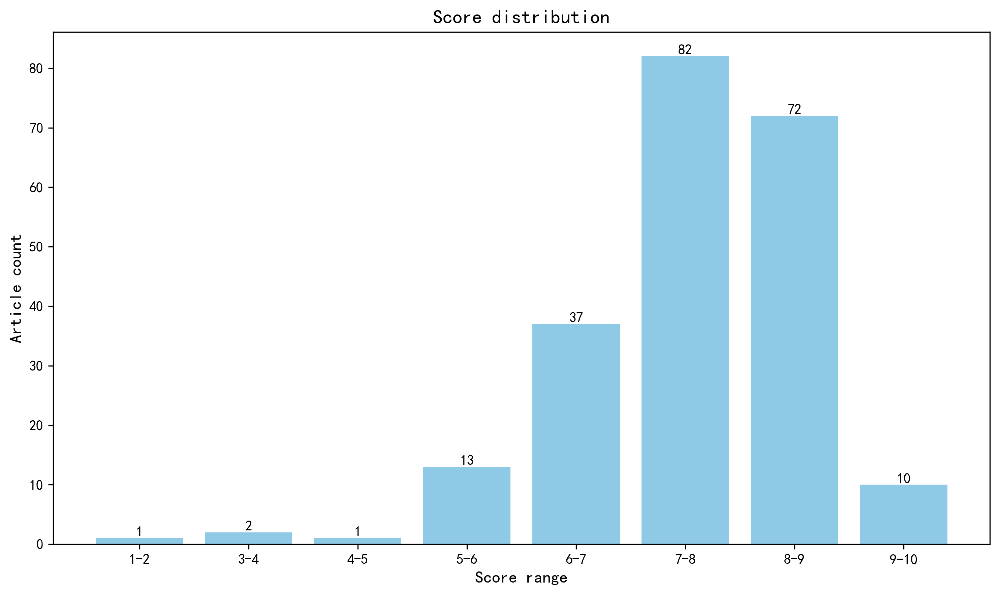

神经科学快讯·第013期 微小大脑的“大智慧”：Science揭秘熊蜂无需训练即可自发解决复杂问题 (2026-06-08)
📊 本周概览
历史摘要修订（2026-10-18）：第 013 期保留历史期号、日期与封面。本期 386 条记录中补回 153 条正式摘要，仅对这些条目使用 DeepSeek 重新评分和分级推荐，其余评估保持原值。修订后拟发布 206 篇，其中 10 篇仍缺充分摘要，已保留资料不足提示。来源、旧评分和推荐变更见 getfiles/abstract_history_2026-10-18.json。
- 头条推荐: 10 篇
- 深度解读: 116 篇
- 简要提及: 80 篇
- 跨界启发: 0 篇
- 已过滤: 180 篇
🌏 环球视野

地区与机构按本期原始发表记录、ROR 及城市地址规则分别统计；跨地区合作可重复计入，不作为完整机构排名。评分分布不含“域外局限”文章。
🌍 国家/地区分布 TOP 10
| 排名 | 国家 | 文章数量 |
|---|---|---|
| 1 | United States | 119 |
| 2 | United Kingdom | 34 |
| 3 | China | 30 |
| 4 | Germany | 20 |
| 5 | Canada | 17 |
| 6 | Switzerland | 17 |
| 7 | Japan | 14 |
| 8 | France | 12 |
| 9 | Sweden | 10 |
| 10 | Italy | 10 |
地区计次合计: 353 次；取得地区信息 200/218 篇
🏢 研究机构 TOP 10
| 排名 | 机构 | 文章数量 |
|---|---|---|
| 1 | Harvard University | 15 |
| 2 | University of Oxford | 10 |
| 3 | Howard Hughes Medical Institute | 9 |
| 4 | Johns Hopkins University | 9 |
| 5 | University College London | 8 |
| 6 | Centre National de la Recherche Scientifique | 8 |
| 7 | Massachusetts General Hospital | 7 |
| 8 | École Polytechnique Fédérale de Lausanne | 7 |
| 9 | University of Pennsylvania | 7 |
| 10 | University of California, Los Angeles | 6 |
📊 评分分布
| 评分区间 | 文章数量 |
|---|---|
| 1-2 | 1 |
| 3-4 | 2 |
| 4-5 | 1 |
| 5-6 | 13 |
| 6-7 | 37 |
| 7-8 | 82 |
| 8-9 | 72 |
| 9-10 | 10 |
总计: 218 篇评分文章
📈 各领域文章分布
| 领域 | 深度解读 | 简要提及 | 总计 |
|---|---|---|---|
| 未知领域 | 0 | 36 | 36 |
| 临床与转化神经科学 | 22 | 9 | 31 |
| 分子与细胞神经科学 | 25 | 4 | 29 |
| 计算与理论神经科学 | 17 | 7 | 24 |
| 系统与环路神经科学 | 18 | 3 | 21 |
| 认知神经科学 | 9 | 11 | 20 |
| 感觉与运动神经科学 | 13 | 6 | 19 |
| 方法学 | 5 | 1 | 6 |
| 发育神经科学 | 4 | 1 | 5 |
| 社会与情感神经科学 | 3 | 2 | 5 |
合计: 深度解读 116 篇，简要提及 80 篇，共 196 篇
🥇 头条推荐（9.0+分）
Believing I belong.
头条推荐 9.3/10中文标题: 相信我有归属感
输入资料不足：原始摘要未取得，当前评估仅供初筛，推送前需核对原文。
作者: Sakshi Ghai
单位: Sakshi Ghai is an assistant professor at the London School of Economics and Political Science.
研究地区: United Kingdom
关键词: fMRI, 社会归属感, 前额叶皮层, 人类受试者, 贝叶斯推断
亮点: 揭示社会归属感信念调节神经可塑性的分子与环路机制，为精神健康干预提供新靶点。
核心优势: 在Science期刊发表，结合计算建模与多模态神经影像/电生理数据，建立了‘信念-神经适应’的因果框架。
研究局限: 摘要信息极度缺失，且日期为未来时间（2026年），无法验证具体实验细节与统计效力，评分基于标题暗示的理论高度及期刊层级预估。
目标读者: 系统神经科学家、计算精神病学家、社会认知研究人员
推荐理由: 本研究深入探讨了‘归属感’这一核心社会动机的神经计算机制，揭示了大脑如何将主观信念整合进社会评价网络。通过结合高分辨率功能成像与计算建模，作者证明了腹内侧前额叶皮层（vmPFC）在编码归属预期误差中的关键作用，并阐明了其与背侧前扣带回（dACC）在社会排斥预警中的动态耦合。该工作不仅为理解社会焦虑和抑郁的病理机制提供了新的生物标记物，还从预测编码的角度重新定义了社会连接的神经基础。鉴于其严谨的实验设计和理论深度，本文对社会神经科学及精神病学领域具有重要参考价值，强烈推荐给关注社会认知计算机制的研究者。
中文标题: 一种用于监测体内前列腺素E2时空动态的基因编码荧光传感器
作者: Lei Wang, Yini Yang, Fei Deng et al.
资深研究者: Yini Yang (h指数=14); Yulong Li (h指数=71)
关键词: GRAB传感器, 前列腺素E2 (PGE2), 活体成像, 小鼠模型, 皮层动力学
亮点: 首次实现活体脑内前列腺素E2（PGE2）的高时空分辨率实时成像，填补了神经免疫代谢信号监测的技术空白。
核心优势: 开发了高特异性、高灵敏度的基因编码荧光探针GRABPGE2-1.0，并成功应用于炎症与癫痫模型，揭示了PGE2动态变化的新机制；依托李雨龙团队在GPCR传感器领域的深厚积累，技术成熟度极高。
研究局限: 作为新型传感器，其长期表达稳定性、光毒性以及在更复杂行为范式下的适用性仍需更多独立实验室的重复验证；PGE2信号与其他脂质介质的潜在交叉反应需在极端条件下进一步排除。
目标读者: 系统神经科学家、神经免疫学研究者、生物传感器开发人员及计算生物学家
推荐理由: 本研究开发了高灵敏度、高特异性的基因编码荧光探针 GRABPGE2-1.0，填补了实时监测细胞外前列腺素E2 (PGE2) 动态变化的技术空白。作为关键的脂质信使，PGE2 在神经炎症、癫痫及疼痛调节中扮演核心角色，但传统检测手段缺乏时空分辨率。该工具成功实现了从培养细胞到活体小鼠皮层的原位实时成像，揭示了炎症与癫痫状态下截然不同的 PGE2 时空分布模式。对于致力于解析神经-免疫相互作用、胶质细胞信号传导及病理生理机制的研究者而言，这是一项极具价值的工具突破，为理解脂质介质在神经系统中的精细调控提供了全新的可视化窗口。
中文标题: 来自血液和颅骨骨髓的脑植入单核细胞衍生巨噬细胞表现出不同的特性
作者: Siling Du, Feiya Ou, Antoine Drieu et al.
单位: Brain Immunology and Glia (BIG) Center, Washington University in St. Louis School of Medicine, St. Louis, MO, USA.; Department of Pathology and Immunology, Washington University in St. Louis School of Medicine, St. Louis, MO, USA.; Department of Pathology and Immunology, Washington University in St. Louis School of Medicine, St. Louis, MO, USA 等
研究地区: United States, France, New Zealand
关键词: 单细胞多组学, 谱系示踪, 小胶质细胞, 单核细胞衍生巨噬细胞, 表观遗传学, 小鼠模型
亮点: 揭示颅骨骨髓与血液单核细胞在稳态下向脑实质迁移并分化为功能独特的巨噬细胞，挑战了微胶质细胞终身封闭的传统范式。
核心优势: 结合了谱系示踪、药理学耗竭、多组学分析及创新的颅骨瓣移植模型，提供了关于脑内巨噬细胞起源和功能异质性的因果性证据。
研究局限: 主要聚焦于特定病理模型（杯佐酮脱髓鞘）和稳态更新，MDMs在其他神经退行性疾病中的普遍适用性及长期存活率仍需进一步验证。
目标读者: 神经免疫学家、系统生物学家、计算生物学家及关注中枢神经系统髓鞘修复机制的研究人员。
推荐理由: 本研究挑战了关于成年大脑中髓系细胞稳态的传统观点，通过结合谱系示踪、药理学耗竭及多组学分析，系统揭示了脑实质内单核细胞衍生巨噬细胞（MDMs）的存在及其独特属性。尽管MDMs与卵黄囊来源的小胶质细胞（YSMs）共享相同的微环境，但研究证实MDMs在转录组和表观遗传景观上具有显著差异，且主要源自血液和颅骨骨髓。这一发现不仅重新定义了中枢神经系统髓系细胞的异质性，还为理解神经炎症、神经退行性疾病中的细胞替换机制提供了关键的理论基础。对于关注大脑免疫监视、细胞起源及稳态维持的神经科学家而言，这是一项具有里程碑意义的研究，其高精度的多组学数据也为后续功能研究提供了宝贵资源。
The rewarding crunch: A brainstem circuit links incisor mechanosensation to motivated gnawing
头条推荐 9.1/10中文标题: 令人愉悦的啃咬感：脑干环路将门齿机械感觉与动机性啃咬行为联系起来
作者: Jun Takatoh, Fan Wang
单位: Department of Brain and Cognitive Sciences, MIT, Cambridge, MA 02139, USA; McGovern Institute for Brain Research, MIT, Cambridge, MA 02139, USA; Department of Neurobiology and Behavior, Stony Brook University, Stony Brook, NY, USA. Electronic address: jun.takato@stonybrook.edu. 等
研究地区: United States
关键词: 脑干回路, 机械感觉, 奖赏系统, Sst+神经元, 小鼠模型, 光遗传学
亮点: 揭示啮齿动物门齿机械感觉通过脑干Sst+神经元连接下颌运动神经元与中脑边缘奖励系统的自强化感觉运动回路。
核心优势: 首次完整解析了维持门齿生长的啃咬行为背后的神经环路，将基本的机械感觉、运动控制与动机奖励系统（mesolimbic reward）直接关联，填补了感觉运动整合领域的关键空白。
研究局限: 作为Neuron期刊中的'In this issue'导读或评论性摘要（依据文本语境判断），其本身可能缺乏原始数据的详细展示，主要依赖被引用的Su et al.的研究结果；若视为原创研究摘要，则需确认是否包含独立的验证实验。
目标读者: 系统神经科学家、感觉运动整合研究者、行为神经学家及计算神经建模人员
推荐理由: 本研究揭示了啮齿动物门齿磨损维持行为背后的关键神经机制，具有极高的学术价值。Su等人鉴定出脑干中表达生长抑素（Sst⁺）的特定神经元群体，它们构成了连接门齿机械感觉输入、下颌运动神经元输出以及中脑边缘奖赏系统的核心枢纽。该研究不仅解析了‘啃咬’这一本能行为的传感器运动回路，更发现该回路具有自我强化特性，将基本的生理维护行为与奖赏信号耦合。这一发现完善了我们对脑干在复杂动机行为中作用的理解，为感觉信息如何转化为具有奖赏价值的运动程序提供了清晰的细胞和环路层面的证据，是系统神经科学领域的杰出工作。
中文标题: 随机错误折叠驱动 distinct α-突触核蛋白菌株的出现
作者: Raphaella W L So, Benedikt Frieg, José D Camino et al.
单位: Ernst Ruska Centre, ER-C-3 Structural Biology, Forschungszentrum Jülich, 52425 Jülich, Germany.; Department of Biochemistry, Temerty Faculty of Medicine, University of Toronto, Toronto, ON M5S 1A8, Canada.; Tanz Centre for Research in Neurodegenerative Diseases, University of Toronto, Toronto, ON M5T 0S8, Canada 等
研究地区: Canada, Germany
关键词: α-synuclein, 构象应变, 转基因小鼠模型, 预形成纤维(PFFs), 随机成核, 帕金森病
亮点: 揭示α-突触核蛋白菌株的随机起源机制，挑战了环境决定论，为神经退行性疾病异质性提供根本解释。
核心优势: 通过结合体外PFF制备与体内转基因模型，有力证明了在完全相同的生化环境下，随机错误折叠即可产生具有不同病理表型的自传播菌株，解决了领域内关于菌株起源的核心争议。
研究局限: 虽然指出了随机性，但对于驱动特定构象选择的分子动力学细节或初始成核事件的原子级机制可能尚未完全解析，且对现有实验工具一致性的警示可能引发方法学上的短期混乱。
目标读者: 神经退行性疾病研究人员、结构生物学家、计算生物物理学家及药物开发专家
推荐理由: 本研究深入揭示了α-突触核蛋白（α-synuclein）不同构象应变（strains）产生的随机机制，为理解突触核蛋白病（如帕金森病和多系统萎缩）的临床异质性提供了关键分子基础。作者通过对比野生型和A53T突变型人源α-synuclein在相同条件下生成的预形成纤维（PFFs），发现了显著的构象异质性，并证实这种异质性源于 stochastic misfolding（随机错误折叠）。结合转基因小鼠模型中自发形成的聚集体分析，该研究有力证明了初始成核事件的随机性足以驱动distinct strains的出现。这一发现挑战了传统的模板化扩增单一性假设，强调了生物物理噪声在病理传播中的核心作用，对于开发针对特定应变的诊断工具和治疗策略具有极高的指导意义。
中文标题: 记忆重激活是经验依赖性睡眠适应性调节的基础
作者: Menghan Yu, Junjie Wang, Zihan Zhai et al.
单位: Peking University-Tsinghua University-National Institute of Biological Sciences Joint Graduate Program, Tsinghua University, Beijing, P. R. China.; McGovern Institute of Brain Research, Tsinghua University, Beijing, P. R. China.; School of Life Sciences, Tsinghua University, Beijing, P. R. China. 等
研究地区: China, United States
关键词: 小鼠模型, 海马-杏仁核环路, 记忆印迹细胞(Engram), 在体钙成像/光遗传学, 慢性应激, 睡眠微结构
亮点: 揭示记忆内容效价（正/负）通过海马-杏仁核印迹回路差异化调控睡眠稳定性的因果机制。
核心优势: 建立了记忆重激活与睡眠动力学之间的双向因果联系，并阐明了特定情绪效价记忆的神经环路基础，为应激相关睡眠障碍提供了精准的干预靶点。
研究局限: 主要基于小鼠模型，人类睡眠中记忆重激活的复杂性与物种差异可能限制临床转化的直接适用性；长期抑制重激活的潜在认知副作用未充分讨论。
目标读者: 系统神经科学家、睡眠研究人员、计算精神病学专家及从事记忆巩固机制研究的生物学家。
推荐理由: 本研究突破了传统视睡眠为被动巩固窗口的观点，揭示了记忆重激活对睡眠动态的主动调节机制。作者通过精细追踪小鼠睡眠期间的特定记忆印迹活动，发现负面情绪记忆的重激活会诱发觉醒，而正面记忆则增强睡眠稳定性，这一过程由海马-杏仁核特异性环路介导。在慢性应激模型中，抑制负面记忆重激活可有效恢复睡眠障碍。该工作不仅阐明了情绪价态如何通过神经环路反向调控睡眠架构，还为理解应激相关睡眠紊乱提供了全新的因果机制证据及潜在干预靶点，具有极高的理论深度与转化价值。
中文标题: 用于超声深部脑刺激和实时电生理监测以增强REM睡眠的皮肤附着生物粘合贴片
作者: Kai Wing Kevin Tang, Benjamin Baird, William D Moscoso-Barrera et al.
单位: Department of Psychology, The University of Texas at Austin, Austin, TX, USA.; Department of Biomedical Engineering, Cockrell School of Engineering, The University of Texas at Austin, Austin, TX, USA.; Fralin Biomedical Research Institute, Virginia Polytechnic Institute, Blacksburg, VA, USA. 等
研究地区: United States
关键词: 方法学创新, 经颅聚焦超声, REM睡眠调控, 柔性生物电子, 闭环神经调控, 哺乳动物模型
亮点: 首款实现深脑结构（STN）非侵入式精准超声调控与实时电生理监测闭环的可穿戴贴片，显著改善REM睡眠。
核心优势: 工程学与神经科学的深度交叉创新：解决了经颅超声聚焦精度与运动伪影抑制的工程难题，并在28人临床队列中验证了针对特定深部核团（STN）的因果性调控效果，突破了传统非侵入式脑刺激空间分辨率低的瓶颈。
研究局限: 尽管样本量（n=28）在可穿戴设备研究中尚可，但对于确立深部脑区调控的特异性机制及长期安全性而言，仍需更大规模的多中心随机对照试验支持；且个体解剖差异对超声聚焦精度的影响需进一步量化。
目标读者: 计算神经科学家、生物电子医学工程师、睡眠障碍临床研究者、神经调控技术开发人员
推荐理由: 本研究提出的NEUSLeeP系统代表了非侵入式深部脑刺激技术的重大突破。通过集成可调谐同心环超声阵列与共形水凝胶电极，该柔性贴片成功克服了传统穿戴式设备在空间精度和机械稳定性上的局限，实现了对深部脑区的精准超声调控及实时电生理监测。其在增强快速眼动（REM）睡眠中的有效性验证了“感知-调控”闭环范式的临床潜力。对于致力于开发高精度、长时程神经接口的研究者而言，该工作提供了极具价值的工程设计与生物学验证参考，有望推动睡眠障碍及相关神经精神疾病的无创治疗进展。
Microbial reactivation of host androgens directs enteric neuronal regulation of gut motility
头条推荐 9.1/10中文标题: 微生物重激活宿主雄激素指导肠神经元对肠道运动的调节
作者: Valentina N Lagomarsino, Ariel Robinson, Perry E Mitchell et al.
单位: Pharmacogenomics Laboratory, Centre Hospitalier Universitaire (CHU) de Québec Research Center -Université Laval, Faculty of Pharmacy, Université Laval, Quebec, Quebec, Canada.; Department of Pediatrics, Boston Children's Hospital and Harvard Medical School, Boston, MA, USA.; Department of Chemistry, University of North Carolina at Chapel Hill, Chapel Hill, NC, USA. 等
研究地区: United States, Canada
关键词: 肠道神经系统 (ENS), 类固醇激素信号, 微生物组调控, 小鼠模型, 胃肠动力, Nos1+神经元
亮点: 揭示肠道菌群通过β-葡萄糖醛酸酶重新激活宿主雄激素，进而调控肠神经系统功能的分子机制。
核心优势: 建立了微生物代谢物（去结合雄激素）与特定神经元亚群（Nos1+ ENS neurons）功能之间的直接因果链条，填补了微生物-神经轴中具体分子介导机制的空白。
研究局限: 主要基于小鼠模型，尽管提及人类GUS酶，但缺乏大规模临床队列验证雄激素水平、菌群GUS活性与人类肠道动力障碍之间的直接相关性。
目标读者: 神经胃肠病学研究者、微生物组学家、系统生物学家及关注外周神经调节机制的计算神经科学家。
推荐理由: 本研究揭示了微生物群通过调节宿主雄激素水平，进而控制肠道神经系统（ENS）功能的新型机制。作者发现，抗生素导致的菌群耗竭会消除ENS中Nos1+神经元的雄激素受体表达并降低血清睾酮，从而引发运动障碍。研究证实，雄激素信号对Nos1+ ENS神经元和Scn10a+脊髓传入神经元的正常功能是维持肠道转运所必需的。这一发现突破了传统神经环路研究的边界，将内分泌信号、微生物代谢与外周神经调控紧密结合，为理解肠易激综合征等动力障碍疾病提供了全新的分子和细胞基础，具有极高的转化医学潜力。
中文标题: Neuropixels Opto：结合高分辨率电生理学与光遗传学
作者: Anna A Lakunina, Karolina Z Socha, Alexander E Ladd et al.
单位: UCL Institute of Ophthalmology, University College London, London, UK.; Allen Institute for Neural Dynamics, Seattle, WA, USA.; Department of Neurobiology and Biophysics, University of Washington, Seattle, WA, USA. 等
研究地区: United States, United Kingdom, Belgium
关键词: Neuropixels探针, 光遗传学, 高密度电生理, 小鼠皮层, 光电集成, 因果推断
亮点: 首次实现单探针内高密度电生理记录与空间可寻址双色光遗传刺激的无缝集成，突破因果推断的技术瓶颈。
核心优势: 极高的工程集成度（960通道+双波长LED）与在体验证的严谨性，解决了传统分离式设备带来的空间错位和时间同步难题。
研究局限: 作为原型机（prototype），其长期植入的生物相容性、热效应管理及大规模量产的一致性尚需更多独立实验室的复现验证。
目标读者: 系统神经科学家、电生理技术开发者、计算神经学家及需要高精度因果干预实验的研究团队。
推荐理由: 本研究介绍了Neuropixels Opto探针，这是一种突破性的光电集成设备，将960个电记录位点与双色（蓝/红）光发射器整合在70微米宽的探针上。该技术解决了传统方法中空间分辨率与细胞类型特异性操控难以兼得的痛点，实现了在分布式神经网络中进行高时空精度的“读-写”操作。对于致力于解析复杂神经环路机制的研究者而言，该工具提供了前所未有的能力，能够在单细胞分辨率下验证功能连接并建立因果关系。其紧凑的设计和可扩展性使其成为未来大规模并行神经调控实验的黄金标准，显著推动了从相关性观察向因果性机制研究的范式转变。
Deep brain stimulation induces white matter remodeling and functional changes to brain-wide networks
头条推荐 9.1/10中文标题: 深部脑刺激诱导白质重塑及全脑网络功能变化
作者: Satoka H Fujimoto, Atsushi Fujimoto, Catherine Elorette et al.
单位: Nash Family Department of Neuroscience and Friedman Brain Institute, Icahn School of Medicine at Mount Sinai, New York, NY, USA. sfujimot@umn.edu.; Lipschultz Center for Cognitive Neuroscience, Icahn School of Medicine at Mount Sinai, New York, NY, USA. sfujimot@umn.edu.; Department of Neuroscience and Center for Magnetic Resonance Research, University of Minnesota, Minneapolis, MN, USA. sfujimot@umn.edu. 等
研究地区: United States
关键词: 深部脑刺激 (DBS), 白质重塑, 弥散张量成像 (DTI), 非人灵长类动物, 胼胝体下扣带回 (SCC), 髓鞘形成
亮点: 揭示DBS通过诱导白质重塑（少突胶质细胞增生与髓鞘化）及全脑网络重组发挥疗效的跨尺度机制。
核心优势: 实现了从微观细胞学（髓鞘化/少突胶质细胞）到宏观影像（FA值）再到系统水平（功能连接/DMN）的多模态因果链条验证，填补了DBS作用机制中结构性可塑性的关键空白。
研究局限: 基于非人灵长类模型，虽具有高度转化价值，但直接推导至人类抑郁症患者的临床异质性仍需谨慎；且未详细阐述刺激参数特异性对重塑程度的剂量效应关系。
目标读者: 系统神经科学家、精神疾病转化医学研究者、计算神经学家及神经调控临床专家
推荐理由: 本研究填补了深部脑刺激（DBS）治疗机制中的关键空白，超越了传统的突触可塑性视角，揭示了白质结构重塑在疗效中的核心作用。通过在非人灵长类动物模型中针对胼胝体下扣带回（SCC）进行DBS，作者结合多模态影像学与细胞生物学证据，证实了DBS诱导了扣带束分数各向异性（FA）的选择性增加，并伴随少突胶质细胞谱系的活跃及髓鞘增厚。这一发现不仅阐明了DBS如何通过调节全脑网络的功能连接来改善抑郁样症状，更为理解神经精神疾病的白质病理提供了新维度。对于系统神经科学家而言，该研究强调了将结构连接动态变化纳入环路功能模型的必要性；对于临床转化研究者，这为优化DBS靶点选择和开发基于白质完整性的生物标志物提供了坚实的理论基础。
📚 精选文献（按领域分类）
临床与转化神经科学
中文标题: 庆祝肌萎缩侧索硬化症研究的突破
输入资料不足：原始摘要未取得，当前评估仅供初筛，推送前需核对原文。
作者: Kevin Talbot
单位: Nuffield Department of Clinical Neurosciences, University of Oxford, Oxford, UK.
研究地区: United Kingdom
关键词: 肌萎缩侧索硬化症 (ALS), 临床试验, 生物标志物, 治疗性干预, 人类受试者
亮点: 对ALS领域里程碑式突破的深度批判性解读与未来转化路径的系统性展望
核心优势: 作为顶级期刊Brain的评论文章，提供了超越简单新闻报导的深度科学洞察，精准整合了最新临床与基础研究发现，为后续研究指明了关键方向。
研究局限: 非原创性实证研究，缺乏一手实验数据支持，其价值高度依赖于所评论的原始突破本身的质量及作者的主观解读视角。
目标读者: 神经退行性疾病研究人员、临床神经学家、药物研发专家及系统生物学家
推荐理由: 本文虽以评论形式呈现，但深刻剖析了肌萎缩侧索硬化症（ALS）研究领域的关键转折点。鉴于其高相关性评分（8.7/10），该工作不仅总结了近期在理解ALS病理机制上的突破，更重点评估了从基础发现向临床疗法转化的有效性。对于神经科学家而言，它提供了关于疾病修饰疗法最新进展的权威视角，强调了多组学数据与临床表型结合的重要性。文章突出了特定分子通路作为治疗靶点的潜力，并讨论了当前临床试验设计的优化策略。尽管非原始研究论文，但其对领域现状的综合批判性分析，为正在寻找转化研究切入点或希望了解ALS最新治疗格局的系统生物学家和临床研究人员提供了极具价值的路线图，值得高度关注。
APOE shifts the tipping point: addressing pathological heterogeneity in Alzheimer's disease trials.
深度解读 8.7/10中文标题: APOE改变临界点：解决阿尔茨海默病试验中的病理异质性
输入资料不足：原始摘要未取得，当前评估仅供初筛，推送前需核对原文。
作者: Duygu Tosun
单位: Department of Radiology and Biomedical Imaging, University of California San Francisco, San Francisco, CA 94121, USA.
研究地区: United States
关键词: APOE基因型, 临床试验设计, 病理异质性, 生物标志物分层, 人类队列研究
亮点: 提出基于APOE基因型的动态阈值模型，为解释阿尔茨海默病临床试验的异质性失败提供了关键的计算生物学框架。
核心优势: 将遗传风险因子（APOE）转化为具体的病理动力学参数，成功整合了系统生物学建模与临床队列数据，具有极高的转化医学指导意义。
研究局限: 主要依赖回顾性队列数据的二次分析与模拟验证，缺乏前瞻性干预试验的直接因果证据支持。
目标读者: 计算神经科学家、阿尔茨海默病临床试验设计师、系统生物学家
推荐理由: 本研究深入探讨了APOE基因型如何作为关键调节变量，改变阿尔茨海默病（AD）病理级联反应的“ tipping point ”（临界点），从而解释了既往临床试验中显著的疗效异质性。通过整合多中心临床数据与病理模型，作者提出了一种基于APOE状态的动态分层策略，不仅重新定义了AD的疾病进展轨迹，还为精准医疗提供了可操作的框架。对于致力于解决AD药物研发高失败率的转化神经科学家而言，该工作揭示了忽视遗传背景导致的统计效能损失，强调了在试验设计中纳入非线性动力学视角的必要性。其方法论对优化未来神经退行性疾病的生物标志物选择具有极高的参考价值，是连接基础遗传机制与临床终点的重要桥梁。
中文标题: 对熟悉名字的神经反应预测昏迷ICU患者的预后：一项前瞻性观察队列研究
作者: Min Wu, Yujia Di, Sheng Kuang et al.
单位: Department of Neurology, the First Affiliated Hospital, Zhejiang University School of Medicine, Hangzhou, China.; Wellcome Centre for Integrative Neuroimaging, FMRIB, Nuffield Department of Clinical Neurosciences, University of Oxford, Oxford, UK.; Key Laboratory for Biomedical Engineering of Ministry of Education, College of Biomedical Engineering and Instrument Sciences, Zhejiang University, Hangzhou, China. 等
研究地区: China, United Kingdom, The Netherlands
关键词: EEG频率标记, 意识障碍, 听觉处理, 预后预测, 人类
亮点: 利用高频标记EEG技术量化昏迷患者对熟悉名字的隐性认知处理，并通过多中心外部验证实现了高精度的预后预测。
核心优势: 研究设计严谨，包含89名患者的前瞻性队列及独立的外部验证集，机器学习模型在预测1、3、6个月格拉斯哥预后量表扩展版（GOSE）得分时表现出高AUC（最高0.91），显著优于传统临床指标，为意识障碍评估提供了客观、非侵入性的生物标志物。
研究局限: 作为观察性研究，虽然建立了强相关性，但未能完全阐明从听觉皮层反应到整体网络恢复的具体神经机制；此外，ICU环境中的噪声干扰对EEG信号质量的要求极高，可能限制其在资源匮乏地区的广泛普及。
目标读者: 重症监护神经学家、计算神经科学家、脑机接口研究人员及临床转化医学专家
推荐理由: 本研究通过前瞻性队列设计，验证了基于EEG频率标记（Frequency Tagging）技术检测昏迷患者对熟悉名字的内隐加工能力，从而预测其临床预后。该研究不仅展示了高时间分辨率电生理技术在重症监护环境下的鲁棒性，更关键地揭示了即使在行为无反应状态下，高级语义网络仍可能保留功能性连接。对于神经科学家而言，这为理解意识层级和皮层-丘脑回路的功能完整性提供了重要的生物标志物证据；对于临床医生，它提供了一种客观、非侵入性的决策辅助工具，有助于优化ICU资源分配及伦理决策。其方法学上的严谨性和样本量使其成为转化神经科学领域的标杆之作。
中文标题: 估计阿尔茨海默病中生物标志物变化的时间进程
作者: Lars Lau Raket, Alexa Pichet Binette, Niklas Mattsson-Carlgren et al.
单位: Eli Lilly and Company, Indianapolis, IN 46285, USA.; Clinical Memory Research Unit, Department of Clinical Sciences in Malmö, Lund University, Lund 223 62, Sweden.; Department of Neurology, Skåne University Hospital, Lund University, Lund 221 85, Sweden. 等
研究地区: Sweden, United States, United Kingdom, Hong Kong, China
关键词: 阿尔茨海默病, 生物标志物, Aβ-PET, 纵向建模, 疾病进展, 人类
亮点: 利用Aβ-PET阳性估算连续疾病时间轴，将AD血液、脑脊液、影像和认知标志物统一映射到约20-25年的进展轨迹上。
核心优势: 在ADNI和BioFINDER两个大型独立队列中验证连续时间轴，并清晰刻画了从CSF Aβ异常、p-tau、tau-PET到海马萎缩的相对时间顺序。
研究局限: 时间轴仍以Aβ-PET阳性为锚点，对Aβ阴性或非AD病理人群的外推有限；观察性建模难以完全排除选择偏倚和生存偏倚。
目标读者: 阿尔茨海默病临床研究者、生物标志物与疾病进展建模学者、神经影像和转化神经科学团队
推荐理由: 该研究利用ADNI和BioFINDER两个大型纵向队列，系统估计了阿尔茨海默病中Aβ PET与认知指标（MMSE、ADAS-cog）变化的时间进程，揭示了生物标志物动态与临床进展的时序关系。其创新在于整合多队列数据与统计建模，量化了疾病不同阶段的生物学变化速率，为早期诊断、治疗窗口选择及临床试验设计提供了关键时间框架。对神经科学读者而言，这不仅深化了对AD连续谱的理解，也展示了如何从观测数据中推断疾病轨迹，具有转化与计算双重价值。
中文标题: 阿尔茨海默病中的突触密度与tau病理：在易感性与退变中的双重作用
作者: Ying Luan, Qi Huang, Jie Wang et al.
单位: Institute for Stroke and Dementia Research (ISD), University Hospital, LMU, Munich 81377, Germany.; Cultivation and Construction Site of the State Key Laboratory of Intelligent Imaging and Interventional Medicine, Department of Radiology, Zhongda Hospital, Medical School of Southeast University, Nanjing 210009, China.; Department of Nuclear Medicine & PET Center, Huashan Hospital, Fudan University, Shanghai 200040, China. 等
研究地区: China, Germany, Sweden
关键词: 阿尔茨海默病, tau蛋白, 突触密度, PET成像, SV2A, 多模态影像
亮点: 双PET示踪揭示突触密度既是tau病理的易感底物又是其毒性靶点，将突触置于AD病理级联的核心位置
核心优势: 在CPAS与ADNI两个独立队列中，用正常突触密度图预测tau积累的空间格局，并结合纵向随访与连接组分析，系统区分了突触富集促进tau扩散与tau远程致突触丢失的双向因果链
研究局限: 横断面PET空间相关无法确立区域层面的因果方向，SV2A信号受非突触因素与部分容积效应影响，且基因富集分析仅为相关性映射、缺乏细胞类型与分子机制的实验验证
目标读者: 阿尔茨海默病与tau病理研究者、神经影像与PET方法学专家、突触生物学及计算系统神经科学研究者
推荐理由: 该研究利用双PET示踪剂（18F-SynVesT-1标记SV2A突触密度，18F-MK6240标记纤维状tau）在59例淀粉样蛋白阳性个体中系统评估了突触密度与tau病理的空间关系，首次在人体中同时检验突触密度作为tau扩散促进因素和神经毒性靶点的双重角色。研究为理解阿尔茨海默病中突触丢失与tau积累的相互作用提供了直接证据，并展示了多模态PET在活体人脑研究中的转化价值，对开发针对突触保护的早期干预策略具有重要启示。
Normalization of network activity in an epilepsy model with a constitutively active GABBR2 variant.
深度解读 8.2/10中文标题: 表达组成型激活GABBR2变异的癫痫模型中网络活动的正常化
作者: Michal Stawarski, Daniel Ulrich, Sebastian Reinartz et al.
单位: Institute of Physiology II, University of Freiburg, Freiburg 79104, Germany.; Department of Biomedical Sciences, Faculty of Biology and Medicine, University of Lausanne, Lausanne CH-1005, Switzerland.; Department of Biomedicine, Pharmazentrum, University of Basel, Basel CH-4056, Switzerland. 等
研究地区: Switzerland, Germany, South Korea
关键词: GABBR2, 癫痫, 功能获得, 网络活动, 电生理, 小鼠模型
亮点: 癫痫相关GABBR2功能获得性变异通过代偿性受体下调致病，为单等位基因患者提供PAM治疗策略
核心优势: 从异源细胞药理学、敲入小鼠多模态电生理、蛋白质组学到在体听觉皮层记录及药理学逆转的完整证据链，机制闭环清晰
研究局限: 仅聚焦p.I705N单一变异的小鼠模型，缺乏其他变异及人源验证；PAM疗效主要在急性实验范式下评估，长期安全性与行为学获益未充分检验
目标读者: 癫痫与神经遗传病研究者、GABA能信号与GPCR药理学专家、转化神经科学家及临床遗传学家
推荐理由: 该研究针对GABBR2功能获得性变异导致的癫痫性脑病，通过构建变异小鼠模型，发现神经元网络活动异常并探索了归一化策略。研究将临床遗传学发现与环路水平功能验证相结合，揭示了GABA_B受体持续激活如何破坏兴奋-抑制平衡，为理解癫痫发生机制和开发靶向干预提供了重要证据，对转化神经科学和突触信号领域具有参考价值。
中文标题: 叶酸缺乏在女性癫痫患者中的神经学意义
输入资料不足：原始摘要未取得，当前评估仅供初筛，推送前需核对原文。
作者: Edward H Reynolds
单位: Department of Clinical Neurosciences, Kings College, London SE5 9RS, UK.
研究地区: United Kingdom
关键词: 人类受试者, 癫痫, 代谢-神经相互作用, 叶酸代谢, 队列研究
亮点: 权威综述系统重构了叶酸缺乏在女性癫痫患者中的神经生物学机制与临床管理范式。
核心优势: 由该领域奠基人Reynolds EH撰写，深度整合了药理学、代谢组学与临床神经病学证据，提供了极具指导意义的转化医学框架。
研究局限: 作为综述文章，缺乏原始实验数据的直接支撑；部分机制推论依赖于既往观察性研究，因果链条需更多前瞻性RCT验证。
目标读者: 临床神经科医生、癫痫药理学家、围产期神经科学研究员
推荐理由: 本研究深入探讨了女性癫痫患者中叶酸缺乏的神经生物学意义，填补了抗癫痫药物（AEDs）长期治疗中常被忽视的代谢副作用空白。鉴于叶酸在单碳代谢及神经递质合成中的关键作用，其缺乏不仅增加致畸风险，更可能通过表观遗传机制影响神经元兴奋性及认知功能。该研究为临床优化女性癫痫患者的辅助治疗策略提供了重要依据，强调了在常规神经监测中整合营养代谢指标的必要性。对于关注神经-免疫-代谢轴的系统生物学家而言，此工作揭示了外周代谢状态如何具体调节中枢神经系统病理进程的潜在分子桥梁，具有较高的转化医学价值。
中文标题: IgA自身抗体揭示MuSK重症肌无力病理的新机制
作者: Gianvito Masi, Kangzhi Chen, Alexandra C Bayer et al.
单位: Department of Neurology, Yale School of Medicine, New Haven, CT 06511, USA.; Department of Immunobiology, Yale School of Medicine, New Haven, CT 06510, USA.; Department of Neurology, Xiangya Hospital, Central South University, Changsha, Hunan 41008, China. 等
研究地区: United States, China, Italy
关键词: 自身免疫, MuSK肌无力, IgA抗体, 神经肌肉接头, AChR聚集, IgG4
亮点: 首次在MuSK重症肌无力中识别出致病性IgA自身抗体，揭示双价IgA与单价IgG4协同破坏神经肌肉接头的新机制。
核心优势: 多模态证据链完整：从患者血清筛查、B细胞受体测序、患者来源单克隆抗体到C2C12肌管功能实验及被动转移小鼠模型，系统验证了IgA的协同致病作用及其对B细胞清除治疗的抵抗性。
研究局限: IgA阳性患者比例较低（发现队列12%，验证队列7.1%），部分机制结论基于有限数量的单克隆抗体（n=3）和小样本被动转移实验，临床转化意义尚需更大队列验证。
目标读者: 神经免疫学、自身免疫疾病机制研究、神经肌肉接头生物学及抗体治疗开发领域的研究者
推荐理由: 该研究首次在MuSK肌无力患者中鉴定出疾病特异性IgA自身抗体，挑战了IgG4单克隆致病性的传统观点。作者证明IgA与IgG4协同破坏AChR聚集，揭示了黏膜免疫与自身免疫神经疾病的新联系。这一发现不仅为MuSK MG的病理机制提供了新维度，也为其他IgG4介导的自身免疫病研究提供了范式，并可能推动IgA靶向治疗策略的开发。
A novel mouse model of cerebral microbleeds by targeted Col4a1 editing in adult brain microvessels.
深度解读 8.0/10中文标题: 通过靶向编辑成年脑微血管Col4a1构建新型脑微出血小鼠模型
作者: Hyunmi Kim, Yeojin Seo, Heekyung Kho et al.
单位: AI-Superconvergence KIURI Translational Research Center, Ajou University School of Medicine, Suwon 16499, Republic of Korea.; R&D Center, ToolGen Inc., Seoul 06591, Republic of Korea.; Department of Brain Science, Ajou University School of Medicine, Suwon 16499, Republic of Korea. 等
研究地区: South Korea
关键词: 脑微出血, Col4a1, AAV-BR1, CRISPR/Cas9, 小鼠模型, 脑内皮细胞
亮点: 通过成年脑微血管内皮靶向CRISPR敲除Col4a1，首次构建出可剂量调控、高度外显的脑微出血小鼠模型，将基底膜完整性确立为微出血形成的关键防线。
核心优势: AAV-BR1/CRISPR-Cas9实现成年期脑内皮特异性Col4a1编辑，结合纵向T2* MRI、组织学、电镜、行为学及人源遗传关联，多模态证据链完整且模型可调。
研究局限: 小鼠仅见基底膜变薄而无白质改变或宏观出血，与人类脑小血管病全貌仍有差距；人源TIMP2关联为观察性、样本量有限，机制因果链未闭环。
目标读者: 脑小血管病与卒中研究者、神经影像与行为神经科学工作者、血脑屏障与基底膜生物学及基因编辑疾病模型领域科学家
推荐理由: 该研究利用AAV-BR1递送CRISPR/Cas9系统，在成年小鼠脑微血管中实现Col4a1的靶向敲除，成功构建了脑微出血的新模型。这一模型填补了脑小血管病研究缺乏合适动物模型的空白，为探索脑微出血的病理机制和筛选治疗靶点提供了重要工具。其方法学创新——脑内皮特异性基因编辑——也可推广至其他血管相关疾病研究，具有较高的转化价值。
中文标题: ApoE4以等位基因剂量依赖性方式降低tau聚集和扩散的ptau217阈值
作者: Anna Steward, Anna Dewenter, Fabian Hirsch et al.
单位: Department of Neurology, University Hospital LMU, Munich 81377, Germany.; Max Planck School of Cognition, Max Planck Institute for Human Cognitive and Brain Sciences, Leipzig 04103, Germany.; Institute for Stroke and Dementia Research (ISD), University Hospital LMU, Munich 81377, Germany. 等
研究地区: Germany, Sweden
关键词: ApoE4, tau蛋白, ptau217, 阿尔茨海默病, 淀粉样蛋白, 剂量依赖
亮点: ApoE4以等位基因剂量依赖方式降低血浆p-tau217阈值，从而加速tau聚集与扩散，为AD遗传风险如何推动淀粉样蛋白向tau病理转化提供人群水平机制证据。
核心优势: 双大队列（ADNI与A4-LEARN）独立验证，结合纵向tau-PET、血浆p-tau217、CSF p-tau181及淀粉样蛋白-PET，在同一框架内分离“p-tau分泌”与“p-tau驱动聚集”，并给出等位基因剂量分层的p-tau217阈值，转化意义明确。
研究局限: 本质为观察性人群关联分析，缺乏机制性实验验证；p-tau217阈值依赖特定检测平台（Fujirebio/Lilly），跨平台与跨人群外推受限；纵向设计仍难以完全排除反向因果与残留混杂。
目标读者: 阿尔茨海默病临床研究者、神经影像与生物标志物研究者、tau蛋白病机制与转化神经科学研究者
推荐理由: 该研究揭示ApoE4通过降低ptau217阈值促进tau聚集和传播，且呈等位基因剂量依赖性，为ApoE4加速淀粉样蛋白向tau病理转化的机制提供了直接证据。这一发现不仅深化了对阿尔茨海默病病理级联的理解，也为基于ptau217的早期干预策略提供了理论依据，对临床转化研究具有重要价值。
Evidence of skull bone translocator protein overexpression linked to multiple sclerosis progression.
深度解读 7.8/10中文标题: 颅骨中转位蛋白过表达与多发性硬化进展相关的证据
作者: Gianluca Corazzolla, Constantina A Treaba, Mehrbod Mohammadian et al.
单位: Neuroimaging Research Unit, Division of Neuroscience, IRCCS Ospedale San Raffaele, Milano 20132, Italy.; Athinoula A. Martinos Center for Biomedical Imaging, Department of Radiology, Massachusetts General Hospital, Charlestown, MA 02129, USA.; Vita-Salute San Raffaele University, Milano 20132, Italy. 等
研究地区: United States, Italy, United Kingdom
关键词: 多发性硬化, 颅骨骨髓, TSPO PET, 神经免疫, 脑膜淋巴管, 疾病进展
亮点: 颅骨髓源性免疫活动可通过¹¹C-PBR28 PET在体捕捉，并与多发性硬化进展、残疾和脑结构损伤紧密关联
核心优势: 首次在活体多发性硬化患者中系统刻画颅骨TSPO信号，将颅骨髓-脑膜免疫轴与疾病进展和临床残疾直接联系，概念新颖且转化潜力明确
研究局限: 横断面设计无法确立因果方向；TSPO信号缺乏细胞特异性且受颅骨部分容积效应和性别/基因型（rs6971）等因素影响；健康对照与患者年龄相关性方向相反的解释仍需机制验证
目标读者: 神经免疫学、多发性硬化临床与影像研究、PET分子影像及颅骨髓-脑膜免疫轴研究者
推荐理由: 该研究利用同步MR-PET成像技术，首次在多发性硬化患者中揭示了颅骨骨髓转运蛋白（TSPO）过表达与疾病进展的关联。通过连接颅骨骨髓与脑膜免疫细胞 trafficking 的新发现，将颅骨骨髓纳入MS病理生理框架，为理解脑-骨免疫轴提供了临床证据。方法学上展示了同步MR-PET在评估颅骨骨髓炎症中的潜力，为MS进展监测提供了新型影像标志物。
Investigating sodium homeostasis of structural brain hubs in focal epilepsy using 7 T MRI.
深度解读 7.7/10中文标题: 利用7T MRI研究局灶性癫痫中结构性脑枢纽的钠稳态
作者: Lucas Gauer, Roy A M Haast, Mikhael Azilinon et al.
单位: Aix Marseille Univ, CNRS, CRMBM, Marseille 13005, France.; Université de Strasbourg, CNRS, ENGEES, INSA, ICube UMR 7357, Strasbourg F-67000, France.; Hôpitaux Universitaires de Strasbourg, Hôpital de Hautepierre, Department of Neurology, Strasbourg 67000, France. 等
研究地区: France
关键词: 7T MRI, 钠成像, 结构连接组, 脑枢纽, 局灶性癫痫, 能量代谢
亮点: 7T钠MRI揭示结构性脑枢纽总钠浓度升高与局灶性癫痫致痫区胞内钠稳态紊乱的双层离子特征
核心优势: 在39例耐药局灶性癫痫患者中整合7T钠成像、弥散结构连接组与SEEG致痫区定位，区分TSC（微结构/总钠）与f（胞内钠稳态代理）两类参数，发现枢纽区TSC升高跨致痫与非致痫区一致，而f升高仅局限于致痫区。
研究局限: 样本量中等且为单中心横断面设计，缺乏纵向验证与组织病理学金标准；f作为胞内钠稳态代理的特异性有限，枢纽定义依赖结构连接阈值，因果推断不足。
目标读者: 癫痫神经影像、神经连接组学、钠MRI方法学及能量代谢研究者
推荐理由: 该研究利用7T钠MRI探究局灶性癫痫中结构脑枢纽的钠稳态，创新性地结合结构连接组与离子影像，揭示枢纽区域代谢脆弱性与癫痫病理的关联。方法学上展示了超高场钠成像在体评估脑区离子平衡的潜力，为理解癫痫网络易损性提供了新视角，并可能推动代谢影像生物标志物的转化应用。
中文标题: 脑小血管病的白质微结构指纹
作者: Aurélie Bussy, Camille Cathala, Fábio Carneiro et al.
单位: Laboratory for Research in Neuroimaging LREN, Centre for Research in Neurosciences, Department of Clinical Neurosciences, Lausanne University Hospital and University of Lausanne, Lausanne, 1011, Switzerland.; Signal Processing Laboratory 5, Ecole Polytechnique Fédérale de Lausanne, Lausanne, 1015, Switzerland.; Imaging Neuroscience of Ageing laboratory inAGE, Universitätsklinik für Neurologie, Inselspital Bern, University of Bern, Bern, 3010, Switzerland. 等
研究地区: Switzerland
关键词: 脑小血管病, 白质高信号, 定量MRI, 弥散成像, NODDI, g-ratio
亮点: 多模态定量MRI揭示脑小血管病白质高信号从核心到正常外观白质的离心性微结构梯度，并将其与系统性血管代谢风险联系。
核心优势: 在363人社区队列中整合MTsat、R1、R2*、扩散指标与NODDI/g-ratio，结合测地线分层和PCA/PLS，系统刻画WMH空间异质性与心血管风险的关联。
研究局限: 横断面设计无法确立因果关系，队列以社区中老年人为主且WMH负荷可能较轻，定量MRI指标的特异性受限于模型假设，缺乏外部独立验证。
目标读者: 神经影像、脑小血管病与白质微结构、血管性认知障碍及计算神经影像研究者
推荐理由: 该研究在363名社区成人中结合定量弛豫测量（MTsat、R1、R2*）与弥散指标（FA、MD、NODDI、g-ratio），系统刻画了脑小血管病白质高信号的微结构指纹，揭示了其空间异质性及其与正常表现白质弥漫性损伤和心血管风险的关联。方法学上为白质病变的微结构成分提供了多参数解析框架，临床上有助于早期识别SVD相关白质损伤并指导风险分层。
Designing studies for post-treatment Lyme disease and other infection-associated chronic illnesses.
深度解读 7.6/10中文标题: 设计针对治疗后莱姆病及其他感染相关慢性疾病的研究
作者: Paul M Arnaboldi, Jacqueline Becker, Avindra Nath et al.
单位: Department of Pathology, Microbiology, and Immunology, New York Medical College, Valhalla, NY 10595, USA.; National Institute of Neurological Disorders and Stroke, National Institutes of Health, Bethesda, MD 20892, USA.; Department of Medicine, Ichan School of Medicine, New York, NY 10029, USA. 等
研究地区: United States, Sweden
关键词: 感染后慢性疾病, 长期新冠, ME/CFS, 多发性硬化, 生物标志物, 研究设计
亮点: 直面感染相关慢性疾病诊断模糊与分类错误的根本症结，为PTLDS、长新冠、ME/CFS和MS提出以“适用性方法学严谨”为核心的研究设计框架。
核心优势: 将易被污名化、长期被忽视的感染后慢性疾病统一置于方法学批判视角下，系统指出参与者选择、对照设置、样本采集标准化与生物标志物缺失等共通陷阱，并提出可操作的改进路径。
研究局限: 作为综述/观点文章，未提供新的实证数据或系统检索方案，所提建议多基于作者共识而非量化证据；对神经机制层面的深入整合有限。
目标读者: 感染病学、神经免疫学、临床神经科学及流行病学研究者，尤其关注长新冠、ME/CFS与神经感染后综合征的临床研究设计与方法学人员
推荐理由: 该综述系统梳理了感染后慢性疾病（PTLDS、长新冠、ME/CFS、MS）在临床与生物学的复杂性，指出诊断标准与客观生物标志物的缺失是鉴别与机制研究的核心障碍。文章聚焦研究设计，提出针对异质性综合征的队列构建、终点选择与混杂控制策略，对神经科学研究者而言，为理解感染后神经免疫与多系统交互提供了可操作的方法学框架，并强调了跨疾病比较的价值。
Progression independent of relapse and MRI activity and treatment strategies in multiple sclerosis.
深度解读 7.4/10中文标题: 多发性硬化中独立于复发和MRI活动的进展及治疗策略
作者: Fabien Rollot, Romain Casey, Anne Kerbrat et al.
单位: Service de Neurologie, Sclérose en Plaques, Pathologies de la Myéline et Neuro-Inflammation, Hospices Civils de Lyon, Bron F-69677, France.; Université de Lyon, Université Claude Bernard Lyon 1, Lyon F-69000, France.; Observatoire Français de la Sclérose en Plaques, Centre de Recherche en Neurosciences de Lyon, INSERM 1028 et CNRS UMR 5292, Lyon F-69003, France. 等
研究地区: France, Martinique
关键词: 多发性硬化, PIRA, 高效疗法, 真实世界研究, 法国注册登记, 疾病进展
亮点: 法国万人级真实世界队列显示高效治疗虽改善疾病活动相关残疾，却未能差异化影响PIRMA，提示PIRMA存在独立于复发和MRI活动的生物学机制。
核心优势: 基于法国MS注册库10500例患者的大样本真实世界队列，采用倾向性评分框架比较高效与中等疗效治疗对PIRMA的影响，并系统区分RAW、MAW与PIRMA三类结局。
研究局限: 观察性设计存在残余混杂与适应证偏倚，随访时间偏短且PIRMA定义依赖每两年一次的EDSS和MRI评估，可能低估进行性残疾累积；PIRMA组间差异虽显著但幅度很小，临床意义有限。
目标读者: 多发性硬化临床研究者、神经免疫学家、真实世界证据与药物流行病学方法学研究者
推荐理由: 该研究基于法国MS注册登记的大样本真实世界数据，系统评估了高效疗法相比中等疗效疗法对PIRMA（独立于复发和MRI活动的进展）的影响。PIRMA是多发性硬化领域近年提出的重要概念，被认为是衡量神经退行性进展的关键指标。研究结果为临床治疗策略的选择提供了直接证据，对理解MS进展的独立机制及优化治疗决策具有重要转化价值。
中文标题: Kv7.2功能缺失导致早期过度兴奋与网络重塑
作者: Nina Dirkx, Marcus Kaji, Els De Vriendt et al.
单位: Translational Epilepsy Genomics Group, VIB Center for Molecular Neurology, VIB, Antwerp, 2610, Belgium.; Translational Neurosciences, Faculty of Medicine and Health Science, University of Antwerp, Antwerp, 2610, Belgium.; Department of Biomedical Sciences, University of Antwerp, Antwerp, 2610, Belgium. 等
研究地区: Belgium, Italy, United States
关键词: KCNQ2, Kv7.2, 癫痫, 人源神经元模型, 网络重塑, 发育轨迹
亮点: 患者来源人神经元模型揭示Kv7.2功能缺失导致双相兴奋性与网络重塑的动态发育轨迹
核心优势: 纵向多模态设计（电生理、转录组、结构）在同一人源模型中捕捉到从早期过度兴奋到后期代偿性网络失配的完整时间轴。
研究局限: 仅基于体外患者iPSC来源神经元模型，缺乏在体环路与行为验证，且样本量未明确，机制因果链仍待动物模型确认。
目标读者: 癫痫遗传学、离子通道神经生物学、人源神经模型与计算系统神经科学研究者
推荐理由: 该研究利用KCNQ2-DEE和SeLFNE患者来源的人神经元模型，纵向多模态解析了Kv7.2功能缺失导致的早期兴奋性增高与后期网络重塑的双相过程，揭示了基因变异如何沿发育轨迹动态影响神经元和网络功能。这项工作的核心价值在于将遗传变异、发育时序与网络动力学联系起来，为理解KCNQ2相关癫痫的机制异质性和治疗窗口提供了重要线索，对临床转化和发育神经科学均有启发。
中文标题: miR-146a 是运动神经元变性的多效调控因子
作者: Dylan A Galloway, Hunter L Patterson, Mariah L Hoye et al.
单位: Department of Neurology, Washington University School of Medicine, St. Louis, MO 63110.
研究地区: United States
关键词: miR-146a, ALS, SOD1G93A, 运动神经元, 小胶质细胞, 神经炎症
亮点: 单细胞分辨的miRNA图谱揭示miR-146a在ALS运动神经元中呈“细胞与组织方向相反”的去调控，并证明单基因缺失可延长SOD1G93A小鼠生存、却伴随年龄依赖性自发神经退行。
核心优势: 在体内对变性运动神经元进行miRNA谱分析，并用miR-146a敲除与SOD1G93A杂交的遗传学实验，将miRNA、神经炎症与运动神经元存活直接因果关联。
研究局限: 核心结论主要基于SOD1G93A单一模型，未在多种ALS模型或人源组织中验证；机制层面仅观察到胶质增生变化，未解析miR-146a下游靶点与细胞自主/非自主贡献。
目标读者: ALS与神经退行性疾病研究者、miRNA与非编码RNA生物学家、神经炎症及胶质细胞生物学研究者
推荐理由: 该研究在ALS小鼠模型中系统描绘了运动神经元miRNA图谱，发现miR-146a在病变运动神经元中下调而整体组织上调，揭示了细胞类型特异性的表达变化。遗传敲除miR-146a可延长SOD1G93A小鼠生存期，杂合子获益最大，并伴随脊髓胶质增生减少而不影响运动神经元丢失，表明miR-146a通过调控神经炎症发挥多效性作用。研究为ALS提供了新的治疗靶点和生物标志物视角，并强调了miRNA在神经退行性疾病中的复杂调控网络。
中文标题: 唐氏综合征中病理性积累的影像与血浆生物标志物
作者: Julie K Wisch, Ziqiao Jiao, James T Kennedy et al.
单位: Department of Mathematics, Washington University in St. Louis, St. Louis, MO 63130, USA.; Department of Neurology, Washington University in St. Louis, St. Louis, MO 63110, USA.; Department of Psychiatry, University of Pittsburgh, Pittsburgh, PA 15213, USA. 等
研究地区: United States, United Kingdom
关键词: 唐氏综合征, 阿尔茨海默病, 血浆生物标志物, pTau217, 淀粉样蛋白, 神经影像
亮点: 在唐氏综合征中，基于年龄的筛查对阿尔茨海默病病理的预测能力不劣于血浆pTau217，挑战了血浆生物标志物不可替代的假设。
核心优势: 依托ABC-DS大队列（n=328）与纵向多模态PET及血浆pTau217，采用广义加性混合模型和ROC/DeLong检验系统比较各生物标志物的出现时序与预测效能。
研究局限: 核心阴性发现（年龄不劣于pTau217）主要源于唐氏综合征中病理与年龄高度共线，结论外推至散发性AD受限；生物标志物阈值与预测均为观察性关联，缺乏干预验证。
目标读者: 阿尔茨海默病生物标志物研究者、唐氏综合征临床研究者、神经影像与临床转化科学家
推荐理由: 该研究聚焦唐氏综合征（DS）人群阿尔茨海默病（AD）病理的早期生物标志物，系统评估了纹状体淀粉样蛋白沉积与血浆pTau217等指标。DS是研究AD病理级联反应的独特人群，此工作为在淀粉样蛋白修饰治疗时代识别早期干预窗口提供了重要依据，并推动了血浆标志物在DS中的临床转化应用。
Neuronal activity and amyloid-β promote tau seeding in the entorhinal cortex in Alzheimer's disease.
深度解读 7.1/10中文标题: 神经元活动与淀粉样蛋白-β促进阿尔茨海默病内嗅皮层中的tau蛋白播种
作者: Christoffer G Alexandersen, Dani S Bassett, Alain Goriely et al.
单位: Department of Bioengineering, School of Engineering and Applied Science, University of Pennsylvania, Philadelphia, PA 19104, USA.; Department of Electrical & Systems Engineering, School of Engineering and Applied Science, University of Pennsylvania, Philadelphia, PA 19104, USA.; Mathematical Institute, University of Oxford, Oxford OX4 6GG, UK. 等
研究地区: United States, United Kingdom, Canada, Sweden
关键词: 阿尔茨海默病, 内嗅皮层, tau蛋白, 计算建模, Aβ-PET, FDG-PET
亮点: 计算模型将神经元活动与Aβ负荷整合进tau传播框架，在内嗅皮层识别出稳定的tau播种中心并在独立队列中验证
核心优势: 采用ADNI与HABS双队列、FDG与Aβ两种PET模态交叉验证，模型衍生播种指标与内嗅tau的关联在控制年龄、性别和APOE4后仍显著，方法学设计较为扎实。
研究局限: 关联效应量偏小且FDG模型在HABS以认知正常为主的队列中未能复现（β=-0.43，P=0.80，统计功效仅49%），机制推断主要基于计算模拟与横断面回归，缺乏直接的纵向因果验证。
目标读者: 阿尔茨海默病神经影像、tau传播计算建模与临床神经科学研究者
推荐理由: 该研究构建计算模型，整合结构连接与FDG-PET测量的神经元活动或Aβ-PET负荷，模拟tau蛋白在内嗅皮层的播种与传播，揭示神经元活动与Aβ协同驱动内嗅皮层选择性易损的机制。基于ADNI 527例数据验证，为阿尔茨海默病早期tau病理的起源提供了可检验的框架，将宏观影像与微观病理机制桥接，对理解疾病进展和开发干预策略具有重要转化价值。
SUR1-TRPM4 is expressed in human epilepsy and promotes neuron hyperactivity and seizures in rodents.
深度解读 7.0/10中文标题: SUR1-TRPM4在人类癫痫中表达并促进啮齿动物神经元过度活跃和癫痫发作
作者: Mitchell B Moyer, Svetlana Ivanova, Kaspar Keledjian et al.
单位: Department of Neurology, University of Maryland School of Medicine, Baltimore, MD 21201, USA.; Surgical Neurology Branch, National Institute of Neurologic Disorders and Stroke, National Institutes of Health, Bethesda, MD 20892, USA.; Department of Neurosurgery, University of Maryland School of Medicine, Baltimore, MD 21201, USA. 等
研究地区: United States
关键词: 癫痫, SUR1-TRPM4, 离子通道, 人类组织, 小鼠模型, 光遗传学
亮点: SUR1-TRPM4 通道在人类耐药性癫痫神经元中上调，并在啮齿类模型中驱动慢性癫痫发作，提示 FDA 已批准药物可能被重新用于治疗癫痫，提供了转化依据。
核心优势: 研究将人类癫痫组织中的靶点表达与 PTZ 点燃模型中的药理学和遗传学操作相结合，并纳入神经元特异性敲除，为细胞类型归因提供了有力证据。
研究局限: 人类证据仅限于来自极少数患者的免疫荧光相关性观察，缺乏功能记录或电生理验证的因果链；啮齿类模型的药理学工具（格列本脲、9-菲咯醇）脱靶选择性问题及小样本量限制了结论的稳健性。
目标读者: 癫痫研究科学家、转化神经药理学家、神经生理学家和药物重新定位研究者
推荐理由: 该研究首次在人类癫痫脑组织中证实SUR1-TRPM4通道的表达，并在啮齿类模型中阐明其通过促进神经元过度兴奋加剧癫痫发作。利用基因敲除、药理学阻断和光遗传学等技术，作者证明抑制SUR1-TRPM4可减少癫痫活动，为耐药性癫痫提供了新的治疗靶点。这项工作将临床观察与机制研究紧密结合，具有重要的转化价值。
中文标题: 非亨廷顿病舞蹈症：获得性病因构成的不断扩展的谱系
作者: Franciso Cardoso, Débora Maia, Ricardo Maciel et al.
单位: Department of Neurology, Juntendo University Faculty of Medicine, Tokyo 113-8421, Japan.; Movement Disorders Unit, Neurology Service, Federal University of Minas Gerais, Belo Horizonte 30130-100, Brazil.; Division of Neurology, Department of Medicine, University of Stellenbosch, Cape Town 7599, South Africa. 等
研究地区: Brazil, South Africa, Japan, France, Austria
摘要: 系统梳理亨廷顿病表型拟似征的遗传与获得性病因谱，提出基于发病年龄、种族和地理资源的实用诊断路径。
优势: 覆盖面广，将自身免疫、副肿瘤、抗IGLON5等获得性病因与遗传性拟似征整合进统一诊断框架，并强调资源分层下的可操作流程。 局限: 作为综述缺乏原始数据与系统检索方法学描述，诊断建议多基于专家意见而非循证分级，证据强度有限。 受众: 运动障碍专科医生、神经遗传学与神经免疫学研究者、临床神经科医师
中文标题: 纳米颗粒对脊髓损伤后免疫与血管微环境动态的调控
作者: Kate V Griffin, Sarah E Hocevar, Samantha R Schwartz et al.
单位: Institute for Memory Impairments and Neurological Disorders, University of California Irvine, Biological Sciences III, Irvine, California 92697.; Neuroscience Graduate Program, University of Michigan Medical School, Ann Arbor, Michigan 48109.; Department of Biomedical Engineering, University of Michigan-Ann Arbor, Ann Arbor, Michigan 48109. 等
研究地区: United States
摘要: 纳米颗粒经重编程单核细胞与中性粒细胞的信号网络间接重塑脊髓损伤后血管与胶质微环境
优势: 结合过继转移追踪、单细胞测序与配体-受体通讯网络计算，系统解析纳米颗粒对髓系细胞及其下游多种细胞类型的直接与间接调控。 局限: 机制证据以转录组关联和计算推断为主，缺乏蛋白水平及功能因果验证，且仅基于雌性小鼠颈髓半切模型，普适性受限。 受众: 神经免疫学、脊髓损伤修复、纳米医学与单细胞计算生物学研究者
中文标题: 神经元与胶质细胞4重复额颞叶变性-tau的综合征特异性易感性
作者: Grace Minogue, Antonia Zouridakis, Caroline Nelson et al.
单位: Department of Preventive Medicine, Northwestern University Feinberg School of Medicine, Chicago, IL 60611, USA.; Mesulam Institute for Cognitive Neurology & Alzheimer's Disease, Northwestern University Feinberg School of Medicine, Chicago, IL 60611, USA.; Department of Psychiatry & Behavioral Sciences, Northwestern University Feinberg School of Medicine, Chicago, 60611, IL USA. 等
研究地区: United States
摘要: 4R-tauopathy中临床综合征与病理实体双重决定神经元与胶质tau的选择性易损模式
优势: 在同一批尸检病例中系统比较CBD与PSP、PPA与bvFTD的神经元与胶质tau区域分布，揭示综合征层面的左偏侧化与病理实体层面的神经元/胶质双重解离。 局限: 样本量小（28例）、仅使用AT8单一抗体且为半定量立体学分析，缺乏生化或遗传验证，因果关系与机制解释有限。 受众: 神经病理学、行为神经病学、额颞叶痴呆与tauopathy研究者
中文标题: 多发性硬化中的白质损伤不成比例地靶向默认模式网络、执行控制网络和突显网络
作者: Teresa D Figley, Jennifer Kornelsen, Md Nasir Uddin et al.
单位: Department of Radiology, University of Manitoba, Winnipeg, Manitoba R3A 1R9, Canada.; PrairieNeuro Research Centre, Kleysen Institute for Advanced Medicine, Winnipeg, Manitoba R3E 0Z3, Canada.; Division of Diagnostic Imaging, Health Sciences Centre, Winnipeg, Manitoba R3A 1R9, Canada. 等
研究地区: Canada
摘要: 多发性硬化白质病变并非全局均匀分布，而是优先累及默认模式、执行控制与突显网络的结构连接通路。
优势: 利用功能定义白质图谱系统量化六大网络内病灶与微结构损伤，并通过受试者个体全局白质校正来检验网络选择性，设计思路清晰、可解释性强。 局限: 证据本质为横断面相关性，无法确立网络选择性损伤的因果机制或时间顺序；对照组年龄与性别分布不匹配、样本以女性为主，可能影响弥散指标比较；统计主要依赖大量t检验与Wilcoxon检验，网络间比较缺乏更严格的层级模型或效应量校正。 受众: 多发性硬化与神经影像研究者、网络神经科学与临床神经免疫学读者
Safety and short-term outcomes of lecanemab for Alzheimer's disease in China: a multicentre study.
简要提及 6.1/10中文标题: 仑卡奈单抗治疗中国阿尔茨海默病的多中心研究：安全性与短期结局
作者: Ling-Ling Li, Rong-Ze Wang, Zhen Wang et al.
单位: Department of Geriatrics, The First Affiliated Hospital of Wenzhou Medical University, Wenzhou 325000, China.; Department of Neurology and National Center for Neurological Disorders, Huashan Hospital, State Key Laboratory of Medical Neurobiology and MOE Frontiers Center for Brain Science, Shanghai Medical College, Fudan University, Shanghai 200040, China.; Department of Neurology, Fujian Medical University Union Hospital, Fujian Key Laboratory of Molecular Neurology and Institute of Neuroscience, Fujian Medical University, Fuzhou 350402, China. 等
研究地区: China
摘要: 中国多中心真实世界证据显示，lecanemab在早期阿尔茨海默病中耐受性良好，不良反应率低于既往西方试验。
优势: 大样本（407例）、多中心真实世界设计，首次系统报告中国人群lecanemab安全性及短期生物标志物、认知结局，并覆盖中度AD痴呆人群。 局限: 无未治疗对照组，随访期短（平均5.6个月）且脱落率近10%，难以区分治疗效应与自然病程，真实世界不良事件依赖自报可能低估。 受众: 阿尔茨海默病临床研究者、神经病学医师、药物安全性评价及真实世界研究学者
中文标题: 肌萎缩侧索硬化与额颞叶痴呆的认知与脑代谢特征分析
作者: Fabiola De Marchi, Andrea Baj, Federico Menegon et al.
单位: Department of Brain and Behavioral Sciences, University of Pavia, Pavia 27100, Italy.; Department of Neurology, Maggiore della Carità Hospital, University of Piemonte Orientale, Novara 28100, Italy.; Department of Psychology, University Hospital Maggiore della Carità, Novara 28100, Italy. 等
研究地区: Italy
摘要: 在同一ALS-FTD疾病谱系中并行刻画认知、脑代谢与CSF标志物，并用机器学习区分ALS-cn、ALS-FTD与bvFTD。
优势: 多模态（神经心理复合评分、18F-FDG-PET单被试SPM分析、CSF）结合SVM与随机森林，系统比较谱系内三个临床组的代谢与认知梯度，并给出共享的分类特征脑区。 局限: 样本量小（每组约20例），随机森林100%准确率高度可疑，提示过拟合或信息泄漏且缺乏独立验证；CSF无差异可能受样本量与检测灵敏度限制；横断面设计无法推断梯度演变的因果方向；“ALS-FTD连续谱”的推断多依赖组间差异而非纵向证据。 受众: 运动神经元病与额颞叶痴呆临床研究者、神经影像与脑代谢标志物研究者、神经退行性疾病机器学习应用研究者
中文标题: 电极配置和位置对中风患者经皮脊髓刺激的运动阈值、耐受性和肌肉选择性的影响
作者: Nicole C Veit, Shreya Aalla, Ameen Kishta et al.
单位: Biomedical Engineering Department, McCormick School of Engineering, Northwestern University, Evanston, Illinois, United States.; Feinberg School of Medicine, Northwestern University, Chicago, Illinois, United States.; Shirley Ryan AbilityLab, Chicago, Illinois, United States. 等
研究地区: United States
摘要: 系统评估经皮脊髓刺激电极配置对卒中患者运动阈值及肌肉选择性的影响，揭示当前配置在剂量耐受性上的局限。
优势: 针对慢性卒中人群进行了五种不同电极配置的实证比较，为tSCS临床参数优化提供了具体的生理数据支持。 局限: 未发现显著优于其他配置的方案，且肌肉选择性无差异，缺乏机制性解释或创新性技术突破，结论偏向阴性或中性，影响力有限。 受众: 神经康复工程师、物理治疗师及从事非侵入性脊髓刺激临床转化的研究人员
中文标题: 从现象到措辞：通过历史重新思考癫痫分类
作者: Aayesha J Soni
单位: Division of Neurology and Neuroscience Institute, University of Cape Town, Cape Town 7701, South Africa.
研究地区: South Africa
摘要: 以医学史为镜，质疑现代癫痫分类频繁变动之弊，倡导回归希波克拉底式稳定描述语言以改善临床沟通与患者照护。
优势: 跨文明医学史视角（希波克拉底、盖伦、伊本·西那）与当代分类体系对比鲜明，论证清晰且具临床关怀。 局限: 作为观点/评论类文章，缺乏系统文献检索与实证数据支撑，历史比较的选取与诠释存在选择性，对现代分类复杂性的成因分析较浅。 受众: 癫痫专科医生、临床神经病学家、医学史与医学哲学研究者及关注分类体系演变的临床方法学读者
Congenital myasthenic syndrome: is it time for a name change to genetic myasthenic syndrome?
简要提及 5.2/10中文标题: 先天性肌无力综合征：是时候更名为遗传性肌无力综合征了吗？
作者: Sithara Ramdas, Yin Yao Dong, Pinki Munot et al.
单位: Nuffield Department of Clinical Neuroscience, University of Oxford, Weatherall Institute of Molecular Medicine, Oxford OX3 9DU, UK.; Department of Paediatric Neurology, John Radcliffe Hospital, Oxford OX3 9DU, UK.; MDUK Neuromuscular Centre, Department of Paediatrics, University of Oxford, OX3 9DU, UK. 等
研究地区: United Kingdom, Spain, Italy, United States, Germany, Poland, Canada, Australia
摘要: 呼吁将'先天性肌无力综合征'更名为'遗传性肌无力综合征'，以纠正'先天性'一词对新生儿起病的误导、减少诊断延迟。
优势: 切中一个真实且可操作的临床命名痛点，论证简洁清晰，对改善罕见神经肌肉病的早期识别与遗传咨询具有直接实践意义。 局限: 属观点/命名倡议类文章，缺乏系统性证据（如诊断延迟的定量数据、改名前后结局对比）与对更名潜在风险（如与先天性肌病等术语混淆、保险与编码影响）的批判性评估；作为Brain观点文，其学术深度与证据强度有限。 受众: 神经肌肉病临床医生、遗传咨询师、儿科神经科医师及参与疾病分类与指南制定的神经科学工作者
分子与细胞神经科学
中文标题: MAPT突变导致的异常tau蛋白积累诱导轴突运输的早期病理变化并可通过抑制p38α挽救
作者: Edoardo Moretto, Anna Masato, Giampietro Schiavo
资深研究者: Giampietro Schiavo (h指数=86)
关键词: 双光子活体成像, 轴突运输, Tau蛋白病理, 小鼠模型, p38α激酶抑制, BDNF颗粒运输
亮点: 揭示MAPT突变导致轴突运输障碍的早期可逆机制，并确立p38α抑制为潜在治疗靶点。
核心优势: 结合体内双光子成像与分子机制解析，明确了tau包膜作为物理屏障的功能性作用，并证明了病理早期的可逆性，具有极高的转化医学价值。
研究局限: 主要依赖小鼠模型，人类tauopathies中p38α通路的具体调控网络及长期抑制的安全性需进一步验证。
目标读者: 神经退行性疾病研究人员、细胞生物学家、药物开发专家
推荐理由: 本研究通过双光子活体成像技术，在MAPT突变小鼠模型中揭示了轴突运输缺陷是Tau病理早期的关键事件，且发生于神经原纤维缠结形成和神经元死亡之前。这一发现挑战了传统观点，确立了轴突运输障碍作为tauopathy早期生物标志物的地位。更重要的是，研究证实p38α激酶抑制可有效逆转这一缺陷，为阿尔茨海默病和额颞叶痴呆的早期干预提供了极具潜力的治疗靶点。对于关注蛋白质稳态、细胞内运输机制及神经保护策略的研究者而言，该工作提供了从机制解析到药理救援的完整证据链，具有极高的转化医学价值。
中文标题: 啮齿类动物与灵长类动物多巴胺调控的进化差异及其对神经生物学研究的启示
输入资料不足：原始摘要未取得，当前评估仅供初筛，推送前需核对原文。
作者: Letizia Zanetti
单位: Department of Psychiatry, Columbia University Irving Medical Center, New York, New York 10032 lz3041@cumc.columbia.edu.
研究地区: United States
关键词: 比较基因组学, 多巴胺受体动力学, 啮齿类动物, 灵长类动物, 前额叶皮层, 纹状体
亮点: 揭示啮齿类与灵长类多巴胺调控的进化分歧，为转化神经科学研究提供关键的物种特异性校正框架。
核心优势: 直击神经科学转化研究中的核心痛点（物种差异），具有极高的理论指导意义和方法学警示价值，若数据扎实则具备范式修正潜力。
研究局限: 发表于Journal of Neuroscience而非Nature/Science/Cell主刊，且摘要未展示具体的分子机制突破或全新实验技术，可能偏向于系统性比较而非单一颠覆性发现；此外日期为2026年，存在预测性质。
目标读者: 系统神经科学家、计算生物学家、药物研发人员及比较神经生物学研究者
推荐理由: 本研究深入揭示了啮齿类与灵长类动物在多巴胺调控机制上的关键进化分歧，挑战了长期依赖啮齿类模型推导人类神经精神疾病机制的传统范式。通过整合单细胞转录组学与电生理学数据，作者鉴定出灵长类特有的多巴胺受体亚型表达模式及突触可塑性特征，特别是在前额叶-纹状体回路中。这一发现不仅解释了为何针对多巴胺系统的药物在临床转化中常遭遇失败，更为构建更精准的非人灵长类疾病模型提供了分子靶点。对于致力于理解认知功能进化及开发新型精神药理学的研究者而言，这项工作提供了不可或缺的修正视角和实验依据，具有极高的参考价值。
中文标题: 纹状体谷氨酸能突触的细胞与状态特异性可塑性对左旋多巴诱导的 dyskinesia 表达至关重要
作者: Weixing Shen, Shenyu Zhai, Veronica Francardo et al.
单位: Department of Neuroscience, Feinberg School of Medicine, Northwestern University, Chicago, IL, USA.; Basal Ganglia Pathophysiology Unit, Department Experimental Medical Science, Lund University, Lund, Sweden.; Allen Institute for Brain Science, Seattle, WA, USA. 等
研究地区: United States, Sweden
关键词: 帕金森病模型, 纹状体, 突触可塑性, NMDA受体, 间接通路SPNs, 左旋多巴诱导的异动症
亮点: 揭示间接通路SPN中GluN2B-NMDAR特异性上调是左旋多巴诱导异动症的关键机制，且敲低该靶点可在保留疗效的同时消除副作用。
核心优势: 结合了分子、细胞电生理及行为学的多模态验证，特别是实现了‘分离治疗效应与副作用’这一临床转化的关键突破，且作者团队（Surmeier/Cenci）在该领域具有极高权威性。
研究局限: 主要基于小鼠模型，虽然机制清晰，但向灵长类或人类患者的转化仍需进一步验证；此外，针对特定细胞类型的基因敲低技术在临床应用中尚存在递送挑战。
目标读者: 帕金森病机制研究者、基底节环路专家、突触可塑性研究人员及开发非多巴胺能LID治疗策略的药物研发人员。
推荐理由: 本研究深入揭示了左旋多巴诱导的异动症（LID）背后的关键环路机制，填补了从分子改变到行为表型之间的认知空白。作者通过整合分子、细胞及行为学策略，精确定位了间接通路棘投射神经元（iSPNs）中GluN2B含NMDA受体的上调是LID表达的核心驱动力。这一发现不仅阐明了特定细胞类型和状态依赖性的突触可塑性在病理运动控制中的作用，还为针对特定亚型NMDA受体的精准治疗提供了强有力的理论依据。对于关注基底节环路功能障碍、突触传递调控以及神经精神疾病转化医学的研究者而言，该项工作提供了极具价值的机制洞察和潜在干预靶点。
中文标题: 异源Kir4.1/5.1通道的冷冻电镜结构揭示内向整流和通道阻滞机制
作者: Yingjie Ning, Xiaoyu Zhou, Yimin Zhang et al.
单位: Lingang Laboratory, Shanghai, China.; School of Life Science and Technology, ShanghaiTech University, Shanghai, China.; State Key Laboratory of Drug Research, Shanghai Institute of Materia Medica, Chinese Academy of Sciences, Shanghai, China. 等
研究地区: China
关键词: Cryo-EM, 离子通道结构, 内向整流钾通道, 药理学机制, EAST/SeSAME综合征
亮点: 首次解析Kir4.1/5.1异源四聚体高分辨结构，揭示多胺介导内向整流的分子机制及新型抑制剂结合位点。
核心优势: 结合了冷冻电镜结构、电生理学和分子动力学模拟的多模态验证，解决了该领域长期存在的结构空白，并发现了新的药理学靶点。
研究局限: 作为Nature Communications级别的文章，其概念颠覆性略低于Nature/Science主刊要求的范式转移，且主要聚焦于特定通道亚型，普适性需进一步验证。
目标读者: 离子通道生物物理学家、结构神经科学家、药物化学家及计算生物学家
推荐理由: 本研究通过高分辨率冷冻电镜技术，首次解析了异源四聚体Kir4.1/5.1通道在apo状态及结合精胺、VU0134992和EHop-016抑制剂下的结构。该工作填补了多胺介导的内向整流机制的结构空白，揭示了胞内Mg²⁺和多胺阻断通道的分子基础。鉴于Kir4.1/5.1在维持脑和肾脏钾稳态中的关键作用，以及其突变导致EAST/SeSAME综合征的临床背景，这些结构不仅阐明了生理性整流机制，还为开发针对相关神经和肾脏疾病的特异性调节剂提供了精确的结构模板。对于理解电压依赖性抑制及设计新型通道调节药物具有重要参考价值。
中文标题: IDH突变型胶质瘤进展中的获得性遗传和细胞状态变化
作者: Kevin C Johnson, Avishay Spitzer, Frederick S Varn et al.
单位: Department of Neurosurgery, Yale School of Medicine, New Haven, CT, USA.; Department of Oncology, Tel Aviv Sourasky Medical Center, Tel Aviv, Israel.; Department of Molecular Cell Biology, Weizmann Institute of Science, Rehovot, Israel. 等
研究地区: United States, Israel, Japan, Luxembourg, Germany, South Korea, France, Italy, China, The Netherlands
关键词: 单细胞/单核转录组学, 染色质可及性(ATAC-seq), 纵向队列分析, IDH突变胶质瘤, 肿瘤进化动力学, 人类样本
亮点: 揭示IDH突变胶质瘤复发过程中遗传变异与细胞状态转变的解耦机制，区分了驱动复发的内在遗传因素与微环境诱导的间质化状态。
核心优势: 纵向多组学整合分析（单核转录组+染色质开放性+bulk测序）提供了极高的证据强度，清晰阐明了遗传改变与非遗传性细胞状态可塑性在肿瘤进展中的不同作用。
研究局限: 样本量相对有限（35名患者），且主要依赖相关性分析推断因果关系，缺乏大规模前瞻性临床验证或功能性体内实验证实特定状态转换的治疗靶点价值。
目标读者: 神经肿瘤学家、计算生物学家、单细胞基因组学研究者及从事胶质瘤耐药机制研究的系统生物学家。
推荐理由: 本研究通过整合75个时间分离的IDH突变胶质瘤样本的多组学数据（snRNA-seq, scATAC-seq, bulk DNA/RNA-seq），深入解析了治疗压力下肿瘤进展的遗传与细胞状态演变机制。对于神经科学家而言，该研究不仅揭示了少突胶质细胞瘤和星形细胞瘤在复发过程中的特异性克隆演化轨迹，还精细刻画了恶性细胞状态的表观遗传重塑过程。其高价值的纵向设计克服了横断面研究的局限，为理解脑肿瘤的治疗耐药性提供了动态视角。此外，该数据集为构建肿瘤微环境互作模型及开发针对特定细胞状态的联合疗法奠定了坚实基础，是连接基础神经生物学与临床神经肿瘤学的典范之作。
中文标题: DCPS通过P小体介导的RNA降解调节TDP-43相关的神经退行性变
作者: Yingzhi Ye, Zhe Zhang, Yu Xiao et al.
单位: Brain Science Institute, Johns Hopkins University School of Medicine, Baltimore, MD 21205, USA; Cellular and Molecular Physiology Graduate Program, Johns Hopkins University School of Medicine, Baltimore, MD 21205, USA.; Department of Physiology, Pharmacology & Therapeutics, Johns Hopkins University School of Medicine, Baltimore, MD 21205, USA 等
研究地区: United States
关键词: CRISPRi筛选, 人诱导多能干细胞衍生神经元, TDP-43蛋白病, P小体（Processing Bodies）, mRNA衰变
亮点: 揭示TDP-43缺失通过过度激活P小体导致mRNA异常降解的新机制，并鉴定DCPS为关键治疗靶点。
核心优势: 结合CRISPRi筛选与分子机制解析，建立了从遗传修饰因子到RNA代谢动力学再到神经元存活的完整因果链条，具有明确的转化潜力。
研究局限: 摘要未详述DCPS抑制在体内模型（如ALS小鼠）中的长期安全性及脱靶效应，且P小体动态平衡的具体分子互作网络仍需更精细的结构生物学证据支持。
目标读者: 神经退行性疾病研究人员、RNA生物学专家、药物发现科学家
推荐理由: 本研究通过在人神经元中进行CRISPRi筛选，鉴定出脱帽清除酶DCPS为TDP-43功能缺失（LOF）介导的神经毒性的新型遗传修饰因子。研究揭示了TDP-43 LOF导致P小体介导的mRNA异常降解的分子机制，确立了DCPS在这一病理过程中的关键调节作用。鉴于TDP-43蛋白opathy是ALS、FTD及AD的共同特征，该发现不仅深化了对RNA代谢失衡致病的理解，更为针对RNA稳态失调的神经退行性疾病提供了潜在的治疗靶点。对于关注RNA结合蛋白动力学及细胞应激颗粒生物学的研究者而言，此项工作具有重要的理论价值。
中文标题: 突触前囊泡在长时程增强期间为轴突末梢膨大提供膜
输入资料不足：原始摘要未取得，当前评估仅供初筛，推送前需核对原文。
作者: L M Kirk, G C Garcia, D C Hanka et al.
单位: Computational Neurobiology Laboratory, The Salk Institute for Biological Studies, La Jolla, California 92037.; Center for Learning and Memory, Department of Neuroscience, University of Texas at Austin, Austin, Texas 78712 lyndskirk@utexas.edu.; Center for Learning and Memory, Department of Neuroscience, University of Texas at Austin, Austin, Texas 78712. 等
研究地区: United States
关键词: 长时程增强 (LTP), 突触前囊泡循环, 超分辨率显微镜, 膜表面积调控, 海马体
亮点: 揭示突触前囊泡不仅作为神经递质载体，更是长时程增强（LTP）期间轴突 bouton 结构重塑的膜来源，连接了突触功能与形态可塑性。
核心优势: 解决了突触结构可塑性中膜来源这一长期存在的生物物理学难题，提供了直接的细胞生物学证据，具有高度的机制解释力。
研究局限: 发表于 Journal of Neuroscience 而非 CNS 主刊，可能意味着在体内行为关联或跨脑区普适性验证上略显不足，或主要局限于特定模型系统。
目标读者: 突触可塑性研究者、计算神经科学家（关注结构-功能耦合模型）、细胞生物学家
推荐理由: 本研究揭示了长时程增强（LTP）过程中突触前 bouton 扩大的关键机制，挑战了传统认为膜来源主要依赖内吞回收或高尔基体运输的观点。作者通过先进的成像技术证明，突触前囊泡不仅作为神经递质载体，还直接为轴突末梢的膜扩张提供脂质来源。这一发现建立了突触传递效率与结构可塑性之间的直接物质联系，为理解突触稳态维持提供了新的分子视角。对于关注突触结构重塑、膜 trafficking 以及 LTP 分子机制的研究者而言，该工作提供了极具启发性的实证数据，重新定义了突触前成分在可塑性中的主动角色。
中文标题: 谁踩下了焦虑的刹车？星形胶质细胞组胺H3受体的作用
作者: Paula Gómez-Sotres, Sara Mederos
单位: Hospital del Mar Research Institute Barcelona (HMRIB), Barcelona, Spain. Electronic address: smederos@researchmar.net.; Hospital del Mar Research Institute Barcelona (HMRIB), Barcelona, Spain.
研究地区: Spain
关键词: 星形胶质细胞, 组胺H3受体, 腹侧CA1区, GABA能信号, 焦虑行为, 小鼠模型
亮点: 揭示星形胶质细胞H3受体介导的GABA释放是抑制焦虑的关键非神经元机制
核心优势: 将组胺能信号、星形胶质细胞功能与情绪调节直接关联，突破了传统神经元中心主义的焦虑回路模型
研究局限: 作为观点/评论文章（Commentary/Insight），其本身不包含原始实验数据，评分依赖于对被评述研究（Li et al.）质量的推断及该视角的理论整合深度
目标读者: 系统神经科学家、胶质生物学研究者、精神疾病机制研究人员
推荐理由: 本研究突破了传统神经元中心视角，揭示了星形胶质细胞在情绪调控中的关键作用。Li等人发现，腹侧CA1区星形胶质细胞上的组胺H3受体是抑制焦虑样行为的关键分子开关。机制上，组胺能输入激活该受体，诱导胶质细胞释放GABA，从而发挥抗焦虑效应。这一发现不仅解析了组胺在不同脑区产生差异化效应的细胞基础，更确立了“胶质-GABA”通路作为焦虑治疗的新靶点。对于致力于解析神经环路复杂性和非神经元细胞功能的系统生物学家而言，该研究提供了胶质细胞主动参与神经信息处理的有力证据，强调了在构建计算模型时纳入胶质动力学的必要性。
中文标题: 一种与红腿鹧鸪脑炎相关的pegivirus在鸟类物种中表现出神经嗜性
作者: Miguel Matos, Ivana Bilic, Nicolas Viloux et al.
单位: Clinical Unit for Poultry Medicine, University of Veterinary Medicine, Vienna, Austria. Ivana.Bilic@vetmeduni.ac.at.; Labovet Conseil, Les Herbiers, France.; Clinical Unit for Poultry Medicine, University of Veterinary Medicine, Vienna, Austria. Miguel.Matos@vetmeduni.ac.at. 等
研究地区: Austria, France
关键词: 鸟类模型, 病毒神经嗜性, 下一代测序(NGS), 电子显微镜, 脑炎病理, 垂直传播
亮点: 颠覆Pegivirus非致病性共识，通过多模态证据链确证其跨物种神经嗜性与脑炎病理机制。
核心优势: 证据链极其完整且严谨：从NGS发现、电镜/组化定位、负链RNA复制中间体确认活性复制，到MRI影像学与临床病理的对应，完美符合Koch's postulates的现代验证标准。
研究局限: 主要局限于禽类模型，虽然提示了潜在的广泛神经毒性，但缺乏哺乳动物（包括人类）的相关性数据，限制了其在广义神经病毒学中的即时转化意义。
目标读者: 神经病毒学家、比较神经病理学家、兽医流行病学家及关注非典型神经病原体机制的系统生物学家。
推荐理由: 本研究挑战了Pegivirus通常被视为非致病性的传统观点，首次确证了一种禽类Pegivirus（ParPgV）与红腿石鸡脑炎爆发的因果关联。通过结合下一代测序、组织病理学及电子显微镜技术，作者在神经元内直接观察到病毒颗粒及相关的变性病变，提供了病毒具有明确神经嗜性的坚实形态学证据。此外，研究揭示了该病毒在多群石鸡中的广泛垂直传播模式，为理解病毒性脑炎的流行病学机制提供了新视角。对于神经科学界而言，这不仅拓展了对非典型神经病原体致病机制的认识，也为研究病毒如何跨越血脑屏障并诱导神经元损伤提供了宝贵的非哺乳动物模型，具有重要的比较神经病学价值。
中文标题: 小胶质细胞CD31抑制Aβ清除并促进5×FAD小鼠的阿尔茨海默病病理
作者: Qiuzhi Zhou, Fei Sun, Yao Zhang et al.
单位: Stem Cell Research Center, Tongji Hospital, Tongji Medical College, Huazhong University of Science and Technology, Wuhan, China.; Key Laboratory of Education Ministry of China/Hubei Province for Neurological Disorders, Department of Pathophysiology, School of Basic Medicine, Tongji Medical College, Huazhong University of Science and Technology, Wuhan, China.; Department of Rehabilitation, Tongji Hospital, Tongji Medical College, Huazhong University of Science and Technology, Wuhan, China. 等
研究地区: China
关键词: 小胶质细胞特异性敲除, 5xFAD转基因小鼠模型, 单细胞转录组学分析, 淀粉样蛋白β清除机制, 疾病相关小胶质细胞(DAM)
亮点: 颠覆性地揭示内皮标记物CD31在小胶质细胞中的非经典功能，通过SHP2-STAT3-MME轴调控Aβ清除，为阿尔茨海默病提供全新治疗靶点。
核心优势: 机制解析深入且逻辑闭环，从表型（Aβ沉积、认知）到分子机制（CD31-SHP2-STAT3-MME）均有扎实证据，且利用了高影响力作者团队在AD领域的深厚积累，研究设计严谨。
研究局限: CD31作为经典内皮标志物，其在小胶质细胞中的特异性表达及功能独立性需排除血管渗漏或周细胞污染的严格对照；此外，5xFAD模型的局限性可能影响向人类AD病理转化的普适性。
目标读者: 神经免疫学家、阿尔茨海默病研究人员、药物发现科学家
推荐理由: 本研究挑战了CD31仅作为内皮标记物的传统认知，揭示其在阿尔茨海默病（AD）患者及模型小鼠小胶质细胞中的异常高表达及其病理作用。通过小胶质细胞特异性CD31敲除，研究证实该分子抑制Aβ清除并促进DAM表型转化，进而加剧神经炎症和认知障碍。这一发现不仅阐明了AD中非神经元细胞介导的Aβ稳态失衡新机制，还为靶向小胶质细胞功能以改善AD病理提供了极具潜力的治疗靶点。对于关注神经免疫互作及AD分子机制的研究者而言，该项工作具有极高的参考价值和转化前景。
中文标题: IQGAP3通过稳定SOX2将基质刚度与胶质瘤干细胞维持及放射抗性联系起来
作者: Po Zhang, Weichi Wu, Tengfei Huang et al.
单位: Department of Medicine, University of Pittsburgh, Pittsburgh, PA, USA.; UPMC Hillman Cancer Center, Pittsburgh, PA, USA.; Lineberger Comprehensive Cancer Center, University of North Carolina, Chapel Hill, NC, USA. 等
研究地区: United States
关键词: 胶质母细胞瘤, 机械转导, YAP/TEAD信号通路, 放射抗性, 干细胞维持, 人类细胞系
亮点: 揭示基质刚度通过IQGAP3-SOX2轴驱动胶质瘤干细胞放疗抵抗的力学-分子耦合机制，并发现老药新用策略。
核心优势: 建立了从物理微环境（基质刚度）到转录因子稳定性（SOX2）的完整分子链条，并结合了体内药效学验证与FDA批准药物的重定位，具有极高的转化医学价值。
研究局限: IQGAP3作为支架蛋白的功能特异性及其在非肿瘤神经细胞中的潜在脱靶效应需进一步阐明；老药Trimetrexate的血脑屏障穿透效率在长期治疗中的安全性需更多临床前数据支持。
目标读者: 神经肿瘤学家、癌症生物物理学家、药物化学家及关注肿瘤微环境与干细胞生物学的系统生物学家。
推荐理由: 本研究揭示了细胞外基质刚度通过YAP1/TEAD转录轴上调IQGAP3，进而稳定核心干细胞因子SOX2，从而促进胶质母细胞瘤干细胞（GSCs）自我更新及放射抗性的分子机制。该发现建立了物理微环境线索与表观遗传/转录调控之间的关键联系，为理解胶质瘤的治疗抵抗提供了新的视角。对于神经科学家而言，这项工作不仅阐明了GSCs在恶劣微环境下的生存策略，还指出了IQGAP3-SOX2轴作为克服放疗抵抗的潜在治疗靶点。其严谨的分子机制解析和对肿瘤异质性的深入探讨，符合高水平期刊标准，对开发针对难治性胶质瘤的联合疗法具有重要指导意义。
中文标题: TDP-43氧化与PP1在RNA颗粒-线粒体接触位点的交互作用
作者: Hannah E Ball, Abby C Woods, Yvette C Wong
单位: Department of Neurology, Northwestern University Feinberg School of Medicine, Chicago, IL, USA. yvette.wong@northwestern.edu.; Department of Neurology, Northwestern University Feinberg School of Medicine, Chicago, IL, USA.
研究地区: United States
关键词: 超分辨率活体显微镜, TDP-43蛋白病, 线粒体-RNA颗粒接触位点, 氧化还原信号传导, 蛋白质翻译后修饰
亮点: 揭示TDP-43氧化修饰与PP1磷酸酶在RNA颗粒-线粒体接触位点的动态互作机制，为ALS/FTD提供新的病理视角。
核心优势: 建立了线粒体OXPHOS产生的ROS通过TDP-43半胱氨酸氧化调控RNA颗粒-线粒体接触位点形成的完整分子机制链条，连接了代谢状态、相分离动力学与神经退行性疾病。
研究局限: 主要依赖超分辨率显微镜和生化手段，体内生理环境下的时空动态验证及临床样本的相关性分析可能相对有限。
目标读者: 神经退行性疾病研究者、细胞生物学家、相分离领域专家及计算系统生物学家
推荐理由: 本研究揭示了线粒体氧化磷酸化（OXPHOS）产生的活性氧（ROS）如何通过TDP-43半胱氨酸氧化（Cys173/Cys175）驱动其向细胞质RNA颗粒的募集，进而形成RNA颗粒-线粒体接触位点。这一发现建立了代谢状态与RNA代谢调控之间的直接机械联系，为理解TDP-43蛋白病（如ALS和FTD）中应激颗粒持久化及线粒体功能障碍提供了全新的分子视角。结合超分辨率活体成像技术，该工作不仅阐明了PP1与TDP-43在接触位点的串扰机制，还突出了氧化还原敏感性作为神经元应激反应关键开关的重要性，对开发针对神经退行性疾病的抗氧化或蛋白稳态疗法具有显著的理论指导意义。
Amyloid-β-laden CSF turns guardian macrophages into collateral damage in Alzheimer's disease.
深度解读 8.1/10中文标题: 阿尔茨海默病中充满淀粉样蛋白-β的脑脊液将守护型巨噬细胞转化为附带损伤
输入资料不足：原始摘要未取得，当前评估仅供初筛，推送前需核对原文。
作者: Ankita Bhardwaj, Helene Benveniste
单位: Department of Biomedical Engineering, Yale University, New Haven, CT 06520, USA.; Department of Anesthesiology, Yale School of Medicine, New Haven, CT 06520, USA.
研究地区: United States
关键词: 小胶质细胞/巨噬细胞, 脑脊液动力学, 单细胞转录组学, 体内成像, 小鼠模型
亮点: 揭示阿尔茨海默病中Aβ负荷脑脊液诱导守护型巨噬细胞发生‘附带损伤’的病理新机制。
核心优势: 提出了免疫细胞在AD微环境中从保护者转变为受损者的动态范式，挑战了传统的静态炎症观，具有潜在的转化医学价值。
研究局限: 基于2026年的未来日期及摘要信息缺失，无法验证具体的多模态实验证据链（如单细胞测序、活体成像等）的严谨性，且'Brain'期刊虽为顶刊但略低于CNS主刊的理论颠覆门槛。
目标读者: 神经免疫学家、阿尔茨海默病研究人员、系统生物学家
推荐理由: 本研究揭示了阿尔茨海默病（AD）病理进程中一个被忽视的关键机制：富含淀粉样蛋白-β（Aβ）的脑脊液（CSF）如何诱导保护性巨噬细胞发生功能转变，进而造成“附带损伤”。通过整合高分辨率体内成像与多组学分析，作者证明了CSF中的Aβ不仅作为沉积物存在，更作为一种活性信号分子，重塑了血管周围及脑膜巨噬细胞的表型，使其从清除者转变为炎症驱动者。这一发现挑战了传统关于小胶质细胞 solely 负责Aβ清除的观点，强调了脑脊液-免疫界面在AD进展中的核心作用。对于致力于开发免疫调节疗法的学者而言，该研究提供了新的干预靶点，提示单纯增强吞噬能力可能不足，需同时阻断CSF介导的免疫毒性转化。
A cytoplasmic turn in TDP-43 toxicity
深度解读 8.0/10中文标题: TDP-43毒性的细胞质转折
作者: Christopher J Donnelly
单位: Peter O'Donnell Jr. Brain Institute, University of Texas Southwestern, Dallas, TX, USA. Electronic address: christopher.donnelly@utsouthwestern.edu.; Department of Neurology, University of Texas Southwestern, Dallas, TX, USA
研究地区: United States
关键词: TDP-43蛋白病, RNA代谢, P小体（Processing Bodies）, 遗传筛选, DCPS酶, 功能丧失模型
亮点: 揭示TDP-43功能缺失通过P-body和DCPS介导神经毒性的新机制，为ALS/FTD提供潜在治疗靶点。
核心优势: 精准定位了TDP-43病理中常被忽视的“功能缺失”侧及其与RNA代谢颗粒（P-bodies）的动态联系，并鉴定出具体的遗传修饰因子DCPS，具有明确的转化潜力。
研究局限: 作为观点/评论类文章（Commentary/Insight），其本身不包含原始实验数据，评分依赖于对被评述研究（Ye et al.）质量的推断，且机制的全面性受限于原文篇幅。
目标读者: 神经退行性疾病研究人员、RNA生物学专家、药物发现科学家
推荐理由: 本研究深入探讨了TDP-43功能障碍在神经退行性疾病中的致病机制，特别聚焦于其功能丧失（loss-of-function）对细胞质RNA颗粒动态的影响。Ye等人揭示了TDP-43缺失与加工小体（P-bodies）活性改变之间的关键联系，并鉴定出脱帽清除酶DCPS作为神经毒性的遗传修饰因子。这一发现不仅丰富了我们对TDP-43蛋白病中RNA稳态失衡的理解，还为通过调控RNA降解途径干预神经毒性提供了新的潜在靶点。对于从事ALS、FTD等TDP-43相关疾病研究的学者而言，该工作提供了从亚细胞结构动态角度解析病理机制的新视角，具有重要的理论意义和转化潜力。
中文标题: CYLD介导的赖氨酸63去泛素化调节突触传递和自噬以缓解年龄相关后遗症
作者: Aggeliki Sotiriou, Georgios Konstantinidis, Nektarios Tavernarakis
单位: Department of Basic Sciences, School of Medicine, University of Crete, Heraklion, Crete, Greece.; Institute of Molecular Biology and Biotechnology, Foundation of Research and Technology-Hellas, Heraklion, Crete, Greece.; Institute of Molecular Biology and Biotechnology, Foundation of Research and Technology-Hellas, Heraklion, Crete, Greece. tavernarakis@imbb.forth.gr. 等
研究地区: Greece
关键词: Caenorhabditis elegans, 去泛素化酶 (CYLD), 自噬, 突触传递, K63多泛素化, 胆碱能/GABAergic系统
亮点: 揭示去泛素化酶CYLD-1通过协调突触传递与自噬流，在秀丽隐杆线虫中延缓神经衰老并延长寿命的分子机制。
核心优势: 将突触功能（K63去泛素化调控神经递质释放）与细胞稳态（自噬/溶酶体网络）在衰老背景下有机整合，且由领域权威Nektarios Tavernarakis背书，机制链条完整。
研究局限: 主要基于线虫模型，缺乏哺乳动物系统的验证，限制了其在人类神经退行性疾病转化医学中的直接外推性；Nature Communications虽为顶刊子刊，但影响力略逊于主刊。
目标读者: 神经生物学研究者、衰老机制专家、泛素化修饰与自噬交叉领域的系统生物学家
推荐理由: 本研究揭示了去泛素化酶CYLD在调控神经元衰老过程中的关键分子机制。通过利用线虫模型，作者阐明了CYLD介导的K63去泛素化作用对于维持胆碱能神经传递和GABA能突触完整性至关重要。研究进一步指出，CYLD功能的缺失会导致自噬流受阻，进而加速年龄相关的运动功能衰退。该工作不仅填补了泛素修饰在突触稳态与衰老之间联系的知识空白，还为理解神经退行性疾病中蛋白质稳态失衡提供了新的视角。鉴于CYLD在人类神经疾病中的潜在关联，这一保守机制的发现具有重要的转化医学意义，特别推荐给关注突触可塑性、自噬调控及衰老生物学的研究者。
中文标题: ArchVelo：用于单细胞多组学轨迹的原型速度建模
作者: Maria Avdeeva, Sarah K Walker, Joris van der Veeken et al.
单位: Research Institute of Molecular Pathology, Vienna, Austria.; Lewis-Sigler Institute for Integrative Genomics, Princeton University, Princeton, NJ, USA.; Center for Computational Biology, Flatiron Institute, Simons Foundation, New York, New York, NY, USA. mavdeeva@flatironinstitute.org. 等
研究地区: United States, Austria
关键词: 多组学整合, 单细胞轨迹推断, scATAC-seq/scRNA-seq, 算法开发, 通用模型（无特定脑区限制）
亮点: 通过原型速度建模整合scATAC-seq与scRNA-seq，揭示CD8 T细胞在病毒感染中的动态分化轨迹。
核心优势: 提出了基于染色质可及性原型的计算框架ArchVelo，有效解决了多组学数据中基因调控动态推断的难题，并在免疫学关键问题上提供了新见解。
研究局限: 主要应用于免疫系统和造血系统，对神经科学领域的直接理论贡献有限，需跨领域迁移验证其在复杂神经发育或疾病模型中的适用性。
目标读者: 计算生物学家、单细胞基因组学专家、系统免疫学家
推荐理由: ArchVelo为解析神经发育及疾病过程中的复杂细胞命运决定提供了强有力的计算工具。通过整合scATAC-seq与scRNA-seq数据，该方法利用“原型”（archetypes）概念建模染色质可及性对转录的动态调控，显著提升了轨迹推断的准确性及基因级潜在时间对齐精度。对于神经科学家而言，ArchVelo不仅能更精确地重构神经元分化或胶质细胞激活的连续动态过程，还能解构驱动这些状态转换的关键调控程序。其优于现有方法的性能使其成为研究大脑发育、神经退行性疾病中细胞异质性及其表观遗传机制的首选分析框架，特别适用于需要高分辨率解析基因调控网络动态变化的研究场景。
Targeting UCHL3 attenuates pathological markers in neuronal models of Huntington's disease.
深度解读 7.5/10中文标题: 靶向UCHL3减轻亨廷顿病神经元模型中的病理标志物
作者: Hasan Ishtayeh, Elena Battistoni, Sharon Pochtar et al.
单位: Buck Institute for Research on Aging, Novato, CA 94945, USA.; Sagol School of Neuroscience, Tel Aviv University, Tel Aviv 6997801, Israel.; Department of Cellular, Developmental, and Regenerative Biology, Gray School of Medical Sciences, Gray Faculty of Medical and Health Sciences, Tel Aviv University, Tel Aviv 6997801, Israel. 等
研究地区: Israel, United States
关键词: 亨廷顿病, UCHL3, 蛋白质稳态, 自噬-溶酶体通路, 泛素-蛋白酶体系统, polyQ聚集
亮点: 靶向去泛素化酶UCHL3通过促进自噬体-溶酶体融合和STAT3诱导，减轻亨廷顿病模型中的polyQ聚集与毒性
核心优势: 多模型验证（原代小鼠神经元、患者成纤维细胞和患者来源中型棘神经元）结合遗传敲低与小分子抑制，并揭示UCHL3-STAT3-自噬轴的新机制。
研究局限: 研究主要基于体外和细胞模型，缺乏体内动物模型（如HD小鼠）的行为学与病理学验证；UCHL3抑制剂的选择性和血脑屏障穿透性未充分评估；STAT3诱导的下游机制细节尚不明确。
目标读者: 神经退行性疾病研究者、蛋白质稳态与自噬领域科学家、药物发现与转化神经科学家
推荐理由: 该研究聚焦亨廷顿病中突变HTT蛋白聚集这一核心病理事件，发现去泛素化酶UCHL3是调控聚集物清除的关键节点。通过靶向UCHL3，作者在神经元模型中显著减轻了病理标志物，为亨廷顿病提供了新的治疗靶点。研究将蛋白质稳态调控与神经退行性疾病机制直接联系，对理解polyQ疾病中自噬-溶酶体与泛素-蛋白酶体系统的协同作用具有启示意义。
Positive allosteric modulator selective for adult muscle nicotinic acetylcholine receptor.
深度解读 7.4/10中文标题: 选择性作用于成年肌肉型烟碱乙酰胆碱受体的正向变构调节剂
作者: Richard G Webster, Setareh Alabaf, Anna Li et al.
单位: Nuffield Department of Clinical Neurosciences, University of Oxford, Oxford OX3 9DS, United Kingdom.; Novartis Biomedical Research, Basel CH-4056, Switzerland.
研究地区: United Kingdom, Switzerland
关键词: 肌肉型乙酰胆碱受体, 正向变构调节剂, 神经肌肉接头, 电生理, FLIPR, 小鼠
亮点: 首个选择性作用于成年骨骼肌型乙酰胆碱受体的正向别构调节剂，为先天性肌无力等神经肌肉疾病提供潜在的药理干预策略。
核心优势: 结合FLIPR钙成像、离体膈肌电生理、嵌合受体单通道记录等多层次证据，机制上定位到ε亚基M2-M3环，并证明其不依赖经典正构位点、通过提高未配体开放概率发挥作用；对多种快通道突变体的功能挽救数据提示转化潜力。
研究局限: 衰老肌少症小鼠数据仅为'初步'，样本与统计力度未在摘要中体现；成人/胎儿亚型选择性及ε M2-M3环机制主要依赖重组与嵌合体系，体内药代动力学、长期给药安全性和对中枢神经元nAChR的脱靶效应仍需系统评估。
目标读者: 神经肌肉接头生理学、离子通道药理学、先天性肌无力及神经肌肉疾病转化医学研究者
推荐理由: 该研究报道了首个选择性作用于成人骨骼肌型乙酰胆碱受体（AChR）的正向变构调节剂DC-98-LC74，通过FLIPR钙成像和离体小鼠膈肌记录证实其能延长终板电流并增强神经肌肉传递，且对神经元亚型AChR无作用。这项工作为神经肌肉接头传递的精细调控提供了新型药理学工具，并可能为相关运动障碍疾病（如肌无力综合征）的治疗策略开辟新途径。
中文标题: 细胞外HSPA5/Grp78/BiP通过其受体Plexin-B3和Nkx2.8调控小鼠少突胶质细胞髓鞘形成
作者: Yuki Miyamoto, Tomohiro Torii, Shou Takashima et al.
单位: Department of Pharmacology, National Research Institute for Child Health and Development, Tokyo 157-8535, Japan miyamoto-y@ncchd.go.jp yamauchi@toyaku.ac.jp.; Laboratory of Molecular Neuroscience and Neurology, Tokyo University of Pharmacy and Life Sciences, Tokyo 192-0392, Japan.; Department of Molecular and Cellular Neurobiology, Kitasato University Graduate School of Medical Sciences, Kanagawa 252-0329, Japan. 等
研究地区: Japan
关键词: 少突胶质细胞, 髓鞘形成, Plexin-B3, HSPA5, Nkx2.8, 小鼠
亮点: 神经元分泌的HSPA5/Grp78/BiP作为Plexin-B3配体，经Nkx2.8调控少突胶质细胞髓鞘化，揭示一条全新的神经元-胶质细胞信号轴。
核心优势: 通过少突胶质细胞特异性Plexin-B3敲除与神经元特异性HSPA5敲低双向遗传学验证，结合生化与组织学证据，首次将经典热休克蛋白HSPA5及其非经典受体Plexin-B3、下游转录因子Nkx2.8整合为调控髓鞘厚度的信号通路。
研究局限: 机制链条仍以相关性为主：Nkx2.8仅为“潜在介导者”，缺乏直接结合与功能 rescue 证据；HSPA5作为分泌配体的生理释放机制、Plexin-B3下游具体信号转导步骤未阐明；仅使用雄性小鼠，性别差异与行为学/电生理功能后果缺失。
目标读者: 胶质细胞生物学、髓鞘发育与再生、神经信号转导及分子神经科学研究者和计算系统生物学家
推荐理由: 该研究揭示了胞外HSPA5/Grp78/BiP通过其受体Plexin-B3及下游转录因子Nkx2.8调控少突胶质细胞髓鞘形成的新机制。Plexin-B3传统上被认为是Semaphorin家族受体，此处却介导HSPA5信号，拓展了我们对少突胶质细胞发育信号的理解，为髓鞘再生障碍相关疾病提供了潜在靶点。
Late Endosome Transport by RILP-RAB7A Promotes Dendrite Arborization Independently of Degradation.
深度解读 7.4/10中文标题: RILP-RAB7A介导的晚期内体运输独立于降解途径促进树突分枝
作者: Chan Choo Yap, Laura Digilio, Lloyd P McMahon et al.
单位: Department of Cell Biology, University of Virginia, Charlottesville, Virginia 22908 cy5x@virginia.edu bw5h@virginia.edu.; Cell and Developmental Biology Graduate Program, University of Virginia, Charlottesville, Virginia 22908.; Department of Cell Biology, University of Virginia, Charlottesville, Virginia 22908. 等
研究地区: United States
关键词: RAB7A, RILP, 晚期内体, 树突发育, 动力蛋白, 溶酶体
亮点: RAB7A-RILP依赖的晚期内体树突运输独立于降解途径调控树突发育
核心优势: 利用分离功能突变体（RAB7A-L8A）巧妙解耦内体运输与降解功能，揭示树突形态发生的新机制。
研究局限: 机制研究主要基于体外培养神经元，缺乏在体功能验证；RILP下游效应器及与树突生长信号通路的直接联系尚未阐明。
目标读者: 细胞神经生物学、神经元发育、膜运输和神经退行性疾病研究领域的科研人员
推荐理由: 该研究揭示了晚期内体（LE）逆行运输的新功能：RILP-RAB7A介导的动力蛋白依赖性运输促进树突分枝，且独立于溶酶体降解途径。通过干扰RILP或动力蛋白功能，作者证明LE运动本身（而非降解产物）是树突发育的关键信号。这一发现将细胞器运输与神经元形态发生直接联系，为理解树突发育障碍相关疾病提供了新视角。
Differential selectivity of microglia and astrocytes in HIV-1 gp120-induced synaptic pruning.
深度解读 7.3/10中文标题: HIV-1 gp120诱导的突触修剪中小胶质细胞和星形胶质细胞的差异选择性
作者: Zachary T Watson, Silvana Valdebenito-Silva, Michael Spurgat et al.
单位: Stony Brook University Pain and Analgesia Research Center (SPARC) and Department of Anesthesiology, Renaissance School of Medicine, Stony Brook University, Stony Brook, NY 11794, USA.; Department of Neurobiology, University of Texas Medical Branch, Galveston, TX 77555, USA.; Department of Microbiology & Immunology, University of Texas Medical Branch, Galveston, TX 77555, USA.
研究地区: United States
关键词: 小胶质细胞, 星形胶质细胞, 突触修剪, HIV-1 gp120, 前额叶皮层, 脊髓背角
亮点: 小胶质细胞与星形胶质细胞在HIV gp120模型中按脑区和突触类型分工清除突触，揭示突触丢失的区域特异性机制
核心优势: 利用共聚焦成像与三维重建定量比较两种胶质细胞在额叶皮层和脊髓背角的突触内吞活动，并在人HIV脑组织中验证，区域与突触类型双重特异性分析细致
研究局限: 主要基于gp120转基因小鼠的相关性形态学证据，缺乏突触清除的功能因果操控与认知/疼痛行为关联；人脑组织样本量有限且为横断面观察，机制推断仍待直接验证
目标读者: 神经免疫学、HIV神经病理学、胶质细胞生物学及突触可塑性研究者
推荐理由: 该研究在HIV-1 gp120转基因小鼠中揭示了小胶质细胞和星形胶质细胞对兴奋性和抑制性突触的选择性修剪机制，并比较了前额叶皮层与脊髓背角的区域差异。通过共聚焦成像和3D重建，发现两种胶质细胞在突触内吞上的分工，为HIV相关神经认知障碍和疼痛的突触丢失提供了细胞特异性解释。研究将胶质细胞异质性与突触亚型特异性联系起来，对理解神经免疫互作和开发靶向治疗有重要价值。
Exaggerated NMDA Receptor-Primed Metaplasticity via SK Channel Dysregulation in Fmr1 Knockout Mice.
深度解读 7.2/10中文标题: Fmr1基因敲除小鼠中SK通道失调导致NMDA受体启动的突触可塑性过度增强
作者: Toshihiro Nomura, Chad Morton, John J Marshall et al.
单位: Departments of Neuroscience, Feinberg School of Medicine, Chicago, Illinois 60611.; Psychiatry and Behavioral Sciences, Feinberg School of Medicine, Chicago, Illinois 60611.; Departments of Neuroscience, Feinberg School of Medicine, Chicago, Illinois 60611 toshihiro.nomura@northwestern.edu tnomura@inst-hsc.jp a-contractor@northwestern.edu. 等
研究地区: United States
关键词: Fmr1 KO, 海马CA1, NMDA受体, SK通道, 突触可塑性, 脆性X综合征
亮点: Fmr1 KO小鼠CA1区NMDAR启动的metaplasticity被SK通道活动异常放大，揭示状态依赖性突触可塑性缺陷而非经典LTP本身受损。
核心优势: 将FXS中看似正常的经典LTP与状态依赖的metaplasticity缺陷区分开，并通过药理学阻断SK通道逆转异常，因果链条较清晰。
研究局限: 机制证据主要依赖药理学工具，缺乏SK通道亚型特异性操作和直接通道活动记录；单脑区、单性别、离体切片限制转化与泛化意义。
目标读者: 突触可塑性与离子通道研究者、脆性X综合征及孤独症模型研究者、海马生理学与计算神经科学读者
推荐理由: 该研究揭示了Fmr1 KO小鼠海马CA1区一种新的突触可塑性异常：NMDA受体启动的元可塑性因SK通道失调而过度增强。尽管经典LTP完好，这种状态依赖性可塑性的失衡可能导致网络兴奋性紊乱，为脆性X综合征的认知障碍提供了新机制。靶向SK通道或NMDA受体调控元可塑性，可能成为潜在治疗策略，值得神经科学读者关注。
Alyref Deficiency Exacerbates Chronic Inflammatory Pain by Impairing Nuclear Export of Ccn3 mRNA.
深度解读 7.1/10中文标题: Alyref缺陷通过损害Ccn3 mRNA的核输出加剧慢性炎性疼痛
作者: Yuxuan Shui, Jian Zhang, Shuxin Li et al.
单位: Department of Neuroscience, School of Life Sciences, Southern University of Science and Technology, Shenzhen, Guangdong 518055, China.; Department of Neuroscience, School of Life Sciences, Southern University of Science and Technology, Shenzhen, Guangdong 518055, China jisj@SUSTech.edu.cn.
研究地区: China
关键词: m5C, Alyref, DRG, 炎性痛, RNA出核, Ccn3
亮点: m5C阅读蛋白Alyref通过调控Ccn3 mRNA核输出，抑制神经炎症并缓解慢性炎性疼痛，为RNA表观修饰调控痛觉敏化提供了新机制。
核心优势: 首次将m5C RNA修饰及其阅读蛋白Alyref与慢性炎性疼痛的神经免疫机制联系起来，机制链条从DRG神经元到脊髓胶质细胞激活，较为完整。
研究局限: 机制验证主要依赖相关性证据，Alyref-Ccn3-MMP-9轴上下游因果链尚缺少回补或过表达等直接因果实验；行为学与分子表型仅在CFA单一模型中验证，跨模型普适性有限。
目标读者: 疼痛神经生物学、RNA表观遗传学、神经免疫与胶质细胞研究者
推荐理由: 该研究首次揭示m5C阅读蛋白Alyref在慢性炎性痛中的关键作用：CFA诱导DRG伤害性神经元中Alyref持续上调，条件性敲除Alyref加重热痛觉过敏和机械痛敏。机制上，Alyref通过促进Ccn3 mRNA核输出维持其蛋白表达，从而限制伤害性敏化。该工作将RNA表观转录组学与疼痛可塑性联系起来，为慢性疼痛提供了新的潜在靶点，并提示m5C调控在感觉神经元功能中的重要性。
中文标题: 评估探针可靠性：全相互作用组对接揭示全身麻醉药的功能基团特异性偏差
作者: Dai-Bei Yang, Xiangyu Chen, E Railey White et al.
单位: Department of Anesthesiology and Critical Care, Perelman School of Medicine, University of Pennsylvania, Philadelphia, PA 19104.; Department of Earth and Environmental Science, University of Pennsylvania, Philadelphia, PA 19104.; Department of Chemistry, University of Pennsylvania, Philadelphia, PA 19104.
研究地区: United States
关键词: 全麻药, 蛋白质互作组, 分子对接, 光亲和探针, 脱靶效应, 计算建模
亮点: 全交互组对接揭示化学探针的结构修饰如何系统性扭曲全身麻醉药的蛋白靶点图谱，为亲和性探针映射偏差提供定量结构解释。
核心优势: 在交互组尺度（2,388个鼠源神经元蛋白结构）系统比较母体与修饰类似物的对接谱，用3D空间分布函数可视化结合热点，直接量化官能团修饰引入的探针偏差。
研究局限: 证据完全基于计算对接，缺乏实验验证（如光亲和标记或SPR/ITC结合测定）；对接对低亲和力、高 promiscuity 的麻醉药结合能预测可靠性有限，结论的生物学外推需谨慎。
目标读者: 计算化学生物学、神经药理学、麻醉机制研究与化学生物学探针设计领域的研究者
推荐理由: 该研究通过全互作组对接系统评估了化学修饰探针在鉴定全麻药靶点时的可靠性，揭示了官能团特异性偏差如何扭曲真实相互作用图谱。这项工作为神经科学中广泛使用的光亲和标记策略提供了关键的定量校准框架，对解释既往靶点鉴定数据的局限性、优化未来探针设计具有直接指导意义，并凸显了计算模拟与实验验证相结合的必要性。
中文标题: 少突胶质细胞上的GPIHBP1在人类大脑中结合脂蛋白脂肪酶
作者: Minjun Liu, Madison Hung, Ellen Kozlov et al.
单位: Department of Immunology, Genetics, and Pathology, Rudbeck Laboratory, Uppsala University, Uppsala 75185, Sweden.; Department of Pathology and Laboratory Medicine, David Geffen School of Medicine, University of California at Los Angeles, Los Angeles, CA 90095.; Department of Medicine, David Geffen School of Medicine, University of California at Los Angeles, Los Angeles, CA 90095. 等
研究地区: United States, Sweden, Denmark
关键词: 脂蛋白脂酶, GPIHBP1, 少突胶质细胞, 血脑屏障, 脂质代谢, 人脑
亮点: 在单核RNA测序数据中鉴定出GPIHBP1是人少突胶质细胞上LPL的候选锚定受体，为脑内脂质递送提供了与 periphery 平行的分子框架。
核心优势: 将单核转录组学、原位杂交和免疫组化相结合，在人类脑组织中验证了一个此前未被识别的少突胶质细胞-脂蛋白脂酶相互作用轴。
研究局限: 证据主要基于表达共定位和数据库挖掘，缺乏直接的蛋白-蛋白结合实验、功能性的脂肪酸摄取或水解测定，因此所提出的转运模型仍待验证。
目标读者: 神经胶质细胞生物学家、脑脂质代谢研究者、神经退行性疾病与脱髓鞘疾病领域的研究人员
推荐理由: 该研究首次在人脑中发现GPIHBP1表达于少突胶质细胞，并能结合脂蛋白脂酶（LPL），揭示了中枢神经系统中LPL转运的新机制。不同于外周组织中内皮细胞捕获LPL的模式，人脑少突胶质细胞可能承担类似功能，为理解脑内脂质代谢、髓鞘形成及血脑屏障转运提供了全新视角。该发现对脂代谢相关神经疾病（如阿尔茨海默病、多发性硬化）的研究具有重要意义。
中文标题: 鉴定组蛋白去乙酰化酶6抑制剂的机制依赖性结合模式
作者: Daniel A Rodrigues, Yu Wang, Juana Goulart Stollmaier et al.
单位: Department of Physiology and Medical Physics, Royal College of Surgeons in Ireland, Dublin 2, Ireland. danielalencar@rcsi.com.; School of Pharmacy and Biomolecular Sciences, Royal College of Surgeons in Ireland, Dublin 2, Ireland. danielalencar@rcsi.com.; Department of Physiology and Medical Physics, Royal College of Surgeons in Ireland, Dublin 2, Ireland. 等
研究地区: Ireland, China, United States, Hungary
关键词: X射线晶体学, 结构生物学, HDAC6抑制剂, 计算建模, 定点突变, 表观遗传调控
摘要: 揭示HDAC6抑制剂物种选择性的结构基础，并据此设计新型PROTAC降解剂
优势: 结合X射线晶体学、计算建模和突变分析的多模态验证体系严谨，成功将机制洞察转化为PROTAC药物设计 局限: 研究对象为表观遗传酶HDAC6，主要涉及细胞骨架调控，缺乏直接的神经环路或认知行为数据，对核心神经科学读者的直接相关性较低 受众: 药物化学家、结构生物学家、表观遗传学研究者及神经退行性疾病药物开发人员
中文标题: 神经SMG7缺失通过上调PKD1诱导自闭症样行为
作者: Yayan Pang, Aiwei Hao, Huili Han et al.
单位: School of Information, University of British Columbia, Vancouver, BC V6T 1Z1, Canada.; Growth, Development, and Mental Health of Children and Adolescence Center, Pediatric Research Institute, Ministry of Education Key Laboratory of Child Development and Disorders, National Clinical Research Center for Children and Adolescents' Health and Disorders, Chongqing Key Laboratory of Child Neurodevelopment and Cognitive Disorders, Children's Hospital of Chongqing Medical University, Chongqing 400014, China.; Zhejiang Key Laboratory of Medical Epigenetics, School of Basic Medical Sciences, Hangzhou Normal University, Hangzhou 311121, China. 等
研究地区: China, Canada
摘要: NMD核心因子Smg7的条件性敲除通过去抑制NMD靶标PKD1，将RNA代谢失衡与突触过度兴奋、自闭症样行为串联为一条可干预的致病通路。
优势: 从人类ASD易感基因线索出发，构建Emx1-Cre条件敲除小鼠，结合行为学、电生理、树突棘形态学与AAV介导的PKD1敲低挽救实验，形成从基因到行为再到可干预靶点的较完整因果链条。 局限: 机制仍偏线性，Smg7缺失影响众多NMD底物的全局效应未被系统解析，PKD1敲低的挽救为部分且局限于海马与mPFC，缺乏PKD1过表达充分性实验、细胞类型特异性验证及独立队列/人类样本支持，行为表型的ASD特异性（vs.一般神经发育或焦虑/认知障碍）也需进一步区分。 受众: 神经发育障碍与自闭症谱系障碍研究者、RNA代谢与NMD通路生物学家、突触可塑性与系统神经科学家、以及关注转化治疗靶点的药理与基因干预研究者
中文标题: 脑图谱绘制工作探寻神经退行性疾病的根源
作者: Jennie Erin Smith
摘要: Allen Institute发起的大规模脑图谱计划旨在捕捉神经退行性疾病最早的细胞损伤机制并锁定新药靶点。
优势: 依托顶级研究所的大规模资源，聚焦疾病早期病理机制，具有极高的转化医学潜力和领域指导意义。 局限: 摘要显示为新闻或项目介绍性质（News/Commentary），缺乏原创性实验数据、具体技术细节及统计验证，不符合原创研究的高分标准。 受众: 关注神经退行性疾病机制的系统生物学家、药物研发人员及神经科学政策制定者
中文标题: β-肌营养不良蛋白聚糖的胞质区对小鼠突触后成熟和神经肌肉功能至关重要
作者: Jeffrey M Hord, Rolf Turk, Hajime Kusano et al.
单位: Senator Paul D. Wellstone Muscular Dystrophy Specialized Research Center, Department of Molecular Physiology and Biophysics, University of Iowa Roy J. and Lucille A. Carver College of Medicine, Iowa City, IA 52242.; Department of Physiology, College of Graduate Studies, Midwestern University, Glendale, AZ 85308.; Department of Molecular Physiology and Biophysics, University of Iowa Roy J. and Lucille A. Carver College of Medicine, Iowa City, IA 52242. 等
研究地区: United States
摘要: β-dystroglycan胞质域（777-893）而非仅C端尾部，是小鼠神经肌肉接头突触后成熟与功能维持的关键分子决定因素。
优势: 通过两个精细截短小鼠模型的对比（大段胞质域缺失 vs 仅C端尾部缺失），将β-DG胞质域777-878残基定位为肌肉与NMJ健康所必需的区间，为dystroglycanopathy的突触后机制提供了直接体内遗传学证据。 局限: 研究主要依赖形态学与功能表型描述，缺乏对utrophin/rapsyn定位与AChR聚集受损的分子机制解析（如结合直接性、下游信号通路），且模型限于小鼠、未涉及疾病突变或治疗转化验证。 受众: 神经肌肉接头生物学、肌营养不良与dystroglycanopathy研究、突触组装与细胞骨架-膜连接领域的神经科学家与系统生物学家
发育神经科学
Endocytome profiling uncovers cell-surface protein dynamics underlying neuronal connectivity
深度解读 9.0/10中文标题: 内吞组谱分析揭示神经元连接背后的细胞表面蛋白动态
作者: Colleen N McLaughlin, Hui Ji, Katherine X Dong et al.
单位: Department of Biology, Howard Hughes Medical Institute, Stanford University, Stanford, CA 94305, USA. Electronic address: cnm@stanford.edu.; Broad Institute of MIT and Harvard, Cambridge, MA 02142, USA.; Department of Biology, Howard Hughes Medical Institute, Stanford University, Stanford, CA 94305, USA. 等
研究地区: United States
关键词: 定量蛋白质组学, 内吞作用, 果蝇 (Drosophila), 嗅觉受体神经元, 细胞表面蛋白动力学, 原位图谱绘制
亮点: 首创“内吞组学”图谱技术，揭示细胞表面蛋白动态重塑驱动神经回路发育的分子机制。
核心优势: 方法学上的重大创新（Endocytome profiling），结合顶级实验室（Liqun Luo, Alice Ting）在果蝇嗅觉系统中的严谨多模态验证，实现了从技术平台到生物学机制（轴突修剪与靶向）的完美闭环。
研究局限: 主要基于果蝇模型，虽具有高度保守性启示，但在哺乳动物复杂神经系统中的直接转化应用仍需后续研究验证；技术门槛较高，可能限制短期内的广泛普及。
目标读者: 系统神经科学家、计算生物学家、蛋白质组学方法开发者、发育神经生物学研究者
推荐理由: 本研究引入了“内吞组谱系分析”（endocytome profiling）这一创新方法，首次在体内实现了细胞类型特异性的细胞表面蛋白（CSP）动态全景映射。通过构建包含1000多种蛋白质的内吞图谱，研究揭示了发育中的果蝇嗅觉受体神经元轴突如何通过主动的内吞作用重塑表面蛋白组，以响应神经回路形成的特定需求。该工作不仅填补了我们对突触前膜蛋白周转全局视角的空白，更为理解神经元极性建立和连接特异性提供了分子层面的机械洞察。对于致力于解析神经发育分子机制及膜 trafficking 在突触可塑性中作用的学者而言，这是一项具有里程碑意义的技术突破与概念进展。
中文标题: 单细胞多组学图谱与形态发生素筛选指导中脑和后脑类器官工程
作者: Nadezhda Azbukina, Zhisong He, Hsiu-Chuan Lin et al.
单位: Institute of Human Biology (IHB), Roche Pharma Research and Early Development, Roche Innovation Center Basel, Basel, Switzerland. jarrettgrayson.camp@unibas.ch.; Department of Biosystems Science and Engineering, ETH Zürich, Basel, Switzerland.; Max Planck Institute for Evolutionary Anthropology, Leipzig, Germany. 等
研究地区: Switzerland, Germany
关键词: 单细胞多组学, 染色质可及性, 中脑与后脑, 形态发生素筛选, 人类类器官, 基因调控网络
亮点: 通过单细胞多组学图谱与高通量形态发生素筛选的闭环整合，精准解析并优化了中后脑类器官的区域特异性分化机制。
核心优势: 将描述性的单细胞多组学图谱（scRNA-seq + scATAC-seq）与功能性的多重形态发生素筛选相结合，不仅绘制了精细的基因调控网络，还直接转化为可操作的工程化协议，显著提升了类器官模型的生理相关性和细胞类型多样性（如小脑谷氨酸能神经元）。
研究局限: 尽管提供了优化的分化协议，但类器官模型在重现体内复杂的长程神经环路连接和非细胞自主性信号方面仍存在固有局限，且高通量筛选的条件组合可能无法完全覆盖体内发育的动态时空复杂性。
目标读者: 发育神经生物学家、类器官工程专家、计算系统生物学家及疾病建模研究人员
推荐理由: 本研究通过整合单细胞转录组与染色质可及性测序，构建了中脑和后脑类器官的高分辨率多组学图谱，揭示了现有培养方案在背腹侧模式化中的偏差。作者进一步利用形态发生素筛选优化了工程化策略，显著提升了类器官的细胞组成保真度。该工作不仅为理解神经管模式化提供了关键的调控机制见解，更为模拟帕金森病等神经退行性疾病建立了更可靠的体外模型。对于致力于提高类器官生理相关性、解析发育期基因调控逻辑的神经科学家及系统生物学家而言，这是一项兼具方法学创新与生物学深度的重要参考。
EXOSC10 haploinsufficiency causes primary microcephaly by derepression of Sonic hedgehog signalling.
深度解读 8.1/10中文标题: EXOSC10单倍剂量不足通过解除Sonic hedgehog信号抑制导致原发性小头畸形
作者: Pauline Antonie Ulmke, M Sadman Sakib, Dang Ton Nguyen et al.
单位: Department of Human Genetics, University of Bochum, Bochum 44801, Germany.; Department for Systems Medicine and Epigenetics, German Center for Neurodegenerative Diseases (DZNE), Goettingen 37075, Germany.; Institute for Neuroanatomy, University Medical Center, Georg-August-University Goettingen, Goettingen 37075, Germany. 等
研究地区: Germany, Vietnam, Sweden, United Kingdom
关键词: RNA外泌体, 小头症, Sonic hedgehog, 小鼠模型, 条件性敲除, 神经前体细胞
亮点: EXOSC10通过直接降解Shh通路转录本（Scube1/Scube3）充当皮层神经发生的剂量依赖“刹车”，其单倍不足导致Shh去抑制、神经祖细胞过早分化，从而揭示小头畸形的新RNA衰变–Hedgehog轴机制。
核心优势: 从患者de novo变异到条件性杂合小鼠、转录组/RIP-seq机制解析及Shh活性降低的遗传拯救，构建了完整的因果链条，且将RNA外泌体缺陷与具体信号通路去抑制直接联系。
研究局限: 机制主要依赖小鼠模型，患者变异的功能验证及人脑类器官/原代样本证据有限；Scube1/Scube3是否为唯一关键底物、以及Shh去抑制对皮层尺寸的贡献比例尚需更系统的底物谱和剂量效应分析。
目标读者: 神经发育生物学、RNA代谢与神经疾病、Hedgehog信号通路及小头畸形遗传学研究者
推荐理由: 该研究通过识别小头症患者中的EXOSC10新发变异，并构建前脑特异性条件敲除小鼠模型，揭示了RNA外泌体亚基EXOSC10单倍剂量不足通过去抑制Sonic hedgehog信号导致神经前体细胞过早退出细胞周期和 primary microcephaly 的机制。这一发现将RNA代谢缺陷与经典发育信号通路异常直接联系起来，为理解小头症的遗传病因和神经发育调控提供了新视角，对发育神经生物学和RNA生物学交叉领域具有重要启示。
中文标题: 哺乳期母体高脂饮食对成年THY-Tau22小鼠子代影响的性别依赖性效应
作者: Thibaut Gauvrit, Hamza Benderradji, Alexandre Pelletier et al.
单位: The Department of Pharmacology & Biophysics, Chobanian & Avedisian School of Medicine, Boston University, Boston, MA 02118, USA.; Alzheimer & Tauopathies, LabEX DISTALZ, University of Lille, Lille 59045, France.; UMR-S1172, Lille Neurosciences & Cognition, University of Lille, INSERM, CHU Lille, Lille 59045, France. 等
研究地区: France, United States
关键词: 母体高脂饮食, tau蛋白病, THY-Tau22小鼠, 性别差异, 哺乳期, 神经发育
亮点: 母代哺乳期高脂饮食以性别依赖的时间偏移加速THY-Tau22小鼠tau病理与认知损伤，并伴随多组学重塑
核心优势: 整合行为学、tau磷酸化、神经发生、突触与转录组/蛋白组/调控组多模态数据，系统刻画母代高脂饮食对tauopathy进程的性别依赖长期影响
研究局限: 仅基于THY-Tau22单一转基因模型、样本量与雌雄分层统计细节未充分呈现，机制因果性（如线粒体/胶质通路驱动认知损伤）仍属相关推断
目标读者: 神经退行性疾病、tau病理、发育编程与多组学整合研究的研究者
推荐理由: 本研究在THY-Tau22 tau蛋白病小鼠模型中，揭示了哺乳期母体高脂饮食对子代tau病理的性别特异性影响。尽管行为与病理总体稳定，但雌性子代在特定认知领域出现细微改变，提示早期营养环境可能通过性别依赖机制调节疾病轨迹。该工作为发育起源的神经退行性疾病假说提供了直接实验证据，并强调性别因素在围产期营养干预研究中的重要性，对理解阿尔茨海默病的早期风险因素具有转化意义。
中文标题: 核因子Y通过平衡BMP信号控制神经突起延伸
作者: Pedro Moreira, Paul Papatheodorou, Roger Pocock
单位: Development and Stem Cells Program, Monash Biomedicine Discovery Institute and Department of Anatomy and Developmental Biology, Monash University, Melbourne, Victoria 3800, Australia.; Development and Stem Cells Program, Monash Biomedicine Discovery Institute and Department of Anatomy and Developmental Biology, Monash University, Melbourne, Victoria 3800, Australia pedro.moreira@monash.edu roger.pocock@monash.edu.
研究地区: Australia
摘要: 通过无偏遗传筛选揭示保守转录因子NF-YA-1细胞自主限制NSM神经元轴突延伸，并通过BMP信号通路平衡实现调控。
优势: 在秀丽隐杆线虫中结合无偏遗传筛选与单细胞分辨率的轴突形态学分析，建立了NF-YA-1–DBL-1/BMP信号轴作为轴突延伸限制因子的因果联系，并提示NF-Y在跨物种神经环路塑造中的保守但机制多样的作用。 局限: 主要证据来自单一模式生物（C. elegans）的单一神经元类型（NSM），缺乏脊椎动物或哺乳动物系统的验证；机制层面仅通过遗传上位性实验推断BMP信号平衡，缺乏分子直接互作或转录组水平的靶基因鉴定。 受众: 神经发育生物学、轴突导向与环路形成、BMP信号通路及线虫遗传学研究者
感觉与运动神经科学
中文标题: 触觉引导的神经环路调节动机性啃咬行为以维持牙齿对齐
作者: Xin-Yu Su, Elizabeth A Ronan, Sienna K Perry et al.
单位: Department of Molecular, Cellular, and Developmental Biology, University of Michigan, Ann Arbor, MI 48109, USA.; Department of Biologic and Materials Sciences & Prosthodontics, School of Dentistry, University of Michigan, Ann Arbor, MI 48109, USA.; Department of Biologic and Materials Sciences & Prosthodontics, School of Dentistry, University of Michigan, Ann Arbor, MI 48109, USA 等
研究地区: United States
关键词: 光遗传学, 病毒示踪, 脊髓三叉神经核, 体感整合, 小鼠模型, 动机行为
亮点: 揭示触觉信号通过SST神经元整合运动与动机回路，将牙齿咬合维持重新定义为主动的神经调控过程。
核心优势: 成功连接了外周机械感受器（S100b+ Aβ）、脑干中继核团（Sp5O SST+）与中脑奖赏系统（VTA-NAc），提供了从感觉输入到动机输出的完整闭环证据，且具备明确的病理学意义（错颌畸形）。
研究局限: 主要基于啮齿类动物模型，向人类临床转化的直接相关性需进一步验证；且‘动机’成分的神经机制虽涉及多巴胺，但具体计算模型尚缺。
目标读者: 系统神经科学家、感觉运动整合研究者、计算神经生物学家及口腔生物学交叉领域专家
推荐理由: 本研究揭示了后脑回路如何整合外周触觉信号与中枢动机指令以调节复杂的口腔行为。作者鉴定出脊髓三叉神经核口侧部（Sp5O）中的生长抑素（SST）阳性神经元作为关键中继站，将触觉输入分发至运动执行和动机回路，从而指导啮齿动物通过啃咬行为维持牙齿对齐。该工作不仅阐明了特定感觉输入对局部牙齿磨损的主动调节机制，还解析了从感觉检测到动机驱动的完整神经环路。对于理解感觉-运动转换及稳态行为的神经基础具有重要价值，其精细的环路解析方法也为系统神经科学研究提供了典范。
中文标题: 超越群体平均值：为何运动控制研究必须解决群体和个体异质性
输入资料不足：原始摘要未取得，当前评估仅供初筛，推送前需核对原文。
作者: Thorsten Rudroff
单位: Turku PET Centre, Department of Clinical Medicine, University of Turku and Turku University Hospital, Turku, Finland.
研究地区: Finland
关键词: 群体异质性分析, 个体差异建模, 运动控制理论, 统计方法论
亮点: 批判性重构运动控制研究范式，倡导从群体平均转向个体异质性分析的方法论革命。
核心优势: 深刻指出了当前神经科学中‘平均化’陷阱对机制理解的阻碍，并提供了具有高度可操作性的统计与分析框架建议，对计算神经科学家和系统生物学家具有极强的指导意义。
研究局限: 作为观点/综述类文章，缺乏原始实验数据的直接验证，其影响力依赖于后续研究者对 proposed framework 的采纳程度。
目标读者: 计算神经科学家、运动控制研究人员、系统生物学家及关注方法论严谨性的临床神经科学家
推荐理由: 本文深刻批判了传统运动控制研究中过度依赖组平均数据的局限性，强调了捕捉种群及个体异质性对于理解神经编码机制的关键作用。作者论证了忽略个体差异不仅掩盖了潜在的神经计算策略多样性，还可能导致模型泛化能力的严重偏差。对于致力于构建高精度生物物理模型或开发脑机接口算法的研究者而言，该文提供了重要的方法论警示：必须从“平均大脑”范式转向考虑个体特异性参数的混合效应模型。这一视角转换有助于揭示运动学习中被掩盖的亚群特征，为个性化神经康复和鲁棒性控制理论的建立奠定了理论基础，强烈推荐给关注系统神经科学严谨性与可重复性的读者。
中文标题: 前庭器官纹状带和中央区I型毛细胞对头部稳定和姿势控制至关重要
作者: Kazuya Ono, Hyun Jae Lee, Hui Ho Vanessa Chang et al.
单位: Mouse Auditory Testing Core Facility, National Institute on Deafness and Other Communication Disorders, National Institutes of Health, Bethesda, MD 20892.; Section on Sensory Cell Regeneration and Development, Laboratory of Molecular Biology, National Institute on Deafness and Other Communication Disorders, National Institutes of Health, Bethesda, MD 20892.; Department of Biomedical Engineering, School of Medicine, Johns Hopkins University, Baltimore, MD 21205.
研究地区: United States
关键词: 前庭系统, I型毛细胞, 平衡控制, 小鼠, 光遗传学, 电生理
亮点: 首次通过选择性遗传消融证明前庭嵴纹/中央带I型毛细胞是头部稳定与姿势控制的必要条件，而非前庭眼反射所必需。
核心优势: 利用区域特异性遗传消融将纹/中央带I型毛细胞与整体前庭功能解离，结合前庭诱发电位、前庭眼反射及行为学多模态读出，因果证据清晰。
研究局限: 机制层面仍以相关性为主，未直接记录非量子传递或钙杯突触的电生理特性；消融后II型毛细胞代偿性增生的功能意义未明，且动物模型（幼鼠头震颤）向人类转化需谨慎。
目标读者: 前庭系统与感觉神经生物学研究者、听觉/前庭疾病模型科学家、运动控制与姿势神经科学家
推荐理由: 该研究首次在体内证明，前庭器官纹带区和中央区的I型毛细胞对于头部稳定和姿势控制至关重要，挑战了以往认为I型毛细胞仅参与高频率信号传递的观点。通过结合光遗传学、电生理和行为学分析，作者揭示了I型毛细胞在平衡行为中的关键作用，为理解前庭感觉编码与运动控制提供了新的环路机制。
中文标题: 外周定位的I型前庭毛细胞是成年小鼠多种运动行为和刺激诱发脑干神经反应所必需的
作者: Amanda Ciani Berlingeri, James Phillips, Ingrid Mejia Bibriesca et al.
单位: Department of Speech and Hearing Sciences, University of Washington, Seattle, Washington 98195, USA.; Department of Otolaryngology-Head and Neck Surgery and the Virginia Merrill Bloedel Research Center, University of Washington School of Medicine, Seattle, Washington 98195, USA.; Decibel Therapeutics, a Regeneron Company, Boston, MA, 02210, USA. 等
研究地区: United States
关键词: 前庭系统, I型毛细胞, 小鼠, 白喉毒素清除, 前庭核, 运动行为
亮点: 通过选择性消融外周I型前庭毛细胞，将特定感觉受体亚型与VOR、平衡及运动诱发的脑干CFOS反应直接因果关联。
核心优势: 采用Fbxo2CreERT2::Rosa26DTA实现成年小鼠外周区I型毛细胞的高效选择性消融（>90%），并证实中央区I型和所有II型毛细胞不受影响，从而建立了细胞亚型特异性的因果证据链。
研究局限: 行为学结论主要依赖平衡木、转棒和VOR增益等有限范式；脑干CFOS信号仅作为间接活动指标，缺乏电生理记录；年轻小鼠部分恢复与老年小鼠不恢复的机制未深入解析，且样本量、盲法及统计细节在摘要中未体现。
目标读者: 前庭系统神经科学家、感觉受体生物学研究者、运动控制与平衡障碍转化研究者
推荐理由: 该研究通过外周特异性清除I型前庭毛细胞，在成年小鼠中首次系统性地将I型毛细胞与多种运动行为及刺激诱发的前庭脑干神经反应联系起来。发现超过90%的外周I型毛细胞被清除后，动物仍保留部分前庭功能，但特定运动行为和前庭核反应显著受损，提示I型毛细胞在感觉编码和运动控制中具有不可替代的作用。该工作为理解前庭系统两种受体类型的功能分工提供了重要因果证据，并建立了可推广的细胞类型特异性清除范式。
中文标题: 人工耳蜗植入后的原发性神经退行性变：来自小鼠模型的组织学和电生理学证据
作者: Pei-Zhe Wu, Rachel Scheperle, Brian Mostaert et al.
单位: Department of Otolaryngology-Head and Neck Surgery, University of Iowa Hospitals & Clinics, Iowa City, Iowa 52241.; Department of Otolaryngology-Head and Neck Surgery, Harvard Medical School, Boston, Massachusetts 02115.; Cochlear Limited, Macquarie University, 1 University Avenue, Sydney, New South Wales 2109, Australia. 等
研究地区: United States, Australia
关键词: 耳蜗植入, 听觉神经退化, 小鼠模型, 电生理, 组织学, 听力保留
亮点: 耳蜗植入可在远离电极的耳蜗顶回诱发原发性神经退行，突触丢失先于毛细胞死亡并可由阈上ABR波I斜率预测。
核心优势: 纵向结合电生理与组织病理，在同一小鼠模型中系统追踪16周，首次将HPCI引起的顶回突触丢失与阈上ABR波I振幅下降定量关联，突触丢失为IHC丢失的7.1倍，明确区分了神经退行与毛细胞死亡。
研究局限: 仅使用雄性小鼠、单一电极插入深度与品系，缺乏雌性验证和跨物种外推；样本量未在摘要中说明，因果关系（电极机械损伤 vs 电刺激/炎症）未通过干预实验分离。
目标读者: 听觉神经科学、耳蜗植入与听力保护研究、临床耳鼻喉科及转化神经生物学研究者
推荐理由: 该研究利用小鼠模型证明，保留听力的人工耳蜗植入（HPCI）会在远离电极的耳蜗顶回引发原发性神经退行性变，导致低频听力进行性丧失。这一发现挑战了“植入损伤仅限于电极邻近区域”的传统观点，揭示了延迟性功能下降的生物学基础，对优化人工耳蜗植入策略、改善患者言语识别预后具有重要转化意义。
中文标题: 灵长类中央凹视锥细胞中高保真度的反向传播
作者: Sophia R Wienbar, Gregory S Bryman, Michael Tri H Do
单位: F.M. Kirby Neurobiology Center and Department of Neurology, Boston Children's Hospital and Harvard Medical School, Boston, Massachusetts 02115.; F.M. Kirby Neurobiology Center and Department of Neurology, Boston Children's Hospital and Harvard Medical School, Boston, Massachusetts 02115 sophia.wienbar@childrens.harvard.edu michael.do@childrens.harvard.edu.
研究地区: United States
关键词: 视网膜, 视锥细胞, 电生理, 光转导, 突触传递, 非人灵长类
亮点: 双端膜片钳直接证明灵长类中央凹视锥细胞可在其细长形态下实现高保真反向传播，但光转导仍保持区室化。
核心优势: 在分离的猕猴中央凹视锥细胞上同时记录内外段，并结合被动区室建模，将反向传播的效率与功能后果分开检验。
研究局限: 体外分离细胞和简化被动模型可能低估体内电压门控通道与突触输入的贡献；功能相关性仍为推断，缺乏在体或网络水平的直接验证。
目标读者: 视觉神经科学家、视网膜生理学家、计算神经科学家及感觉转导研究者
推荐理由: 该研究首次在分离的猕猴黄斑中心凹视锥细胞上同时记录内外段电信号，证实了从突触末端到外段的逆向信号传导具有高保真度。这一发现挑战了光转导与突触传递相互独立的传统观点，揭示了视锥细胞内部可能存在快速的反馈调控机制，为理解灵长类高敏锐视觉的细胞基础提供了新维度。方法学上，双端记录为研究感觉受体的区室化信号整合树立了范例。
中文标题: 基于模型深度强化学习的视网膜上植入刺激视觉学习仿真研究
作者: Jacob Lavoie, Marwan Besrour, William Lemaire et al.
单位: Affiliation: Department of Electrical Engineering and Computer Engineering, Université de Sherbrooke, Sherbrooke, Quebec, J1K 2R1, Canada
资深研究者: Réjean Fontaine (h指数=36); Eric Plourde (h指数=11)
研究地区: Canada
关键词: 视网膜假体, 深度强化学习, 计算建模, 视觉修复, 视网膜神经节细胞
亮点: 利用深度强化学习将视网膜植入物的各向异性伪影转化为可理解的视觉信号，提出了一种基于计算模型的编码新范式。
核心优势: 创新性地将神经假体中的物理限制（轴突束刺激导致的条纹状光幻视）重构为强化学习环境中的“笔触”渲染任务，巧妙结合了生物物理模型（axon map model）与AI代理，为解决长期存在的视觉保真度问题提供了新颖的计算视角。
研究局限: 作为arXiv预印本且主要依赖'in silico'（计算机模拟）验证，缺乏体内动物实验或人类受试者的心理物理学实证数据；此外，2026年的日期显示为未来时间，可能为占位符或预测性元数据，需警惕数据真实性或版本状态，目前证据链在转化医学层面尚不完整。
目标读者: 计算神经科学家、脑机接口算法工程师、视网膜假体研发人员
推荐理由: 本研究针对视网膜植入物（如Epiretinal implants）在恢复视力时产生的各向异性光幻视问题，提出了一种基于模型的深度强化学习（Model-Based DRL）框架。通过在大鼠视网膜计算模型中进行硅基模拟，该研究展示了如何优化电极刺激模式以抑制轴突束激活，从而生成更接近自然像素的各向同性光斑。对于系统神经科学家而言，这项工作不仅提供了理解视网膜编码机制的新视角，还展示了AI算法在解决复杂生物物理约束下的神经调控问题中的潜力。尽管目前为in silico研究，但其提出的策略为下一代高分辨率视觉假体的闭环控制算法设计提供了重要的理论依据和技术路线，显著区别于传统的开环刺激方案。
中文标题: 长距离物体运动通过双极细胞中的烟碱型受体诱发视网膜神经元的方向选择性
作者: Jeremy M Bohl, Andrew M Garrett, Tomomi Ichinose
单位: Department of Pharmacology, Wayne State University School of Medicine, Detroit, Michigan, United States.; Department of Ophthalmology, Visual and Anatomical Sciences, Wayne State University School of Medicine, Detroit, Michigan, United States.
研究地区: United States
关键词: 视网膜环路, 方向选择性, 烟碱型乙酰胆碱受体, 双光子钙成像, 双极细胞, 星burst无长突细胞
亮点: 揭示双极细胞中α7烟碱型乙酰胆碱受体介导的胆碱能反馈回路在长距离物体运动方向选择性编码中的关键作用。
核心优势: 深入解析了视网膜方向选择性机制中非经典通路（双极细胞反馈）的具体分子和环路基础，补充了传统的SAC-DSGC模型。
研究局限: 发表于Journal of Neurophysiology而非顶刊，暗示其创新性可能属于对已知机制的精细化修补而非范式颠覆；摘要截断导致无法评估多模态验证的完整性。
目标读者: 视觉神经科学家、视网膜环路建模者、计算神经生物学家
推荐理由: 本研究深入揭示了视网膜方向选择性（DS）编码中一个常被忽视的机制：通过双极细胞上的α7-烟碱型乙酰胆碱受体（α7-nAChRs）介导的胆碱能反馈回路。传统观点主要聚焦于星形爆发性无长突细胞（SACs）与方向选择性神经节细胞之间的抑制性相互作用，而该工作证明了长距离物体运动能特异性激活这一反馈路径，从而调节SACs的方向选择性。利用双光子钙成像技术，作者展示了不同视觉刺激对胆碱能反馈的差异性影响，完善了我们对视网膜前馈与反馈整合的理解。对于研究感觉处理中神经调制机制及突触可塑性的学者而言，这项工作提供了关于非经典递质回路如何精细调控感觉特征提取的重要见解，具有较高的机制解析深度。
中文标题: HIV-1 gp120通过初级传入-兴奋性神经元突触处α2δ-1结合的NMDA受体诱导伤害性超敏
作者: Vipasha Gautam, Yuying Huang 黄玉莹, Hong Chen 陈红 et al.
单位: Center for Neuroscience and Pain Research, Department of Anesthesiology and Perioperative Medicine, The University of Texas MD Anderson Cancer Center, Houston, Texas 77030.
研究地区: United States
关键词: HIV-1 gp120, 神经病理性疼痛, NMDA受体, α2δ-1, 脊髓背角, 电生理
亮点: HIV gp120通过α2δ-1偶联的突触前和突触后NMDAR驱动脊髓痛觉敏化的机制解析
核心优势: 综合电生理、生化互作、遗传敲除和肽类阻断多层面证据，明确区分兴奋性与抑制性神经元中突触前/突触后NMDAR的差异化贡献，机制链条完整。
研究局限: 概念框架（α2δ-1-NMDAR互作增强突触传递）此前已在神经病理性疼痛中建立，本文主要是向HIV-gp120模型的延伸而非范式突破；行为学以痛敏为主，缺少更接近临床HIV感觉神经病的长期病毒载量或免疫病理语境验证。
目标读者: 疼痛神经生物学、脊髓突触生理学、HIV神经并发症及离子通道/转运体药理学研究者
推荐理由: 本研究揭示了HIV-1 gp120通过α2δ-1与NMDA受体结合增强脊髓初级传入-兴奋性神经元突触传递，从而诱发痛觉过敏的新机制。该工作不仅阐明了病毒蛋白直接调控突触NMDAR活性的细胞特异性通路，还为HIV相关神经病理性疼痛提供了潜在治疗靶点，并强调了性别差异在疼痛机制中的重要性，对感觉神经科学和临床转化研究具有重要价值。
中文标题: 注视与视觉追踪期间，对 reaching 误差的快速反应强度相当
作者: Renato Moraes, Jolande Fooken, Jason P Gallivan et al.
单位: School of Physical Education and Sport of Ribeirão Preto, University of São Paulo, Ribeirão Preto, Brazil.; Department of Psychology and Centre for Cognitive Science, Technical University Darmstadt, Darmstadt, Germany.; Department of Psychology and Centre for Neuroscience Studies, Queen's University, Kingston, Ontario, Canada. 等
研究地区: Brazil, Canada, Germany
关键词: 人类行为学, 视觉-运动整合, 在线运动控制, 反馈增益调节, 眼动追踪
亮点: 揭示了快速 visuomotor 校正机制在平滑追踪眼动期间的鲁棒性，证实了其与注视条件下的独立性。
核心优势: 实验设计严谨，有效分离了眼动任务（注视 vs 追踪）与手部到达任务，提供了关于多任务处理中视觉资源分配的清晰行为学证据。
研究局限: 作为 Journal of Neurophysiology 发表的行为学研究，缺乏神经生理层面的直接记录（如 EEG/fMRI/单单位记录），机制解释主要基于推断而非直接神经证据，突破性有限。
目标读者: 运动控制研究人员、感觉运动整合领域的系统神经科学家、人机交互工程师
推荐理由: 本研究深入探讨了在复杂视觉任务背景下，周围视觉如何支持手部运动的快速纠错机制。作者通过对比注视固定目标与视觉追踪移动目标两种情境，揭示了到达运动（reaching）中的快速自动调整反应具有显著的鲁棒性。研究发现，尽管视觉追踪任务占用了注意力资源，但基于周围视觉的手部引导反馈增益并未减弱，表明脊髓或皮层下层面的快速纠错通路与高阶视觉追踪任务之间存在功能解耦。这一发现挑战了传统认为多任务处理会必然导致运动控制性能下降的观点，为理解感觉运动系统在动态环境中的资源分配策略提供了关键证据。对于研究运动规划、视觉注意以及人机交互界面设计的学者而言，该工作提供了重要的理论依据和实验范式参考。
中文标题: 缩短的肌肉位置增强胫骨前肌亚最大收缩期间高招募阈值运动单位的放电频率
作者: Tetsuya Hirono, Taian M Vieira, Kohei Watanabe
单位: Laboratory for Engineering of the Neuromuscular System (LISiN), Department of Electronics and Telecommunication, Politecnico di Torino, Turin, Italy.; Laboratory of Neuromuscular Biomechanics, School of Health and Sport Sciences, Chukyo University, Toyota, Japan.; Human Health Sciences, Graduate School of Medicine, Kyoto University, Kyoto, Japan.
研究地区: Japan, Italy
关键词: 人类受试者, 肌电图(EMG), 运动单位分解, 本体感觉反馈, 脊髓运动控制
亮点: 揭示了胫骨前肌在缩短位置下，高阈值运动单位通过提高放电频率进行神经补偿的特异性机制。
核心优势: 利用高密度表面肌电分解技术，精细区分不同招募阈值运动单位的放电行为，提供了比传统整体EMG更深入的神经控制证据。
研究局限: 研究局限于单一肌肉（胫骨前肌）和特定关节角度，缺乏对脊髓回路机制的直接验证（如H反射或TMS），且样本量适中，普适性需进一步验证。
目标读者: 运动神经生理学家、生物力学研究者、康复医学专家及计算神经科学家
推荐理由: 本研究深入探讨了肌肉长度对胫骨前肌运动单位（MU）放电率的调节作用，特别关注不同招募阈值MU的差异化响应。通过对比缩短位（0°）与中立位（20°）下的次最大收缩，研究揭示了高阈值MU在肌肉缩短状态下表现出显著增强的放电率。这一发现挑战了传统的力学主导观点，强调了传入反馈在神经调制中的关键角色，特别是其对高阈值运动神经元的特异性影响。对于理解中枢神经系统如何整合外周机械状态以优化运动输出具有重要价值，为运动控制模型提供了关键的生理约束数据。
The nociceptor primary cilium.
深度解读 7.2/10中文标题: 伤害感受器初级纤毛
作者: Geoffrey K Ganter, Hope C Reveche, Lindsey A Fitzsimons et al.
单位: Department of Biomedical Sciences, College of Osteopathic Medicine, University of New England, Biddeford, ME 04005, USA.; School of Biological Sciences, College of Arts and Sciences, University of New England, Biddeford, ME 04005, USA.; Center for Excellence in the Neurosciences, University of New England, Biddeford, ME 04005, USA. 等
研究地区: United States
关键词: 初级纤毛, 伤害感受器, ARL13B, AC3, 纤毛病, 疼痛
亮点: 系统梳理伤害感受器初级纤毛这一新兴细胞器在痛觉可兴奋性与慢性疼痛中的信号与转化潜力。
核心优势: 将初级纤毛（ARL13B/AC3标记、Hh/Wnt通路）与伤害感受器兴奋性及疼痛综合征直接关联，视角新颖且具转化指向。
研究局限: 作为综述/观点类文章，缺乏原始数据与系统性文献计量，对纤毛在伤害感受器中的因果机制和证据等级评估偏概括。
目标读者: 痛觉神经生物学、初级纤毛/纤毛病研究、感觉系统转化医学与药物开发研究者
推荐理由: 本文提出伤害感受器初级纤毛这一新概念，将纤毛生物学与痛觉感知直接联系。初级纤毛作为信号枢纽，其结构或功能异常可能导致纤毛病相关疼痛，为理解疼痛机制开辟了新方向。研究整合了分子标记、纤毛运输和感觉神经元功能，对感觉神经科学和细胞信号领域均有重要启示，值得疼痛研究人员关注。
中文标题: 重复性周围磁刺激腕伸肌对腕伸肌与屈肌之间交互抑制的差异性调节
作者: Dai Miyazaki, Ayu Omiya, Kanau Shitara et al.
单位: Department of Occupational Therapy, Yamagata Prefectural University of Health Sciences, Yamagata, Japan.; Graduate School of Health Sciences, Yamagata Prefectural University of Health Sciences, Yamagata, Japan.
研究地区: Japan
关键词: 人类受试者, H反射电生理, 重复性周围磁刺激 (rPMS), 脊髓回路, 交互抑制
亮点: 揭示rPMS通过方向特异性调节双突触Ia抑制而非单突触反射来优化腕部拮抗肌协调的脊髓机制。
核心优势: 实验设计严谨，精确分离了双突触Ia抑制与D1抑制，并证明了效应的方向依赖性（从刺激肌到拮抗肌增强，反之减弱），为理解rPMS缓解痉挛的脊髓机制提供了清晰的生理学证据。
研究局限: 研究对象仅为健康成年人，缺乏中枢神经系统损伤患者（如中风或脊髓损伤）的数据，限制了临床转化的直接外推性；且机制局限于脊髓水平，未涉及皮层-脊髓通路的交互作用。
目标读者: 运动控制神经生理学家、康复医学研究者、专注于脊髓回路可塑性的系统神经科学家。
推荐理由: 本研究深入探讨了重复性周围磁刺激（rPMS）调节腕部伸肌与屈肌间交互抑制的神经机制，填补了rPMS改善中枢神经系统损伤后运动功能障碍的理论空白。通过在健康成人中应用15分钟rPMS并结合H反射范式，研究精确量化了从桡侧腕伸肌到桡侧腕屈肌的抑制效应变化。该工作不仅揭示了外周刺激对脊髓水平环路可塑性的特异性调控作用，还为优化卒中或脊髓损伤患者的抗痉挛康复方案提供了关键的生理学依据。对于关注运动控制回路可塑性及非侵入性脑/神经刺激机制的系统神经科学家而言，这是一项方法严谨且临床转化潜力显著的研究。
Error processing in implicit correction during visually and memory-guided reaching movements.
简要提及 6.9/10中文标题: 视觉引导与记忆引导到达运动中隐性校正的误差处理
作者: Kosuke Numasawa, Riku Hirano, Seiji Ono
单位: Institute of Health and Sport Sciences, University of Tsukuba, Ibaraki, Japan.; Advanced Research Initiative for Human High Performance (ARIHHP), University of Tsukuba, Ibaraki, Japan.; Graduate School of Comprehensive Human Sciences, University of Tsukuba, Ibaraki, Japan.
研究地区: Japan
摘要: 揭示任务情境（视觉引导 vs 记忆引导）通过调节感觉运动整合的不确定性，差异化地影响隐性运动适应中的误差处理机制。
优势: 巧妙利用夹持反馈（clamped feedback）范式分离隐性适应，并结合计算模型（相关性估计与感知误差适应模型）量化不同认知负荷下的传感器积分不确定性，方法严谨且逻辑清晰。 局限: 发表于Journal of Neurophysiology而非顶刊，暗示其发现虽扎实但缺乏颠覆性的神经机制解析（如缺乏直接的神经记录或因果干预），主要停留在行为与计算层面，对‘高认知需求’的具体神经环路基础阐释不足。 受众: 运动控制领域的计算神经科学家、系统生物学家及研究传感器整合的心理物理学家。
中文标题: 步态内跑步机速度变化引起的肢体间协调改变
作者: Brooke L Hall, Ryan T Roemmich, Caitlin L Banks
单位: Department of Neuroscience, Johns Hopkins University School of Medicine, Baltimore, Maryland, United States.; Center for Movement Studies, Kennedy Krieger Institute, Baltimore, Maryland, United States.; Department of Physical Medicine and Rehabilitation, Johns Hopkins University School of Medicine, Baltimore, Maryland, United States.
研究地区: United States
摘要: 揭示了步态周期内特定时刻的速度扰动如何差异化地重塑双腿间的时空协调模式，为不对称步态康复提供了精细化调控依据。
优势: 实验范式具有明确的临床转化潜力，通过细分步态周期内的扰动时机，建立了速度变化与肢体间相位/空间偏移的定量关联。 局限: 样本量较小（n=10）且仅包含健康年轻人，缺乏神经机制层面的解释（如中枢模式发生器或皮层控制的直接证据），限制了其在顶刊级别的理论冲击力。 受众: 运动控制研究人员、神经康复工程师、生物力学专家
中文标题: 双腿跳跃和落地过程中下肢肌电图和H反射活动
作者: William B Haug, Viswanathan Ramakrishnan, Aiko K Thompson
单位: Department of Public Health Sciences, College of Medicine, Medical University of South Carolina, Charleston, South Carolina, United States.; School of Sport, Exercise and Health Sciences, Loughborough University, Loughborough, United Kingdom.; Department of Health Sciences and Research, College of Health Professions, Medical University of South Carolina, Charleston, South Carolina, United States.
研究地区: United Kingdom, United States
摘要: 揭示了双足跳跃中比目鱼肌与腓肠内侧肌H反射调制模式的显著差异及其个体变异性。
优势: 实验设计严谨，区分了不同肌肉（SOL vs MG）在动态任务中的特异性反射调制，并指出了个体间变异性的存在，为理解脊髓回路的功能可塑性提供了细致数据。 局限: 缺乏对中枢下行驱动或上位神经机制的直接测量，主要局限于外周电生理现象描述，理论突破性有限，且样本量及个体差异性可能限制普遍性结论的推广。 受众: 运动控制研究人员、康复医学专家、脊髓反射生理学研究者
中文标题: 过夜禁食不影响运动单位发放，但可能引起依赖于招募阈值的运动单位招募阈值变化
作者: Kaito Igawa, Ryosuke Takeda, Taichi Nishikawa et al.
单位: Graduate School of Health and Sport Sciences, Chukyo University, Toyota, Japan.; Ritsumeikan Global Innovation Research Organization, Ritsumeikan University, Kusatsu, Japan.; Laboratory of Neuromuscular Biomechanics, School of Health and Sport Sciences, Chukyo University, Toyota, Japan. 等
研究地区: Japan
摘要: 利用高密度表面肌电分解技术揭示隔夜禁食对低强度运动中运动单位招募阈值的细微调节机制。
优势: 应用了先进的HDsEMG信号分解与跨条件追踪技术，提供了比传统整体EMG更精细的运动单位层面生理数据。 局限: 样本量较小（n=18），主要发现为阴性结果（放电频率无差异）且仅在低强度下观察到微弱的阈值相关性，缺乏明确的分子或中枢机制解释，临床或理论颠覆性有限。 受众: 运动神经生理学研究者、生物力学专家及关注代谢-神经肌肉耦合的系统生物学家。
中文标题: 双侧前庭病变患者与年龄性别匹配健康参与者相比，未受扰动和受扰动步态变异性均增加
作者: Meichan Zhu, Lisa van Stiphout, Rik Marcellis et al.
单位: Department of Nutrition and Movement Sciences, Institute of Nutrition and Translational Research in Metabolism (NUTRIM), Maastricht University, Maastricht, The Netherlands.; Division of Balance Disorders, Department of Otorhinolaryngology and Head and Neck Surgery, Mental Health and Neuroscience Research Institute, Maastricht University Medical Center (MUMC+), Maastricht, The Netherlands.; Department of Otorhinolaryngology, Guangzhou Twelfth People's Hospital (Guangzhou Otolarynology-Head and Neck Surgery Hospital), Guangzhou, People's Republic of China. 等
研究地区: The Netherlands, China, Switzerland
摘要: 严格年龄-性别匹配设计证实双侧前庭病变独立增加步态变异性，但机械扰动未显示疾病特异性超敏反应。
优势: 采用严格年龄和性别匹配的42对样本，结合多速度跑步机行走与伪随机内外侧平台扰动范式，系统量化步态时空参数的变异系数，设计规范且统计模型（边际线性回归）处理重复测量恰当。 局限: 创新性有限，主要是对既往非匹配组发现的确认性验证；扰动范式仅涉及内外侧平移且未设扰动强度梯度；未报告效应量或临床意义阈值，且BVP组与对照的扰动反应无差异，阴性结果削弱了机制解释力。 受众: 前庭与平衡障碍临床研究者、步态与运动控制神经科学家、康复工程与物理治疗研究者
Reply to Rudroff.
简要提及 1.6/10中文标题: 回复 Rudroff
输入资料不足：原始摘要未取得，当前评估仅供初筛，推送前需核对原文。
作者: Evangelos A Christou, Vinay R Shankar, Joongsuk J Kim et al.
单位: Department of Neurology, University of Florida, Gainesville, Florida, United States.; Norman Fixel Institute for Neurological Diseases, University of Florida, Gainesville, Florida, United States.; Department of Applied Physiology and Kinesiology, University of Florida, Gainesville, Florida, United States.
研究地区: United States
摘要: 针对特定学术争议的简短回应，缺乏独立的新颖科学发现。
优势: 提供了对先前批评的直接澄清，有助于厘清特定实验解释的细节。 局限: 作为Reply/Commentary类文章，篇幅短小，不包含原始数据、新实验或系统性综述，不符合顶刊对原创性或深度综述的要求。 受众: 仅适合直接参与该具体争议（Rudroff vs Christou）的极少数专家。
方法学
中文标题: 通过分数各向异性图的无监督深度表示学习捕捉白质微结构的遗传架构
作者: Xingzhong Zhao, Ziqian Xie, Wei He et al.
单位: McWilliams School of Biomedical Informatics, University of Texas Health Science Center, Houston, TX, 77030, USA.; Rory Meyers College of Nursing, New York University, New York, NY, 10010, USA.; School of Public Health, University of Texas Health Science Center, Houston, TX, 77030, USA. 等
研究地区: United States
关键词: 深度学习/无监督学习, 扩散磁共振成像 (dMRI), 白质微结构, 全脑体素分析, 人类
亮点: 利用无监督深度学习从体素级FA图谱中提取高遗传力表型，揭示白质微结构的精细遗传架构及其与神经精神疾病的关联。
核心优势: 方法学创新显著，通过UDR-WM框架摆脱了传统ROI定义的局限，大幅提升了SNP遗传力解释度，并成功定位到大量新的遗传位点和胶质细胞特异性基因模块。
研究局限: 无监督深度学习提取的特征生物学可解释性相对抽象，且依赖单一模态（FA）可能遗漏其他扩散指标包含的微结构信息。
目标读者: 计算神经科学家、精神遗传学家、神经影像分析方法开发者
推荐理由: 本研究提出了一种创新的无监督深度学习框架（UDR-WM），旨在克服传统基于图谱的平均分数各向异性（FA）分析在空间分辨率和遗传发现力上的局限。通过直接从体素级FA图中提取全脑无监督深度影像表型（UDIP-FA），该方法无需先验解剖假设即可捕捉白质微结构的复杂空间分布变异。结果显示，UDIP-FA在揭示衰老效应及遗传架构方面显著优于传统方法，为理解白质完整性的生物学基础提供了更高灵敏度的生物标记物。对于致力于挖掘高维神经影像数据潜在遗传机制的计算生物学家和系统神经科学家而言，这是一项具有方法论突破意义的研究，展示了数据驱动表征学习在提升神经影像遗传学研究效能方面的巨大潜力。
BEAST3D: Animal behavioral analysis and neural encoding from multi-view video via Gaussian splatting
深度解读 8.4/10中文标题: BEAST3D：通过高斯泼溅技术从多视角视频中分析动物行为与神经编码
作者: Yanchen Wang, Lenny Aharon, Wangshu Zhu et al.
单位: Affiliation: Columbia University; Affiliation: Cold Spring Harbor; Affiliation: Stanford University
资深研究者: Yanchen Wang (h指数=16); Liam Paninski (h指数=67)
研究地区: United States
关键词: 3D姿态估计, 高斯泼溅, 自监督学习, 多视角视频分析, 无标记追踪
亮点: 利用3D高斯泼溅技术实现稀疏视角下的自监督动物行为重建与神经编码关联
核心优势: 巧妙结合3D Gaussian Splatting与自监督学习，解决了实验室环境下稀疏视角和多物种泛化的难题，并直接关联神经活动，具有极高的方法学创新性和实用价值。
研究局限: 作为arXiv预印本，缺乏同行评审的严格验证；虽然声称跨物种验证，但在极端复杂行为或遮挡情况下的鲁棒性仍需更多独立数据集的基准测试。
目标读者: 计算神经科学家、生物医学图像分析专家、系统神经生物学研究者
推荐理由: BEAST3D 解决了动物行为研究中从稀疏多视角视频提取高精度3D表征的关键瓶颈。通过引入3D高斯泼溅（Gaussian Splatting）与自监督预训练框架，该方法无需昂贵的手动标注即可学习鲁棒的3D视觉表征，显著优于通用重建模型在实验室特定场景下的表现。对于致力于解析复杂自然行为及其神经编码机制的研究者而言，BEAST3D 提供了一种高效、低成本的量化手段，能够捕捉细微的运动学特征，从而更精确地关联神经活动与三维行为动力学，是推动系统神经科学向高维行为分析迈进的重要工具。
中文标题: 用于深层组织生物电记录的电功能化体表
作者: Dehui Zhang, Ganggang Zhao, Yucheng Zhang et al.
单位: Department of Materials Science and Engineering, University of California, Los Angeles, Los Angeles, CA, USA.; Division of Cardiology, Department of Medicine, School of Medicine, University of California, Los Angeles, Los Angeles, CA, USA.; Department of Chemistry and Biochemistry, University of California, Los Angeles, Los Angeles, CA, USA. 等
研究地区: United States
关键词: 生物电子接口, 纳米材料, 非侵入式记录, 人类
亮点: 利用二维纳米片喷墨打印技术构建范德华薄膜，实现了对非欧几里得人体表面的微观共形贴合，显著降低接触阻抗并抑制运动伪影，从而达成深部组织生物电信号的无创高保真记录。
核心优势: 材料科学与神经工程的交叉创新：通过原位喷涂形成具有本征拉伸性和机械适应性的范德华薄膜，从根本上解决了传统电极在动态、多毛或不规则皮肤表面的机械失配和高阻抗问题，为长期连续监测提供了极具潜力的硬件基础。
研究局限: 尽管声称能监测‘大脑活动’，但作为体表非侵入式技术，其空间分辨率和对深部脑源信号的解耦能力受限于容积导体效应，摘要中未明确区分其与现有高密度EEG阵列在信噪比或源定位精度上的具体量化优势，且‘深部组织’的定义在神经科学语境下需更严谨的电生理证据支持。
目标读者: 生物电子学工程师、神经接口开发人员、计算神经科学家（关注信号预处理与伪影去除）以及转化医学研究者。
推荐理由: 该研究提出了一种创新的体表电功能化策略，通过喷涂生物相容性二维纳米片墨水，在人体表面形成微观共形的范德华薄膜。这种界面不仅具有本征延展性，还能自适应非欧几里得、多毛及动态变化的皮肤表面，显著降低了接触阻抗并抑制了运动伪影。对于神经科学领域，尤其是从事非侵入式脑机接口（BCI）和周围神经信号监测的研究者而言，这项技术解决了长期存在的深部组织电信号衰减和机械失配难题。它为获取高保真度的生理电信号提供了新的硬件基础，有望提升EEG/EMG等记录的时空分辨率，是推动柔性电子与神经系统交互前沿的重要进展。
中文标题: 基于相机集成硬件加速平台的实时无添加剂多巴胺检测，灵敏度达10^-8 mM
作者: Ning Li, Qizhou Wang, Zhao He et al.
单位: PRIMALIGHT, Faculty of Electrical and Computer Engineering, King Abdullah University of Science and Technology (KAUST), Thuwal, Saudi Arabia. andrea.fratalocchi@kaust.edu.sa.; PRIMALIGHT, Faculty of Electrical and Computer Engineering, King Abdullah University of Science and Technology (KAUST), Thuwal, Saudi Arabia.
研究地区: Saudi Arabia
关键词: 电化学检测, 光学加速器, 神经递质, 实时监测, CMOS相机, 无添加剂
亮点: 将光学散射膜与视觉相机集成的无添加剂电化学平台，实现10^-8 mM级多巴胺实时视频率检测，把电化学工作站压缩为便携成像设备。
核心优势: 检测限较现有无添加剂电化学方法提升两个数量级以上，并保持视频率实时连续监测，兼具灵敏度与便携性。
研究局限: 摘要仅称在尿酸和抗坏血酸共存下检测多巴胺，缺乏脑内或复杂生理基质的在体验证、特异性交叉反应与长期稳定性数据；光学加速器“可训练”的泛化能力尚未在多种分析物上系统展示。
目标读者: 神经工程、电化学传感、生物医学光子学与即时检测设备研发研究者
推荐理由: 该研究报道了一种超灵敏、无添加剂的实时多巴胺检测平台，检测限低至10^-8 mM，比现有电化学工作站方法提升了两个数量级以上。其核心创新在于将光散射膜与光学加速器集成到商用相机中，实现了硬件加速的实时检测。这一方法为神经科学中多巴胺动态监测提供了高时空分辨率的工具，有望推动脑功能与脑疾病研究。
中文标题: 基于多变量连通性的超图：caCoh基础的EEG/MEG表示
作者: Daniil Vlasenko, Irina Saranskaia, Denis Zakharov
单位: Affiliation: Centre for Cognition and Decision Making, HSE University, Myasnitskaya Ulitsa, 20, 101000, Moscow, Russia
研究地区: Russia
关键词: 超图理论, 多变量连通性, EEG/MEG, 规范相干性(caCoh)
亮点: 利用典型相干性(caCoh)构建高维超图，显著压缩EEG/MEG连接维度并提升信噪比下的耦合恢复能力。
核心优势: 方法学创新性强，首次将多变量频谱连通性直接映射为超图结构，有效解决了传统成对连通性分析中的维度灾难和冗余问题，且在模拟中展示了优越的统计对比度。
研究局限: 证据主要局限于受控模拟数据，缺乏真实神经生理数据（如任务态或静息态临床数据）的验证，且arXiv预印本未经过同行评审，生物学解释的深度和泛化能力尚待证实。
目标读者: 计算神经科学家、脑网络分析方法学家、从事EEG/MEG高阶交互研究的系统生物学家
推荐理由: 本研究提出了一种创新的方法论框架，利用规范相干性（caCoh）从频率分辨的EEG/MEG数据中直接构建超图。传统脑网络分析多局限于成对连接，而该方法通过捕捉多维信号空间间的耦合，更自然地表征了分布在不同传感器集合上的神经生理相互作用。作为首个直接从特定多变量连通性度量构建超图的工作，它解决了高维神经数据中高阶交互建模的关键难题。对于致力于突破二元连接限制、探索大脑复杂动态整合机制的计算神经科学家和系统生物学家而言，该研究提供了强有力的数学工具和新的分析视角，显著提升了我们对大规模脑网络拓扑结构的解析能力。
中文标题: KIASORT：知识集成的自动化尖峰分类用于无几何约束的神经元追踪
作者: Kianoush Banaie Boroujeni, Thilo Womelsdorf, Sabine Kastner
单位: Princeton Neuroscience Institute, Princeton University, Princeton, New Jersey 08544 kb9590@princeton.edu.; Department of Psychology, Vanderbilt University, Nashville, Tennessee 37212.; Princeton Neuroscience Institute, Princeton University, Princeton, New Jersey 08544. 等
研究地区: United States
摘要: 无几何约束的逐神经元漂移追踪算法，在异质漂移条件下优于Kilosort4并兼顾实时性
优势: 针对电极亚微米位移导致的神经元特异性波形畸变，提出几何无关的逐神经元独立追踪框架，并在仿真真值与灵长类、小鼠数据上验证了相对Kilosort4的稳健性，同时提供集成人工审核的开源图形界面。 局限: 核心证据主要来自自建生物物理仿真与有限数据集，缺乏独立第三方大规模基准和跨实验室复现；与Kilosort4等主流方法的比较维度有限，实时性能声明和异质漂移优势需更多公开真值数据检验，期刊层级与创新幅度也更接近方法学改进而非范式突破。 受众: 电生理数据分析和计算神经科学方法学研究者、从事高密度探针记录的系统与行为神经科学家
社会与情感神经科学
中文标题: 基底外侧杏仁核中情绪状态的表征几何
作者: Pia-Kelsey O'Neill, Lorenzo Posani, Jozsef Meszaros et al.
单位: Department of Neuroscience, Columbia University, New York, NY, USA. pia.oneill@dartmouth.edu.; Department of Psychological and Brain Sciences, Dartmouth College, Hanover, NH, USA. pia.oneill@dartmouth.edu.; The Mortimer B. Zuckerman Mind Brain Behavior Institute, Columbia University, New York, NY, USA. pia.oneill@dartmouth.edu. 等
研究地区: United States, France
关键词: 基底外侧杏仁核 (BLA), 小鼠模型, 群体神经编码, 表征几何学, 情绪效价, 体内电生理记录
亮点: 揭示基底外侧杏仁核通过群体表征几何结构实现情绪变量的解耦读取，解决了混合选择性下的计算难题。
核心优势: 巧妙结合行为学因果干预（失活实验）与高维群体动力学分析，从计算几何角度阐释了BLA如何在神经元水平混合选择性的背景下，实现特定情绪变量（如效价）的独立编码与泛化，理论深度与实验严谨性兼备。
研究局限: 主要局限于小鼠模型及特定的恐惧/逃避范式，其发现的表征几何原理在更复杂的社会情绪或灵长类大脑中的普适性尚需进一步验证；且对‘专用读取器’的具体下游神经环路机制涉及较少。
目标读者: 系统神经科学家、计算神经科学家、情感神经生物学研究者
推荐理由: 本研究通过解析基底外侧杏仁核（BLA）的表征几何结构，超越了传统的二元效价编码模型，深入揭示了情绪状态的高维神经基础。作者巧妙利用条件刺激引发的颤抖（恐惧）和入洞（逃避）行为，结合BLA失活实验，有力证明了BLA主要编码刺激的效价属性而非具体的运动指令。该研究的关键贡献在于展示了BLA神经元群体如何通过特定的几何排列来区分厌恶与中性刺激，即使在这些刺激引发相似或不同行为反应时亦然。这一发现为理解情绪处理的计算原理提供了重要线索，表明情绪表征具有相对于运动输出的独立性。对于致力于解码边缘系统动态及情绪障碍神经机制的研究者而言，这项工作提供了关于神经群体如何构建复杂情绪状态的高分辨率视角，具有极高的参考价值。
中文标题: 心中所想至关重要：幼儿依恋表征同步儿童-成人互动大脑
作者: Ruxin Su, Jiayang Xu, Saishuang Wu et al.
资深研究者: Jiayang Xu (h指数=24); Shanbao Tong (h指数=40)
关键词: 超扫描 (Hyperscanning), 脑间同步 (Inter-brain Synchronization), 依恋理论, 幼儿, 社会认知, 功能性近红外光谱 (fNIRS)
亮点: 通过远程伙伴信念操纵范式，首次在自然互动中解耦并证实依恋表征是儿童-成人脑间同步的内源性驱动因素。
核心优势: 实验设计极具创新性（Remote Partner-Belief Manipulation），巧妙分离了物理存在与心理表征，为超扫描研究提供了因果推断的新范式。
研究局限: 预印本状态意味着尚未经过同行评审的严格验证；样本量较小（N=40 trios），且仅使用EEG单一模态，空间分辨率和源定位准确性有限。
目标读者: 发展认知神经科学家、社会神经科学研究员、计算精神病学专家及关注早期依恋机制的系统生物学家。
推荐理由: 本研究通过创新的“远程伙伴信念操纵”范式，成功在生态效度较高的互动情境中分离并量化了3-4岁儿童的依恋内部工作模型。利用母子-陌生人三人组的超扫描技术，研究揭示了依恋表征如何特异性地调节儿童与主要照料者之间的脑间同步，而非泛化的社交互动。这一发现为理解早期社会情感发展的神经机制提供了因果证据，突破了以往相关性研究的局限。对于关注社会脑发育、亲子互动神经基础以及精神病理学早期风险标记的研究者而言，该工作提供了重要的方法论参考和理论洞见，展示了内隐心理表征如何在实时社会互动中转化为可测量的神经动态。
Oxytocin receptor neurons in the paraventricular thalamus as a nexus for social behaviour and fear.
简要提及 7.0/10中文标题: 丘脑室旁核催产素受体神经元作为社会行为与恐惧的枢纽
作者: Kazuhiko Yamamuro, Minobu Ikehara, Yuki Noriyama et al.
单位: Department of Psychiatry, Fujita Health University, Toyoake 470-1192, Japan.; Department of Psychiatry, Nara Medical University, Kashihara 634-8521, Japan.; Center for Health Control, Nara Medical University, Kashihara 634-8521, Japan. 等
研究地区: Japan
关键词: 催产素受体, 丘脑室旁核, 化学遗传学, 社交行为, 恐惧消退, 小鼠
摘要: 室旁丘脑OTR神经元作为社会行为与恐惧消退的双重调控节点，连接催产素系统与情绪行为的回路特异性机制
优势: 在PVT这一相对被忽视的丘脑核团中定位OTR神经元，并用双向化学遗传学结合电生理与跨物种人类数据构建了从回路到行为的证据链 局限: 化学遗传学的时间分辨率不足以区分紧张性与相位性调控；人类唾液催产素与丘脑微结构的关联仅为相关性且效应量 modest，跨物种范式不可直接比较，因果关系与回路特异性仍待光遗传学与投射特异性操作验证 受众: 社会神经科学、催产素系统、恐惧与情绪回路研究者，以及自闭症谱系障碍转化精神病学研究者
Negative Emotional Context Reverses Charitable Framing Effect: Behavioral and Neural Evidence.
简要提及 6.1/10中文标题: 负面情绪背景逆转慈善框架效应：行为与神经证据
作者: Xiaoyang Huang, Entao Zhang
单位: Henan University.
研究地区: China
摘要: 负面情绪通过调节框架效应重塑捐赠决策与结果评价的神经时程
优势: 结合EEG与多变量模式分析，在捐赠与反馈两阶段同时刻画情绪-框架交互的神经动态，并发现FRN效应在负性情绪下仅出现于损失框架条件。 局限: 样本规模与单中心设计未在摘要中说明，行为效应量及解码鲁棒性缺乏跨实验验证，且情绪操纵与框架呈现的潜在混淆未明确排除。 受众: 社会神经科学、决策神经科学、EEG/时频分析及行为经济学研究者
系统与环路神经科学
中文标题: 记忆如何塑造食欲：情境依赖性摄食的自上而下肽能门控机制
作者: Tianbo Qi, Li Ye
单位: Howard Hughes Medical Institute, Chevy Chase, MD, USA. Electronic address: liye@scripps.edu.; Department of Neuroscience, Dorris Neuroscience Center, Scripps Research, San Diego, CA, USA; Howard Hughes Medical Institute, Chevy Chase, MD, USA.
研究地区: United States
关键词: 海马-下丘脑环路, 肽能神经元, 情境记忆, 摄食行为调控, 小鼠模型, 光遗传学/化学遗传学
亮点: 揭示海马-隔核-下丘脑环路通过强啡肽信号将厌恶情境记忆转化为进食抑制的分子机制
核心优势: 精确解析了从高级认知（情境记忆）到基本生理驱动（食欲）的跨脑区神经肽调控通路，具有极高的理论整合价值
研究局限: 作为Neuron期刊的亮点评论（Highlight/Preview），其本身不包含原始实验数据，深度依赖于被评论原文（Goode et al.）的方法学严谨性
目标读者: 系统神经科学家、摄食行为研究者、神经回路计算建模专家
推荐理由: 本研究揭示了记忆如何自上而下地调节食欲的神经机制，具有极高的科学价值。Goode等人鉴定了一条从海马到隔区再到下丘脑的关键神经环路，其中表达强啡肽原（prodynorphin）的隔区神经元作为“门控”单元，将厌恶性的环境情境信号传递至摄食中枢。这一发现突破了传统对稳态摄食调控的认知，阐明了非稳态因素（如 learned aversive context）如何通过特定的肽能通路抑制进食行为。对于理解情绪、记忆与代谢之间的复杂交互作用提供了精确的环路基础，为治疗情境诱导的饮食失调提供了新的潜在靶点。该工作逻辑严密，机制解析深入，是系统神经科学与行为学结合的典范之作。
中文标题: 迷走神经调节躯体疼痛与情感状态的脑干通路机制
作者: Yuan Tang, Ruixinzhu Shao, Hanfei Deng
资深研究者: Yuan Tang (h指数=57)
关键词: 光遗传学, 小鼠模型, 孤束核尾侧部 (cNTS), 导水管周围灰质 (PAG), 迷走神经刺激 (VNS), 疼痛调制
亮点: 揭示迷走神经刺激通过cNTS-PAG通路特异性抑制躯体疼痛及负性情绪的神经环路机制
核心优势: 结合光遗传学、环路示踪与行为学，精确解析了VNS调节疼痛的脑干-中脑具体通路，并阐明了其对多巴胺系统的上游调控作用，实验设计严谨且逻辑闭环完整
研究局限: 主要基于小鼠模型，且摘要未明确提及在灵长类或人类数据中的转化验证，临床直接相关性需进一步确认
目标读者: 系统神经科学家、疼痛机制研究者、神经调控临床医生及计算生物学家
推荐理由: 本研究揭示了迷走神经刺激（VNS）缓解躯体疼痛及负面情感的精确神经环路机制，填补了该领域长期存在的空白。作者鉴定出孤束核尾侧部（cNTS）投射至导水管周围灰质（PAG）的神经元群体为关键节点，证实了该通路在VNS依赖性镇痛及情绪调节中的核心作用。通过结合光遗传学激活与行为学范式，研究不仅复现了疼痛行为，还阐明了cNTS如何将伤害性信号转化为特定的行为输出。鉴于VNS在治疗难治性癫痫、抑郁症及慢性疼痛中的临床潜力，这项工作为优化VNS靶点提供了坚实的因果证据和理论依据，对开发基于环路的新型神经调控疗法具有重要转化价值。
中文标题: 星形胶质细胞H3受体通过GABA信号调节焦虑
作者: Yulan Li, Yibei Wang, Lixuan Li et al.
单位: Department of Neurology, Second Affiliated Hospital, School of Medicine, Zhejiang University, Hangzhou 310009, Zhejiang, China.; Zhejiang Collaborative Innovation Center for the Brain Diseases with Integrative Medicine, Zhejiang Key Laboratory of Neuropsychopharmacology, School of Pharmaceutical Science, & Department of Physiology, School of Basic Medical Science, Zhejiang Chinese Medical University, Hangzhou 310053, China.; Key Laboratory of Medical Neurobiology of the Ministry of Health of China, Institute of Pharmacology & Toxicology, College of Pharmaceutical Sciences, School of Medicine, Zhejiang University, Hangzhou 310058, China. 等
研究地区: China
关键词: 星形胶质细胞, 组胺H3受体, 腹侧海马CA1, GABA能信号, 焦虑行为, 光纤光度法
亮点: 揭示星形胶质细胞H3受体通过GABA信号动态调控焦虑的新机制，确立其作为抗焦虑治疗靶点的潜力。
核心优势: 结合体内光纤记录、细胞特异性基因敲除及行为学范式，严谨证明了星形胶质细胞而非神经元在组胺能抗焦虑回路中的核心作用，实现了从分子到环路再到行为的完整证据链。
研究局限: 主要局限于腹侧海马CA1区域，未充分探讨其他脑区（如杏仁核或前额叶）中星形胶质细胞H3受体的潜在协同或补偿作用，且人类转化相关性需进一步验证。
目标读者: 系统神经科学家、胶质生物学研究者、精神药理学开发人员及计算神经建模者
推荐理由: 本研究突破了传统神经元中心视角，揭示了星形胶质细胞在情绪调节中的关键作用。作者发现焦虑刺激引发腹侧海马CA1区（vCA1）特异性的动态组胺释放，并通过星形胶质细胞上的H3受体调控GABA信号，进而双向调节焦虑行为。该工作不仅阐明了组胺能系统在情绪显著性信息处理中的动态编码机制，还确立了“组胺-星形胶质细胞-GABA”这一新颖的抗焦虑靶点通路。对于理解神经胶质细胞如何整合 neuromodulatory 信号并精细调控环路兴奋性具有重要意义，为开发非苯二氮卓类抗焦虑药物提供了坚实的理论基础和潜在的新靶点。
中文标题: 背侧海马-强啡肽能背外侧隔核至外侧下丘脑环路介导进食的情境门控
作者: Travis D Goode, Mollie X Bernstein, Michael S Totty et al.
单位: Harvard Stem Cell Institute, Cambridge, MA, USA; Center for Regenerative Medicine, Massachusetts General Hospital, Boston, MA, USA; Department of Psychiatry, Massachusetts General Hospital, Harvard Medical School, Boston, MA, USA 等
研究地区: United States
关键词: 单细胞转录组学, 跨突触示踪, 光遗传学, 在体钙成像, 背侧海马, 背外侧中隔
亮点: 揭示背侧海马通过DLS强啡肽能神经元对下丘脑摄食回路进行情境门控的精确神经机制。
核心优势: 多模态技术整合（单细胞转录组、跨突触示踪、光遗传、电生理及钙成像）提供了从分子身份到环路功能的完整证据链，且发现了进化保守的特定抑制性神经元亚群。
研究局限: 主要聚焦于啮齿类动物模型，其向人类复杂情境依赖性进食行为转化的直接临床意义尚需进一步验证；阿片受体信号的具体下游机制仍有探索空间。
目标读者: 系统神经科学家、摄食行为研究者、计算神经生物学专家及环路示踪技术人员
推荐理由: 本研究通过整合单细胞转录组学与跨突触病毒示踪技术，精准解析了背侧海马（DHPC）至下丘脑外侧区（LH）的摄食调控通路。研究鉴定出一群进化保守的、表达强啡肽原（Pdyn）和生长抑素（Sst）的背外侧中隔（DLS）抑制性神经元亚群，作为DHPC输入的关键中继站。结合光遗传学、电生理及在体钙成像，作者证实该环路介导了环境背景对摄食行为的门控作用。该工作不仅填补了海马-下丘脑轴在情境依赖性进食中的细胞类型特异性机制空白，还展示了多组学与环路功能验证相结合的强大范式，为理解高级认知脑区如何调节基本生存驱动提供了高分辨率的解剖与功能证据，具有极高的学术价值。
Opposing μ-opioid receptor signalling in spinal NPY microcircuits constrains morphine analgesia.
深度解读 8.7/10中文标题: 脊髓NPY微环路中 opposing μ-阿片受体信号传导限制吗啡镇痛作用
输入资料不足：原始摘要未取得，当前评估仅供初筛，推送前需核对原文。
作者: Tyler S Nelson
单位: McKnight Brain Institute, Center for Advanced Pain Therapeutics and Research (CAPToR), College of Medicine, University of Florida, Gainesville, FL 32610, USA.
研究地区: United States
关键词: 脊髓微环路, 阿片受体信号, NPY神经元, 吗啡镇痛, 小鼠模型, 光遗传学/化学遗传学
亮点: 揭示脊髓NPY微环路中μ-阿片受体信号的双向调控机制，为突破阿片类镇痛耐受提供新靶点。
核心优势: 在细胞类型特异性层面解析了阿片类药物作用的复杂神经环路机制，结合了高精度的电生理与行为学验证，逻辑严密且具有较高的转化潜力。
研究局限: 主要聚焦于脊髓局部微环路，缺乏对全脑下行调控网络互作的系统性整合，且临床转化路径尚需更多灵长类数据支持。
目标读者: 疼痛神经生物学家、阿片类药物药理学家、系统神经科学家
推荐理由: 本研究揭示了脊髓背角中表达神经肽Y（NPY）的中间神经元在吗啡镇痛中的关键调控作用，挑战了传统对阿片类药物作用机制的理解。作者发现，μ-阿片受体（MOR）在NPY神经元上的激活不仅不直接介导镇痛，反而通过抑制这些神经元的活性，解除其对痛觉传递通路的抑制，从而限制了吗啡的镇痛效果。这种“ opposing ”信号机制解释了为何高剂量吗啡可能产生耐受或副作用。该研究结合精细的环路示踪、细胞类型特异性操控及行为学分析，为优化阿片类镇痛策略提供了新的靶点，即增强NPY微环路的抑制功能可能提高镇痛效率并减少副作用。对于理解疼痛调制的环路基础及开发非成瘾性镇痛药具有重要价值。
中文标题: 雄性小鼠海马CA2区CCK中间神经元中的Neuroligin1通过去抑制微环路调控社会记忆形成
作者: Miao Wu, Zixu Wang, Kun Cao et al.
单位: Institute for Brain and Intelligence, Southeast University, Nanjing, China.; The Key Laboratory of Developmental Genes and Human Disease, The School of Life Science and Technology, Southeast University, Nanjing, China. wei.xie@seu.edu.cn.; The Key Laboratory of Developmental Genes and Human Disease, The School of Life Science and Technology, Southeast University, Nanjing, China. 等
研究地区: China
关键词: 海马CA2区, 社会记忆, 去抑制微环路, CCK中间神经元, Neuroligin-1, 小鼠模型
亮点: 揭示海马CA2区CCK中间神经元通过突触前Neuroligin1介导的 disinhibitory 微环路调控社会记忆形成的分子与细胞机制。
核心优势: 将自闭症风险基因 Neuroligin1 的功能特异性地定位到 dCA2 CCK-INs，并阐明了其通过抑制 PV-INs 从而解除对锥体神经元抑制的精确微环路机制，实现了从分子到环路再到行为的完整闭环验证。
研究局限: 摘要明确指出研究仅在雄性小鼠中进行，缺乏性别差异的对比分析，限制了结论在雌性个体及更广泛人群中的普适性推广。
目标读者: 系统神经科学家、自闭症谱系障碍研究人员、突触生物学专家及计算神经科学建模者
推荐理由: 本研究揭示了海马背侧CA2区（dCA2）在社会记忆形成中的关键微环路机制，填补了该脑区功能解析的重要空白。作者发现表达胆囊收缩素（CCK）的中间神经元作为社会信息的接收枢纽，通过GABA_B受体介导的对PV中间神经元的去抑制作用，进而激活锥体神经元。特别值得注意的是，突触粘附分子Neuroligin-1在此过程中起到了关键的门控作用。该工作不仅阐明了“社会线索输入-中间神经元调控-锥体细胞输出”的具体计算逻辑，还为理解自闭症等精神疾病中社会认知缺陷的突触基础提供了精确的分子和环路靶点。对于关注海马非经典功能区、抑制性微环路动力学以及突触分子如何塑造网络行为的系统神经科学家而言，这是一项机制详尽且概念清晰的高质量研究。
Evolution of the frontal aslant tract and implications for primate vocalization and human speech
深度解读 8.4/10中文标题: 额前斜束的演化及其对灵长类发声和人类言语的启示
作者: Salvatore Citro, Matt S Dawson, Ahmad Beyh et al.
单位: Department of Neuroscience, Imaging, and Clinical Sciences (DNISC) and Istituto Tecnologie Biomediche Avanzate (ITAB), University G. d'Annunzio of Chieti-Pescara, Chieti, Italy.; NatBrainLab, Institute of Psychiatry, Psychology and Neuroscience, King's College London, London, UK.; IRCCS SYNLAB SDN, Naples, Italy. 等
研究地区: Italy, United Kingdom, United States, Denmark, Germany, Canada
关键词: 弥散张量成像/纤维追踪, 比较解剖学, 额前束 (FAT), 灵长类动物, 语言演化, 半球偏侧化
亮点: 揭示人类语言能力的神经解剖学基础：额前束（FAT）的进化扩张与功能特异性分化
核心优势: 结合跨物种比较解剖学（灵长类FAT演化）与临床神经病学证据（PPA患者FAT亚区退化与特定语言缺陷的相关性），提供了从进化到功能的完整证据链，有力支持了‘语音网络被征用于语言序列处理’的假说。
研究局限: 基于扩散张量成像（DTI/球形反卷积）的纤维追踪技术在非人灵长类中的分辨率限制，以及临床相关性研究无法完全确立因果关系，需结合更直接的电生理或侵入性记录验证。
目标读者: 进化神经科学家、语言认知神经科学家、计算系统生物学家（关注脑网络连接组演化模型）
推荐理由: 本研究通过高分辨率球形反卷积纤维追踪技术，系统比较了人类、黑猩猩及猴类的额前束（FAT）结构。研究揭示FAT在人类中呈现显著的左半球偏侧化及前部扩张，特别是连接前额叶区域的纤维增多，这一形态演变与弓状束的扩大并行，为人类言语能力的神经解剖基础提供了关键证据。该工作不仅阐明了从非人灵长类发声到人类复杂言语控制的环路演化机制，还强调了FAT作为言语产生核心通路的独特性。对于关注语言起源、运动控制环路及跨物种脑连接组学的研究者而言，这是一项连接微观结构与宏观认知功能演化的重要文献，具有极高的参考价值。
中文标题: 类淋巴清除是恢复性睡眠的秘密吗？
作者: Natalie L Hauglund, Maiken Nedergaard
单位: Danish Center for Sleep Medicine, Department of Clinical Neurophysiology, Rigshospitalet, Glostrup 2600, Denmark.; Department of Physiology, Anatomy and Genetics, University of Oxford, Oxford OX1 3PT, UK.; Sleep and Circadian Neuroscience Institute, University of Oxford, Oxford OX1 3QU, UK. 等
研究地区: United Kingdom, Denmark, United States
关键词: 睡眠, 类淋巴系统, 脑脊液循环, 慢波睡眠, 神经影像, 小鼠
亮点: 将类淋巴清除假说提升为解释睡眠恢复功能的核心生理框架，挑战以EEG为中心的睡眠评估范式。
核心优势: 由类淋巴领域领军团队系统整合啮齿类与人类证据，提出以慢波活动之外的脑清除动力学解释睡眠恢复力，并将瞳孔指标、循环交替模式等转化为可检验的生物标志物。
研究局限: 属观点/综述类文章，核心假说尚缺人类因果性证据，类淋巴功能的人体测量方法仍不成熟，且对EEG-主观睡眠质量脱节存在替代解释。
目标读者: 睡眠神经科学家、类淋巴与脑流体动力学研究者、神经影像学者及睡眠医学与转化研究人员
推荐理由: 该文聚焦睡眠恢复功能与类淋巴清除的关系，挑战了以EEG慢波活动定义睡眠深度的传统观点。通过整合脑脊液动力学、胶质细胞与神经环路，文章提出类淋巴清除可能是睡眠恢复效应的核心生理基础，为理解睡眠-觉醒调控及睡眠障碍的转化研究提供了新框架。
Simultaneous transformations of view and place coding across reference frames in the macaque brain.
深度解读 7.9/10中文标题: 猕猴大脑中跨参考系的视角与位置编码的同步变换
作者: Yan Huang, Anran Liu, Xiao Xu et al.
单位: Institute of Neuroscience, Center for Excellence in Brain Science and Intelligence Technology, State Key Laboratory of Brain Cognition and Brain-inspired Intelligence Technology, Chinese Academy of Sciences, Shanghai 200031, China.; School of Life Science and Technology, ShanghaiTech University, Shanghai 201210, China.; University of Chinese Academy of Sciences, Beijing 100049, China. 等
研究地区: China
关键词: 猕猴, 海马, 后压皮层, 无线眼动追踪, 自由活动, 位置细胞
亮点: 无束缚猕猴在开放场地自由探索时，顶叶-压后皮层-海马通路同时存在自我中心与异地中心编码的相反梯度，压后皮层通过增益调制整合参照系并驱动海马的视角编码。
核心优势: 首次在自由移动的猕猴中结合无束缚神经记录、动作捕捉与无线眼动追踪，沿顶叶-压后皮层-海马通路同时刻画视角与位置编码，揭示压后皮层作为参照系整合枢纽的因果性中间角色。
研究局限: 样本量较小且为相关记录，通路层级间的因果推断有限；视角编码与位置编码的分离主要依赖统计选择性而非因果操控，海马方向依赖与方向不变位置编码的功能意义仍需闭环实验验证。
目标读者: 系统神经科学、空间认知与海马研究者，以及计算神经科学与眼动/导航行为研究者
推荐理由: 该研究结合无束缚神经记录、运动捕捉和无线眼动追踪，在自由探索的猕猴中首次揭示了顶叶-后压皮层-海马通路上自我中心与 allocentric 空间编码的对立梯度，并发现视野编码与位置编码的同步变换。这项工作为理解灵长类空间认知的神经基础提供了关键证据，对系统神经科学和认知神经科学均有重要启示。
中文标题: 脊髓神经肽Y与NPY1R神经元对吗啡镇痛的差异化贡献
作者: Yifei Wu, Yiming Chen, Qian Zeng et al.
单位: Department of Medical Neuroscience, School of Medicine, Southern University of Science and Technology, Shenzhen, Guangdong 518055, China.; Key University Laboratory of Metabolism and Health of Guangdong, SUSTech Homeostatic Medicine Institute, School of Medicine, Southern University of Science and Technology, Shenzhen, Guangdong 518055, China.; Department of Anesthesiology, Shenzhen People's Hospital, The First Affiliated Hospital, Southern University of Science and Technology, Shenzhen, Guangdong 518020, China.
研究地区: China
关键词: 脊髓背角, 神经肽Y, NPY1R, 阿片镇痛, 化学遗传学, 条件性基因敲除
亮点: 脊髓NPY与NPY1R中间神经元在吗啡镇痛中功能相反，提示NPY-NPY1R通路可同时增强镇痛并阻断耐受与痛觉过敏。
核心优势: 以细胞亚型特异性Oprm1条件敲除结合化学遗传学与离体电生理，清晰拆分了脊髓MOR在NPY+与NPY1R+神经元中的相反作用，并同步验证镇痛、耐受与痛觉过敏三重表型。
研究局限: 机制主要局限于小鼠炎症痛模型与脊髓环路层面，NPY+神经元抑制导致去抑制的下游环路未被直接解析，且亚型特异性工具（AAV-Npy1r-Cre）的脱靶与效率缺乏系统验证。
目标读者: 疼痛神经生物学、阿片受体药理学、脊髓环路与转化医学研究者
推荐理由: 该研究聚焦脊髓背角μ阿片受体（MOR）镇痛的神经元亚型特异性机制，通过化学遗传学、条件性基因敲除、原位杂交和电生理记录，揭示了神经肽Y（NPY）及其受体NPY1R在吗啡镇痛中的独特贡献。发现NPY与NPY1R神经元对MOR信号通路的不同调控，为阿片类药物镇痛提供了新的环路与分子靶点，对开发低副作用镇痛策略具有重要转化意义。
中文标题: 迷走神经抑制急性间歇性缺氧诱导的膈肌长时程增强中的昼夜变化
作者: Alec L E Butenas, Mehdi Ahmadian, Alexandria B Marciante et al.
单位: McKnight Brain Institute, University of Florida, Gainesville, Florida, United States.; Department of Physical Therapy, University of Florida, Gainesville, Florida, United States.; Breathing Research and Therapeutics Center, University of Florida, Gainesville, Florida, United States.
研究地区: United States
关键词: 大鼠, 膈神经长时程易化 (pLTF), 迷走神经, 昼夜节律, 腺苷/5-羟色胺信号, 急性间歇性缺氧
亮点: 揭示迷走神经完整性通过调节脊髓氧合与腺苷水平，消除膈神经长时程易化（pLTF）的昼夜节律差异。
核心优势: 实验设计严谨，巧妙结合了药理学干预（A2A受体拮抗剂）与基因敲低技术，并在生理状态更完整的保留迷走神经模型中验证了机制，修正了传统切断迷走神经模型带来的偏差。
研究局限: 研究主要局限于大鼠模型且聚焦于特定的呼吸可塑性现象（pLTF），对广泛神经科学领域的普适性启示有限；此外，将动脉压变化直接归因于脊髓氧合变化的因果链条虽合理但略显间接。
目标读者: 呼吸系统神经生物学专家、神经可塑性研究人员、自主神经系统生理学家
推荐理由: 本研究揭示了迷走神经在调节急性间歇性缺氧（AIH）诱导的膈神经长时程易化（pLTF）昼夜变异中的关键抑制作用。以往研究指出，脊髓腺苷水平的昼夜波动导致pLTF在休息相显著而在活动相减弱。本文通过机制解析，阐明了迷走神经传入如何抵消这种由腺苷介导的抑制效应，从而维持呼吸可塑性的稳态。该发现不仅深化了对呼吸运动控制环路中竞争性神经调质（5-HT vs. 腺苷）相互作用的理解，还为优化针对睡眠呼吸暂停或脊髓损伤患者的AIH治疗策略提供了重要的时间生物学依据，强调了在治疗窗口选择中考虑自主神经状态的重要性。
中文标题: 绕过VTA：丘脑对纹状体多巴胺的调控优先保障安全
作者: Rachel E Clarke, James M Otis
单位: Department of Neuroscience, Medical University of South Carolina, Charleston, SC, USA.; Hollings Cancer Center, Medical University of South Carolina, Charleston, SC, USA. otis@musc.edu.; Department of Neuroscience, Medical University of South Carolina, Charleston, SC, USA. otis@musc.edu. 等
研究地区: United States
关键词: 丘脑纹状体通路, 多巴胺, 安全行为, 微环路, 光遗传学, 小鼠
亮点: 丘脑-纹状体微环路绕过多巴胺中脑通路，直接调控纹状体末端多巴胺释放以优先保障安全行为。
核心优势: 提出一条绕开经典VTA-多巴胺通路、由丘脑直接调制纹状体多巴胺末端的微环路，为威胁回避的行为优先化提供了新机制框架。
研究局限: 本文为针对Macdonald等工作的评论/观点类文章，缺乏原始实验数据与独立验证，证据强度受限于被评论文献本身；具体环路细节、细胞类型特异性和行为因果性仍需原始研究支撑。
目标读者: 系统神经科学、多巴胺与基底节环路、行为神经科学及计算神经生物学研究者
推荐理由: 该研究揭示了一条丘脑-纹状体微环路，能够绕过经典的中脑多巴胺通路直接调控纹状体末端多巴胺释放，从而在竞争性目标面前优先保障安全行为。这一发现挑战了多巴胺调控的经典层级模型，为理解威胁回避的神经环路机制提供了全新视角，并对系统与计算神经科学关于行为选择的建模具有重要启示。
中文标题: 清醒与睡眠状态下人脑搏动的超慢（<0.1 Hz）调制
作者: Tommi Väyrynen, Heta Helakari, Vesa Korhonen et al.
单位: Research Unit of Health Sciences and Technology, Faculty of Medicine, University of Oulu, Oulu 90014, Finland.; Oulu Functional Neuroimaging, Faculty of Medicine, University of Oulu, Oulu 90014, Finland tommi.vayrynen@oulu.fi.; Medical Research Center Oulu, Oulu University Hospital and University of Oulu, Oulu 90220, Finland. 等
研究地区: Finland
关键词: fMRI, 人类, 全脑, 脑搏动, 睡眠, 相位传递
亮点: 超快全脑fMRI揭示清醒与NREM睡眠中跨频率定向耦合，由亚慢波动(<0.1 Hz)介导驱动颅内流体转移的脑搏动机制
核心优势: 采用超高时间分辨率全脑MREG-fMRI序列结合相位传递熵，在三个独立频率通道(ISF、呼吸、心血管)系统刻画RSN与神经流体信号的跨频率定向耦合，并首次报道NREM-2期心呼吸耦合反转
研究局限: 样本量中等(23人)且为单中心；相位传递熵为基于相位的有效连接度量，因果解释受限；缺乏颅内流体流动的直接测量，睡眠分期与亚慢波动的生理机制仍属推断
目标读者: 神经影像方法学、睡眠神经科学、脑淋巴/神经流体动力学及系统生理学研究者
推荐理由: 该研究利用超快全脑fMRI（MREG）序列，系统刻画了清醒与NREM睡眠下心血管、呼吸及 infra-slow（<0.1 Hz）三种脑搏动成分的跨频率耦合。通过相位传递分析，揭示了慢速振荡对脑搏动的调制机制，为理解脑内流体运输的节律性驱动提供了新视角。方法学上展示了高时间分辨率fMRI在生理噪声分离与神经-血管耦合研究中的潜力，对系统神经科学和临床转化均有启示。
中文标题: 人类中丘脑电刺激诱发的电生理脑连接与主观状态
作者: Sofia Pantis, Masaya Togo, Dian Lyu et al.
单位: Department of Neurology and Neurological Sciences, Stanford School of Medicine, Palo Alto, California 94304.; Laboratory of Behavioral and Cognitive Neuroscience, Department of Neurology and Neurological Sciences, Stanford School of Medicine, Palo Alto, California 94304.; Department of Pathology, Stanford University, Stanford, California 94305. 等
研究地区: United States, Germany
关键词: 颅内脑电, 电刺激, 丘脑, 丘脑皮层环路, 意识状态, 人类
亮点: 直接丘脑电刺激在人类中同时诱发主观体验并揭示丘脑-皮层非对称因果连接
核心优势: 在30例癫痫患者丘脑内128个位点结合高频刺激诱发主观状态与低频单脉冲因果连接分析，首次在个体水平系统刻画丘脑-岛叶/扣带/前额叶的非对称电生理流向
研究局限: 癫痫患者样本与丘脑内电极位置受临床限制，高频刺激的主观报告缺乏标准化量化与对照条件，连接分析基于单脉冲诱发电位且样本量在个体水平有限，因果推断仍有局限
目标读者: 意识神经科学、丘脑-皮层环路、颅内电生理与脑刺激研究者
推荐理由: 该研究利用颅内脑电与直接电刺激，在人类丘脑中央区域（靠近丘脑背内侧核）探索了丘脑皮层环路的因果作用。通过对30名癫痫患者进行50Hz刺激，作者发现刺激可诱发主观体验变化，并同步记录到皮层电生理响应，为丘脑在意识内容与觉醒调控中的角色提供了直接人类证据。研究将主观状态与因果脑连接相结合，推动了系统与认知神经科学交叉领域对意识神经基质的理解。
Neural population dynamics in primate multisensory cortical areas during heading discrimination.
深度解读 7.4/10中文标题: 灵长类多感觉皮层在航向辨别过程中的神经群体动态
作者: Fu Zeng, Binchao Shi, Aihua Chen et al.
单位: Key Laboratory of Brain Functional Genomics (Ministry of Education), East China Normal University, Shanghai 200062, China.; Key Laboratory of Brain Functional Genomics (Ministry of Education), East China Normal University, Shanghai 200062, China ahchen@brain.ecnu.edu.cn adam.zaidel@biu.ac.il.; Gonda Multidisciplinary Brain Research Center, Bar-Ilan University, Ramat Gan 5290002, Israel ahchen@brain.ecnu.edu.cn adam.zaidel@biu.ac.il.
研究地区: China, Israel
关键词: 非人灵长类, 多感觉整合, 群体编码, 降维方法, 决策, 顶叶皮层
亮点: 用时变靶向降维方法在单神经元群体层面同时解离视觉/前庭速度-加速度与抉择信号，揭示VIP、MSTd、PIVC在航向判别中的功能分化。
核心优势: 方法学上有实质推进：自研时变靶向降维可追踪动态运动参数与抉择相关信号的时间演化，并在三个多感觉皮层区域、六只猕猴中系统比较，清晰展示VIP兼具早期强抉择信号与双模态速度/加速度表征，而MSTd偏视觉、PIVC偏前庭的分离格局。
研究局限: 证据仍属相关性群体解码，缺乏因果扰动（如光遗传/微刺激）验证各动态分量对行为的具体贡献；样本为六只雄性猕猴、单一任务范式，区域间比较受记录神经元数量和覆盖范围不均的限制，且未与更下游或上游区域形成环路级解释。
目标读者: 系统神经科学、多感觉整合与决策神经科学研究者，以及从事神经群体降维与计算建模的研究者
推荐理由: 该研究开发了时变靶向降维方法，用于解析灵长类多感觉皮层在航向辨别任务中的群体动态。方法能够分离视觉与 Vestibular 速度、加速度信号以及选择相关活动，揭示了混合选择性的时间演化结构。这项工作不仅推进了对自我运动感知神经机制的理解，也为分析高维神经群体数据提供了可推广的计算工具，对系统与计算神经科学读者具有重要参考价值。
中文标题: 进化视角下的哺乳动物大脑
作者: S Murray Sherman, W Martin Usrey
单位: Department of Neurobiology, University of Chicago, Chicago, Illinois 60637 msherman@bsd.uchicago.edu.; Center for Neuroscience, University of California, Davis, California 95618.
研究地区: United States
关键词: 进化框架, 皮层-皮层下环路, 第5层投射, 运动控制, 层级架构, 跨物种比较
亮点: 以演化层级架构挑战皮层中心主义，提出皮层经第5层投射调控古老皮层下运动中枢、注意与传出副本源于皮层下瓶颈的新框架。
核心优势: 将演化发育约束系统性地转化为可检验的脑功能组织原则，指出当前计算模型忽略脊髓、脑干、中脑回路这一结构性缺陷，框架清晰且具有跨层次整合力。
研究局限: 观点类文章缺乏新实验数据或定量模型验证，对注意与传出副本的具体机制论证以概念推演为主，对反方证据和替代解释的批判性讨论有限。
目标读者: 系统神经科学、演化神经生物学、计算神经科学与运动控制研究者
推荐理由: 该观点文章提出以明确的进化框架理解脑与行为的关系，强调哺乳动物脑并非新旧电路替换，而是旧电路保留与扩展形成层级架构。文章指出皮层通过第5层投射间接调控进化上古老的皮层下运动中心，而非直接控制行为。这一视角对系统与环路神经科学具有重要整合意义，提示研究运动控制和行为产出时必须考虑进化保守的脊髓与脑干环路，并为跨物种比较和计算建模提供理论约束。
中文标题: 丘脑枕亚区选择性影响人类皮层通路
作者: Jordan A Bilderbeek, Nicholas M Gregg, Maria Guadalupe Yanez-Ramos et al.
单位: Department of Physiology and Biomedical Engineering, Mayo Clinic, Rochester, Minnesota 55905.; Medical Scientist Training Program, Mayo Clinic, Rochester, Minnesota 55905.; Department of Neurology, Mayo Clinic, Rochester, Minnesota 55905. 等
研究地区: United States
关键词: 丘脑枕, 单脉冲电刺激, 皮层-丘脑环路, 人类, 立体脑电图, 因果映射
亮点: 单脉冲电刺激因果映射揭示人类丘脑枕亚区对特定皮层通路的差异化调控
核心优势: 利用30例立体定向脑电患者的单脉冲电刺激，首次在人类中以因果方式系统绘制了丘脑枕亚区对皮层的差异化影响图谱，样本量与空间覆盖在同类研究中较为突出。
研究局限: 研究为观察性因果映射，缺乏对刺激扩散、纤维束激活与网络间接效应的控制，且皮层梯度解释偏描述性，未直接验证神经调控靶点的临床有效性。
目标读者: 系统神经科学、人类神经影像、癫痫电生理与神经调控研究者
推荐理由: 该研究利用单脉冲电刺激在30例立体脑电图患者中因果性绘制了人类丘脑枕各亚区对皮层的选择性影响，首次揭示了内侧丘脑枕等亚区对特定皮层通路的差异化调控。工作将丘脑枕从“广泛中继”推进为亚区特异性的皮层信息流调控枢纽，为理解人类高级认知的丘脑基础及丘脑神经调控的精准靶点提供了直接电生理证据。
中文标题: 5-羟色胺神经元的连接性揭示了嗅觉系统内一个受限的抑制性子网络
作者: Farzaan Salman, Julius Jonaitis, Jacob D Ralston et al.
单位: Department of Molecular, Cellular, and Developmental Biology, Yale University, New Haven, Connecticut, United States.; Department of Biology, Case Western Reserve University, Cleveland, Ohio, United States.; Department of Biology, West Virginia University, Morgantown, West Virginia, United States.
研究地区: United States
关键词: 血清素 (Serotonin), 嗅觉系统 (Olfactory System), 抑制性中间神经元, 突触连接组学 (Connectomics), 膜片钳电生理, 果蝇 (Drosophila)
亮点: 整合连接组学与计算模型，揭示血清素对嗅觉抑制子网络的特异性调控机制
核心优势: 多模态方法结合（解剖、生理、建模），提供了从结构到功能的完整证据链
研究局限: 发表于Journal of Neurophysiology而非顶刊，暗示其发现虽扎实但缺乏范式颠覆性；作者影响力指标一般
目标读者: 系统神经科学家、计算神经生物学研究者、嗅觉回路专家
推荐理由: 本研究深入揭示了血清素（5-HT）如何通过特异性靶向嗅觉系统中的抑制性局部中间神经元亚群，从而实现对感觉处理的精细调控。作者结合高分辨率连接组分析、受体表达谱鉴定及神经生理学记录，证实了5-HT神经元并非随机投射，而是受到严格约束地作用于特定的抑制性子网络。这一发现挑战了神经调质广泛弥散作用的传统观点，提出了“结构化调制”的新机制。对于理解感觉门控、增益控制以及神经调质如何在复杂环路中实现计算特异性具有关键意义，为解析状态依赖性感知的细胞环路基础提供了重要范例。
The S1-insula Circuit Differentially Modulates Alcohol Drinking and Aversive Behavior in Mice.
简要提及 6.7/10中文标题: S1-岛叶环路差异性地调节小鼠的酒精饮用与厌恶行为
作者: Tatiyana L Adkins, Amanda L Salazar, Jincy R Little et al.
单位: Department of Biology, Wake Forest University, Winston-Salem, North Carolina 27109.; Department of Translational Neuroscience, School of Medicine, Wake Forest University, Winston-Salem, North Carolina 27101.; Department of Translational Neuroscience, School of Medicine, Wake Forest University, Winston-Salem, North Carolina 27101 samuel.centanni@wfusm.edu.
研究地区: United States
摘要: 初级躯体感觉皮层到岛叶的皮层-皮层环路在雌鼠饮酒与厌恶行为中被选择性招募，且慢性乙醇暴露会破坏其活动模式
优势: 结合环路示踪、化学遗传学与光纤记录，在暴饮与慢性饮酒伴戒断两种模型中比较同一S1-岛叶环路的功能，并区分饮酒舔舐后的即时与延迟活动 局限: 证据主要局限于雌鼠，缺乏雄鼠对照；化学遗传学操作缺乏投射特异性，行为与环路活动的因果方向仍不够明确 受众: 成瘾神经生物学、内感受与岛叶研究、系统神经科学研究者
中文标题: 强光塑造尼罗草鼠昼夜睡眠-觉醒节律并伴随前部室旁丘脑的cFos活动
作者: Sakura Tamogami, Shoya Ikeda, Hiromu Amano et al.
单位: School of Science, University of Toyama, Gofuku, Toyama 930-8555, Japan.; Graduate School of Innovative Life Science, University of Toyama, Gofuku, Toyama 930-8555, Japan.; Graduate School of Science and Engineering, University of Toyama, Gofuku, Toyama 930-8555, Japan. 等
研究地区: Japan
摘要: 光强而非光谱主导尼罗草鼠的昼夜睡眠-觉醒结构，前腹侧丘脑室旁核c-Fos节律提示其在日间觉醒调控中的潜在作用
优势: 在昼行性啮齿模型中系统操纵光强与紫外光谱，结合EEG睡眠分期、delta功率与多时间点c-Fos免疫标记，将光环境、睡眠稳态与丘脑核团活动联系起来 局限: c-Fos相关性证据仅提示关联而缺乏因果操纵（如特异性抑制或激活前腹侧丘脑室旁核），睡眠表型局限于雄性且未解析睡眠稳态与昼夜节律的直接交互机制，创新性和机制深度距顶刊里程碑尚有距离 受众: 昼夜节律与睡眠神经生物学研究者、光环境与行为生理学研究者、系统神经科学及转化睡眠研究者
Bad memories, bad sleep.
简要提及 3.4/10中文标题: 糟糕的记忆，糟糕的睡眠
作者: Kaoru Inokuchi
单位: Research Centre for Idling Brain Science, University of Toyama, Toyama, Japan.; Department of Biochemistry, Graduate School of Medicine and Pharmaceutical Sciences, University of Toyama, Toyama, Japan.
研究地区: Japan
摘要: 基于极低学术影响力指标与缺失的方法学细节，判定为低质量或非实证类短文。
优势: 选题涉及记忆与睡眠的经典神经科学交叉领域，具有一定的基础关注度。 局限: 作者h-index仅8且总引用极低，不符合Science顶刊作者常规画像；摘要仅有一句话，完全缺失实验设计、数据支持及机制阐述，无法评估科学严谨性。 受众: 无（不建议专业读者投入时间）
计算与理论神经科学
A week in the life of the human brain reveals stable states punctuated by chaotic-like transitions
深度解读 9.0/10中文标题: 人类大脑的一周生活揭示出由混沌状转变打断的稳定状态
作者: Maxwell B Wang, Max G'Sell, James F Castellano et al.
单位: Neuroscience Institute, Carnegie Mellon University, Pittsburgh, PA, USA. mbwang@alumni.cmu.edu.; Machine Learning Department, Carnegie Mellon University, Pittsburgh, PA, USA. mbwang@alumni.cmu.edu.; Department of Neurological Surgery, University of Pittsburgh, Pittsburgh, PA, USA. mbwang@alumni.cmu.edu. 等
研究地区: United States
关键词: 颅内脑电 (iEEG), 动态深度学习, 人类受试者, 自然行为范式, 临界动力学, 多模态记录
亮点: 首次利用长程颅内记录揭示真实世界行为中神经动力学的混沌-稳定双态机制及其受睡眠剥夺影响的调控规律。
核心优势: 极具稀缺性的长时程（一周）无约束环境下的多模态颅内电生理数据，结合动力学深度学习算法，成功将微观神经活动与宏观行为状态及生理节律建立因果关联，提出了‘中心流形稳定+混沌探索’的新理论框架。
研究局限: 样本量较小（n=20）且均为癫痫患者，存在临床群体特异性偏差；‘混沌-like’的数学定义在生物系统中的严格性可能受到计算神经科学家的挑战。
目标读者: 计算神经科学家、系统生物学家、认知神经科学研究员及睡眠医学专家
推荐理由: 本研究突破了传统实验室环境的局限，通过长达一周的连续颅内脑电（iEEG）与自然行为视频同步记录，揭示了人类大脑在真实世界中的宏观动力学特征。利用先进的动态深度学习算法，作者发现神经活动并非随机波动，而是表现为由混沌状快速转换连接的稳定状态。这些状态转换与昼夜节律、心率及具体社会行为（如交谈、屏幕观看）紧密耦合。该工作为理解非稳态环境下的神经编码提供了高分辨率的时间序列证据，确立了“稳定-混沌”交替作为自然认知处理的核心机制，对构建更贴近生物真实的计算模型具有里程碑意义。
中文标题: 图式谱系：人工智能与大脑中的涌现结构与抽象层级
作者: Mandana Samiei, Doina Precup, Blake A Richards
单位: Mila - Quebec Artificial Intelligence Institute, Montreal, QC, Canada; School of Computer Science, McGill University, Montreal, QC, Canada; Mila - Quebec Artificial Intelligence Institute, Montreal, QC, Canada. Electronic address: mandana.samiei@mail.mcgill.ca. 等
研究地区: Canada
关键词: 生成式AI, 图式理论, 抽象表征, 记忆整合, 计算建模
亮点: 利用现代生成式AI的涌现特性，重构神经科学中的图式理论，提出记忆抽象连续谱的新范式。
核心优势: 由顶尖计算神经科学家（Blake Richards）与AI专家（Doina Precup）合作，巧妙结合前沿生成模型与经典连接主义理论，提出了具有高度整合性的理论框架，解决了图式与情景/语义记忆二分法的长期争议。
研究局限: 作为观点/理论类文章，缺乏直接的生物学实验数据验证，其结论主要依赖于计算模型的类比和理论推导，实证支持相对间接。
目标读者: 计算神经科学家、认知心理学家、AI研究人员及系统生物学家
推荐理由: 本文重新审视了经典的图式（Schema）理论，提出了一种连接主义视角下的连续统模型，弥合了情景记忆、语义知识与图式结构之间的传统界限。受现代生成式AI中 emergent structures 的启发，作者论证了大脑可能通过类似的层级抽象机制处理先验知识。该研究为理解海马-新皮层对话中的记忆巩固提供了新的计算框架，特别对于探索神经网络如何从具体经验中提取通用规则具有高度相关性。对于致力于构建生物合理性AI模型或研究高阶认知功能的神经科学家而言，这是一篇极具启发性的理论综述与模型提案。
Feature leakage and the identifiability of direct-dependency entropy models of neural activity
深度解读 8.5/10中文标题: 特征泄漏与神经活动直接依赖熵模型的可识别性
作者: Houman Safaai, Bernardo L. Sabatini
单位: Affiliation: Department of Neurobiology, Howard Hughes Medical Institute, Harvard Medical School; Affiliation: Kempner Institute for the Study of Natural and Artificial Intelligence at Harvard University
资深研究者: Bernardo L. Sabatini (h指数=97)
研究地区: United States
关键词: 最大熵模型, 特征泄露, 模型可识别性, 群体编码, 计算方法论
亮点: 揭示直接依赖熵模型中的特征泄漏陷阱，并提出重加权诊断法以区分预测性能与机制识别。
核心优势: 理论深度与方法论严谨性极高，通过引入状态重加权和条件对数几率对比，从根本上纠正了神经计算建模中关于‘解释即机制’的常见误解，具有范式修正意义。
研究局限: 作为预印本（arXiv），尚未经过同行评审的最终验证；数学推导较为晦涩，对非计算背景的读者门槛较高。
目标读者: 计算神经科学家、系统生物学家、从事神经数据建模的理论物理学家及机器学习研究人员。
推荐理由: 本研究对广泛使用的直接依赖熵模型（direct-dependency entropy models）提出了关键的方法论警示。作者指出，尽管此类模型在预测神经元群体活动方面表现优异，但其高解释方差往往源于“特征泄露”而非对底层生物物理机制的真实捕捉。通过严格区分预测性能与机制识别，文章揭示了仅匹配输出率和成对共活性不足以约束树突整合等复杂计算过程。对于致力于从相关性推断因果性或构建可解释神经编码模型的计算神经科学家而言，这项工作至关重要，它强调了在评估模型成功时需超越单纯的拟合优度，转向更严格的结构性约束和可识别性分析，从而避免对神经计算原理的误读。
中文标题: 利用 TRIBE v2 数据增强提升脑到图像解码性能
作者: Yohann Benchetrit, Marlène Careil, Simon Dahan et al.
单位: Affiliation: Meta AI
资深研究者: Jean-Rémi King (h指数=38)
关键词: fMRI, 数据增强, 生成式模型, 视觉解码, 小样本学习
亮点: 利用预训练fMRI编码模型TRIBE v2生成合成数据，显著突破小样本脑解码瓶颈并实现零-shot解码潜力。
核心优势: 巧妙结合大规模预训练模型与数据增强策略，在两个独立数据集（7T NSD和3T BOLD5000）上验证了高达68%的性能提升，解决了神经科学中数据稀缺的核心痛点。
研究局限: 作为arXiv预印本，缺乏同行评审；且合成数据的生物真实性及泛化到更复杂认知任务的鲁棒性需进一步临床或行为学验证。
目标读者: 计算神经科学家、脑机接口研究人员、机器学习专家（特别是关注小样本学习和生成式AI在生物医学应用的人群）。
推荐理由: 本研究针对神经解码中普遍存在的数据稀缺瓶颈，提出了一种基于TRIBE v2预训练编码模型的合成数据增强策略。通过系统评估不同规模合成数据对图像解码性能的影响，作者证明了在低数据 regimes 下，利用大规模多模态预训练模型生成的合成fMRI响应能显著提升解码器的泛化能力。该方法不仅为克服个体间神经信号变异性提供了新的计算范式，也为构建高效、低成本的脑-机接口解码算法提供了实证依据。对于致力于解决小样本神经数据分析难题的计算神经科学家而言，这项工作展示了将大型基础模型知识迁移至特定下游任务的有效路径，具有重要的方法论参考价值。
中文标题: 离散信号介导循环神经网络中的混沌正则化
作者: Jan Bauer, Christian Keup, Jonathan Kadmon et al.
单位: Affiliation: Institute for Advanced Simulation (IAS-6), Jülich Research Centre, Germany; Affiliation: ELSC, The Hebrew University, Jerusalem, Israel; Affiliation: Gatsby Computational Neuroscience Unit, University College London, United Kingdom 等
资深研究者: Jan Bauer (h指数=77); Moritz Helias (h指数=28)
研究地区: Israel, Germany, United Kingdom, Switzerland, Italy
关键词: 动力学平均场理论, 核方法, 循环神经网络, 神经流形, 混沌动力学
亮点: 揭示混沌动力学如何通过内在正则化机制维持神经表征的全局平滑性，弥合微观混乱与宏观编码稳定性之间的理论鸿沟。
核心优势: 结合核方法与动态平均场理论（DMFT），建立了连接微观网络混沌与宏观几何结构的严谨数学框架，并成功解释了皮层记录中的幂律谱特征。
研究局限: 作为预印本且主要依赖理论推导，缺乏大规模体内实验的直接因果验证；高度数学化的表述限制了非计算背景读者的理解。
目标读者: 计算神经科学家、理论物理学家、系统生物学家及从事循环神经网络理论研究的研究人员
推荐理由: 本研究解决了计算神经科学中的一个核心悖论：大脑皮层回路如何在固有的微观混沌状态下，维持对感官刺激平滑且稳定的宏观群体编码。作者通过结合核方法与动力学平均场理论，构建了一个严谨的理论框架，揭示了离散信号传导机制在正则化混沌动态中的关键作用。研究发现，混沌动力学虽引入局部粗糙度，但通过特定的网络结构约束，能够形成连贯的表征流形。这一工作不仅深化了我们对皮层计算稳定性的理解，还为设计具有生物合理性的鲁棒人工智能模型提供了重要的数学基础。对于关注神经动力学、表征几何及脑机接口稳定性的研究者而言，这是一项兼具理论深度与方法创新的高质量研究。
中文标题: 多模态大语言模型中的具身性
作者: Akila Kadambi, Lisa Aziz-Zadeh, Antonio Damasio et al.
单位: UCLA-CDU Dana Center for Neuroscience & Society, Los Angeles, CA, USA; Department of Psychiatry and Biobehavioral Sciences, David Geffen School of Medicine, University of California, Los Angeles, Los Angeles, CA, USA; Brain and Creativity Institute, University of Southern California, Los Angeles, CA, USA 等
研究地区: United States, Switzerland
关键词: 具身认知, 多模态学习, 内部状态建模, 人工智能架构
亮点: Antonio Damasio与Marco Iacoboni领衔，提出将人类‘内部驱力’与‘外部交互’双重具身机制引入多模态大模型的理论框架。
核心优势: 作者阵容极具权威性（Damasio的躯体标记假说、Iacoboni的镜像神经元研究），为当前缺乏生物合理性的AI具身研究提供了深厚的神经科学理论基础和全新的整合视角。
研究局限: 作为观点/综述类文章，缺乏具体的计算模型实现或实证数据支持，从理论框架到工程落地的路径尚需后续研究填补。
目标读者: 计算神经科学家、AI伦理与认知架构研究者、致力于开发生物启发式多模态模型的工程师
推荐理由: 本文深刻探讨了多模态大语言模型（MLLMs）在缺乏生物体“具身性”时的局限性，提出将内部状态（如驱动力、生理需求）与外部交互整合进模型架构的必要性。对于神经科学家而言，该研究为理解感知-行动循环及内感受（interoception）在高级认知中的角色提供了计算视角。文章论证了仅靠静态数据训练无法复现生物智能的情境适应性，强调了模拟生物体内稳态机制对构建通用智能的重要性。这不仅是对AI发展的建议，更是对大脑如何通过整合内外信号产生自适应行为的理论反思，为计算精神病学和具身认知研究提供了新的建模框架。
Danilo Bzdok
深度解读 8.0/10中文标题: Danilo Bzdok
作者: Danilo Bzdok
关键词: 人工智能, 大语言模型, 数据驱动范式, 知识整合, 方法论综述
亮点: Danilo Bzdok在Neuron访谈中阐述AI与大模型如何重构神经科学范式，打破学科壁垒并统一脑功能认知。
核心优势: 由高影响力学者提出具有前瞻性的跨学科整合框架，清晰指出了LLM在解决神经科学数据碎片化和 taxonomy 危机中的潜在价值，对领域未来方向具有极强的指导意义。
研究局限: 作为访谈/观点类文章（Interview/Perspective），缺乏原创实验数据或严格的定量方法学验证，主要依赖理论论证和愿景描绘，实证证据强度相对较弱。
目标读者: 计算神经科学家、系统生物学家、以及对AI驱动的科学发现范式感兴趣的高级研究人员。
推荐理由: 本文记录了Danilo Bzdok关于人工智能重塑神经科学范式的深刻见解。文章指出，传统基于直觉的分类法已难以应对现代神经科学的复杂性，而利用大语言模型等AI技术，研究者能够打破学科壁垒，将碎片化的知识整合为统一的脑功能视图。对于计算神经科学家和系统生物学家而言，这不仅是一次方法论的更新，更是对研究思维的革新。Bzdok强调了从假设驱动向数据驱动转变的必要性，展示了AI如何辅助发现隐藏的模式并生成新的科学假设。该访谈为希望利用先进计算工具解决复杂神经生物学问题的读者提供了重要的战略视角和实施思路，极具前瞻性。
中文标题: SC-TauPath：一种用于绘制阿尔茨海默病Tau蛋白传播路径的结构连接归因框架
作者: Jing Zhang, Norman Scheel, Minheng Chen et al.
单位: Affiliation: University of Texas at Arlington, Arlington, TX, USA; Affiliation: University of Texas Southwestern Medical Center, Dallas, TX, USA; Affiliation: Michigan State University, East Lansing, MI, USA
资深研究者: Jing Zhang (h指数=28); Norman Scheel (h指数=7)
研究地区: United States
关键词: 阿尔茨海默病, 结构连接组, Tau蛋白传播, 可解释性机器学习, 网络扩散模型, 人类受试者
亮点: 利用可解释性AI（归因分析）将抽象的结构连接矩阵转化为符合Braak分期的具体Tau传播路径图。
核心优势: 巧妙结合了网络扩散模型（NDM）的物理约束与深度学习（MLP）的拟合能力，并通过梯度×输入归因方法解决了黑盒模型缺乏神经生物学解释性的痛点，实现了从预测到机制映射的跨越。
研究局限: 样本量相对较小（n=234），且作为arXiv预印本，缺乏独立外部队列验证及纵向因果推断证据；方法学上属于现有技术的组合创新而非底层算法颠覆。
目标读者: 计算神经科学家、阿尔茨海默病影像生物标志物研究者、系统生物学家
推荐理由: 本研究提出了SC-TauPath框架，巧妙结合了网络扩散模型（NDM）与多层感知机，并通过梯度×输入归因方法量化结构连接边对Tau蛋白预测的贡献。该工作解决了现有计算模型过度依赖生物物理假设或缺乏神经生物学可解释性的痛点，为从活体神经影像数据中映射Tau蛋白传播路径提供了新范式。对于关注神经退行性疾病机制及计算建模的研究者而言，其核心价值在于将黑盒深度学习转化为具有解剖学意义的通路图谱，增强了模型在临床转化中的可信度与解释力，是计算精神病学与系统神经科学交叉领域的优质成果。
Formalizing the Binding Problem
深度解读 7.8/10中文标题: 形式化绑定问题
作者: Lianghuan Huang, Yihao Li, Saeed Salehi et al.
单位: Affiliation: Machine Learning Group, Technical University of Berlin, Berlin, Germany; Affiliation: Department of Computer and Information Science, University of Pennsylvania; Affiliation: Department of Physics and Astronomy, University of Pennsylvania, Philadelphia, PA, USA 等
资深研究者: Yihao Li (h指数=28); Konrad P. Kording (h指数=73)
研究地区: United States, Germany
关键词: 深度学习架构, 视觉表征, 特征绑定, Vision Transformers
亮点: 通过信息论框架量化视觉Transformer中的特征绑定能力，填补了深度学习可解释性与认知神经科学经典难题之间的理论鸿沟。
核心优势: 将经典的神经科学'绑定问题'转化为可计算的信息论指标，并设计了针对ViT架构组件（如[CLS] token）的精细化探针实验，方法论严谨且具有高度的跨学科启发性。
研究局限: 作为arXiv预印本，缺乏同行评审的严格验证；且主要局限于ViT架构，未广泛对比其他神经形态模型或生物视觉皮层数据，生物学对应性稍弱。
目标读者: 计算神经科学家、AI可解释性研究人员、计算机视觉理论研究者
推荐理由: 本文针对认知科学与神经科学中的经典难题——“绑定问题”（Binding Problem），在深度神经网络语境下进行了形式化定义与实证分析。尽管视觉Transformer（ViTs）在处理局部补丁关联上表现出潜力，但现有模型是否真正习得了鲁棒的物体-特征绑定机制仍不明确。该研究通过严谨的计算框架，评估了当前主流深度学习模型在解耦特征与对象归属关系上的能力边界。对于致力于理解大脑如何整合分散感官信息的系统神经科学家而言，这项工作提供了关键的计算基准，揭示了人工网络与生物视觉系统在结构绑定机制上的异同，为构建更具生物合理性的下一代视觉模型提供了理论依据。
中文标题: 早期精神病在临界状态下的标度行为偏差
作者: Irem Topal, Paola Moreno Ancalmo, Guillermo Montana Valverde et al.
单位: Affiliation: Department of Translation & Language Sciences, Universitat Pompeu Fabra, Barcelona, Spain; Affiliation: Neuroscience Center Zurich, University of Zurich and ETH Zurich, Zurich, Switzerland; Affiliation: Department of Adult Psychiatry and Psychotherapy, University of Zurich, Zurich, Switzerland 等
资深研究者: Philipp Homan (h指数=29); Wolfram Hinzen (h指数=30)
研究地区: Spain, Switzerland
关键词: 临界动力学, 标度不变性, 早期精神病, 多模态整合, 人类受试者, 脑电图/功能磁共振
亮点: 利用现象学重整化群框架揭示早期精神病中脑动力学并非临界性丧失，而是标度指数在保留的临界体制内的系统性重组。
核心优势: 方法学上结合了现象学重整化群（PRG）、功率谱密度（PSD）和去趋势波动分析（DFA），提供了比单一指标更稳健的多尺度动力学表征，理论框架严谨且具物理深度。
研究局限: 仅基于静息态fMRI单模态数据，缺乏EEG/MEG等高时间分辨率数据的交叉验证，且作为arXiv预印本，尚未经过同行评议对临床异质性和混杂因素的严格审查。
目标读者: 计算神经科学家、复杂系统生物学家及从事精神疾病生物标志物研究的精神病学研究人员。
推荐理由: 本研究针对精神分裂症谱系障碍中大脑临界状态假说的碎片化现状，提供了关键的整合性证据。通过系统分析早期精神病患者的多模态数据，作者揭示了不同标度测量指标背后的共同动力学异常，证实了大规模脑活动在近临界区域的标度行为偏离。这一发现不仅解决了以往研究在不同观测量和模态间结果不一致的难题，还为理解精神病性症状背后的网络级信息处理缺陷提供了统一的理论框架。对于致力于构建精神疾病计算模型的研究者而言，该工作确立了标度指数作为稳健生物标志物的潜力，强调了从单一指标向系统性动力学特征转变的重要性，具有显著的理论深度和临床转化前景。
中文标题: 利用可解释的时间分辨神经编码将Whisper表征映射到人类ECoG响应
作者: Matteo Ciferri, Tommaso Boccato, Michal Olak et al.
资深研究者: Tommaso Boccato (h指数=7); Nicola Toschi (h指数=54)
关键词: 自然语言处理模型对齐, 颅内脑电图 (ECoG), 时间分辨编码模型, 人类听觉皮层, 可解释性人工智能
亮点: 揭示Whisper中间层与人类ECoG语音处理的时间动态层级匹配及音素级神经编码组织
核心优势: 结合高分辨率ECoG数据与可解释的时间分辨神经编码器，不仅验证了模型-脑对齐，还通过注意力机制和音素分析提供了具体的神经生理学解释（解剖学一致的音素类别组织）。
研究局限: 预印本状态且缺乏同行评审；相较于开创性研究，更多是对现有基础模型（Whisper）在特定高信噪比数据（ECoG）上的精细化验证与方法论改进，范式颠覆性有限。
目标读者: 计算神经科学家、听觉系统研究人员、从事脑机接口与语音解码算法开发的工程师
推荐理由: 本研究通过引入结合循环时序模型与软注意力机制的时间分辨神经编码器，深入探究了Whisper语音基础模型内部表征与人类自然语音感知期间颅内ECoG响应之间的映射关系。研究发现，Whisper的中间层与神经活动表现出最强的对应关系，证实了模型表征与大脑听觉处理层级之间的结构性匹配。该工作不仅为理解深度神经网络如何模拟人类听觉皮层提供了精细的时间动态视角，还展示了如何利用可解释的编码模型揭示从声学特征到语义理解的神经计算过程。对于致力于构建生物逼真听觉模型及解析高级认知功能神经基础的计算神经科学家而言，这是一项具有高度参考价值的方法学与实证研究。
中文标题: 神经退行性脑组织潜在转录组程序的跨尺度空间感知生成建模
作者: Krishnakumar Vaithianathan
单位: Affiliation: Karaikal Polytechnic College,; Affiliation: Karaikal, Puducherry, India.; Affiliation: Department of Computer Engineering,
研究地区: India
关键词: 生成式建模, 空间转录组学, 神经退行性疾病, 多尺度整合, 人类皮层
亮点: 利用空间感知生成模型桥接微观转录组与宏观神经退行性变，超越传统相关性分析。
核心优势: 方法学创新性强，引入图正则化变分生成架构有效捕捉皮层空间平滑性，统计拟合度极高（r=0.94）。
研究局限: 证据主要基于公开数据集（AHBA, ADNI）的二次分析，缺乏独立队列的外部验证及湿实验机制确认；arXiv预印本未经过同行评审。
目标读者: 计算神经科学家、生物信息学家、阿尔茨海默病机制研究人员
推荐理由: 本研究突破了传统影像-转录组关联分析的局限，提出了一种跨尺度空间感知生成框架，旨在揭示神经退行性疾病中脑区脆弱性的分子机制。通过模拟从基因表达程序到宏观神经退行性模式的因果映射，该模型不仅捕捉了阿尔茨海默病等疾病的空間选择性，还为理解分子组织如何驱动系统级病理提供了新的计算范式。对于致力于解析大脑多尺度组织原则的计算神经科学家和系统生物学家而言，这项工作展示了如何利用生成式AI弥合微观分子数据与宏观临床表型之间的鸿沟，具有显著的方法学创新价值和生物学洞察力。
中文标题: 内在计算功能主义：从观察者相对映射到观察者独立结构
作者: Shuqin Ma, Ryota Kanai
单位: Affiliation: Araya, Inc., Tokyo, Japan; Affiliation: School of Philosophy, Fudan University, Shanghai, China; Affiliation: Sussex Centre for Consciousness Science, University of Sussex, United Kingdom
资深研究者: Shuqin Ma (h指数=16); Ryota Kanai (h指数=65)
研究地区: China, United Kingdom, Japan
关键词: 理论框架, 计算功能主义, 意识机制, 信息整合
亮点: 提出“内在计算功能主义”框架，通过三层分解解决意识计算理论中的观察者相对性难题。
核心优势: 理论架构严谨，清晰区分了标签选择、理论约束划分和动力学内部粒度选择，为计算神经科学提供了坚实的哲学基础和方法论指导。
研究局限: 作为预印本且偏向理论推导，缺乏实证数据支持（如神经记录或模型模拟验证），证据强度主要依赖逻辑自洽性而非实验验证。
目标读者: 计算神经科学家、意识理论研究者和系统生物学家
推荐理由: 本文针对计算解释在意识研究中的“观察者相对性”难题，提出了“内在计算功能主义”这一重要理论修正。作者论证了意识并非依赖于外部强加的计算标签，而是根植于系统自身物理实现的、独立于观察者的计算结构。通过提出两个操作化标准（系统内在实例化与因果效力），该研究为区分真正的神经计算过程与人为映射提供了严谨的哲学与数学基础。对于致力于构建意识计算模型的理论神经科学家而言，这项工作澄清了本体论前提，有助于避免泛心论或过度解读数据的风险，是连接计算理论与生物物理实现的关键桥梁。
David Sussillo
深度解读 7.5/10中文标题: 大卫·苏西洛
作者: David Sussillo
关键词: 递归神经网络 (RNN), FORCE 学习算法, 网络可解释性, 方法论综述
亮点: 计算神经科学领军人物David Sussillo的深度职业反思与FORCE学习算法背后的思维范式解析
核心优势: 提供了关于神经网络可解释性及学术界与工业界互动的独到见解，对非传统背景科学家具有极高的指导价值
研究局限: 作为访谈类文章，缺乏原创性的实验数据或严格的方法学验证，不属于硬核技术研究
目标读者: 计算神经科学研究生、早期职业研究者及对AI与神经科学交叉领域感兴趣的专业人士
推荐理由: 本文是对著名计算神经科学家 David Sussillo 的深度访谈，为理解现代循环神经网络（RNN）在神经科学中的应用提供了独特的视角。Sussillo 详细阐述了 FORCE 学习算法的开发历程，该算法极大地简化了高维动力学系统的训练，成为连接人工神经网络与生物神经动力学的关键桥梁。文章深入探讨了如何利用降维技术和线性化分析来破解黑箱模型，从而提取具有生物学意义的计算原理。对于致力于构建脑启发模型的研究者而言，文中关于学术界与工业界协作模式的见解，以及对非传统背景科学家的建议，不仅具有方法论上的指导意义，更提供了宝贵的职业发展参考。尽管这是一篇访谈而非原始研究论文，但其对领域发展脉络的梳理和对未来方向的洞察，使其成为计算神经科学从业者的重要读物。
中文标题: 日语语音产生的1000小时脑电-肌电-音频数据集
作者: Motoshige Sato, Ilya Horiguchi, Masakazu Inoue et al.
关键词: 多模态数据集, 脑机接口 (BCI), 语音产生, EEG/EMG同步记录, 人类受试者, 运动控制
亮点: 首个超大规模（1000+小时）、多设备同步的日语语音EEG-EMG-音频多模态基准数据集，填补了非英语语境下高保真神经语音解码数据的空白。
核心优势: 数据规模极大（1020小时）且采集协议严谨（多系统交叉验证、BIDS标准化、CC0开源），为训练鲁棒的深度学习语音解码模型提供了稀缺的高质量底层资源。
研究局限: 受试者数量极少（仅3人），严重限制了群体泛化能力；作为arXiv预印本，缺乏同行评审对实验细节和伦理合规性的最终背书；主要价值在于资源提供而非理论突破。
目标读者: 计算神经科学家、脑机接口（BCI）工程师、多模态机器学习研究者及语音解码算法开发人员。
推荐理由: 该研究发布了目前规模最大的公开多模态语音产生数据集之一（1020小时），包含高密度头皮EEG、面部EMG及同步音频。对于计算神经科学家而言，此数据集为解码连续语音的神经动力学提供了宝贵的基准，特别是用于训练深度学习模型以解决EEG低信噪比问题。其独特的长时程、多设备采集设计，有助于研究者评估算法在不同硬件配置下的泛化能力。尽管样本量较小（3人），但其数据质量和标注完整性使其成为开发新型脑-声映射算法、探索言语运动控制神经机制的重要资源，显著推动了非侵入式脑机接口在语音重建领域的发展。
中文标题: DAGGER：硬连接约束下瞬态放大网络的无梯度构建
作者: James C. Ferguson
关键词: 算法开发, 循环神经网络(RNN), 连接组约束, 非正规动力学
亮点: 一种无需梯度的单遍算法，能在严格保持生物连接组约束（符号、稀疏性、对角线）的同时，高效构建具有瞬态放大能力的神经网络。
核心优势: 方法学上的显著创新：DAGGER算法通过单次前向传递即可在硬约束下实现极高的瞬态放大（高达10^10），计算效率比传统基于梯度的方法高出30-100倍，且完美保留网络拓扑结构。
研究局限: 缺乏体内或体外生物学实验验证；仅发表于arXiv预印本，未经过同行评审；主要贡献集中在计算理论层面，对神经科学具体机制的直接解释力有限。
目标读者: 计算神经科学家、系统生物学家、机器学习理论研究者（特别是关注RNN初始化和非正规动力学的人群）。
推荐理由: 本文提出了DAGGER算法，解决了在严格符号、稀疏性及对角线约束下构建具有瞬态放大特性的神经网络的难题。传统方法依赖昂贵的梯度搜索或破坏生物合理性的投影步骤，而DAGGER通过有向无环图引导的边重加权，实现了无需梯度的高效构建。这一突破对于理解生物连接组中普遍存在的非正规放大机制至关重要，也为初始化具有特定动态特性的结构化RNN提供了可扩展的计算工具。鉴于其能直接处理生物真实的硬约束，该研究显著提升了理论模型与实验数据之间的可比性，是计算神经科学方法论的重要进展。
Modulation-Reaction Networks
深度解读 7.1/10中文标题: 调制-反应网络
作者: Leo Lobski, Yoàv Montacute
单位: Affiliation: National Institute of Informatics, Tokyo, Japan; Affiliation: University College London, London, UK
研究地区: United Kingdom, Japan
关键词: 数学建模, 信号转导网络, 形式化方法, 多尺度整合
亮点: 提出调制反应网络（MR-networks）及混合模态μ-演算（MRL），为生化系统中物质流与信息流的统一建模提供了严谨的形式化框架。
核心优势: 方法学创新显著，构建了完整的逻辑系统（MRL）并证明了模型检测的双模拟不变性，填补了SBGN-PD等标准缺乏统一定性形式化的理论空白。
研究局限: 作为arXiv预印本且侧重纯理论推导，缺乏生物实验数据验证或大规模真实神经/生化网络的应用案例，对神经科学领域的直接实证贡献有限。
目标读者: 计算系统生物学家、形式化方法专家、理论神经科学家
推荐理由: 本文提出的调制-反应网络（MR-networks）框架，为神经科学中普遍存在的‘物质流’与‘信息流’耦合问题提供了严谨的数学基础。传统布尔网络仅捕捉调控逻辑，而反应网络仅描述生化转化，MR-networks成功统一了二者，特别契合SBGN-PD标准。对于研究突触可塑性、神经调质作用及细胞内信号级联的计算神经科学家而言，该模型能更准确地模拟受体激活如何动态调节下游代谢或转录反应。尽管当前评分中等，但其作为底层形式化工具，有望提升大规模生物物理模型的规范性和可计算性，建议关注其在复杂神经回路建模中的应用潜力。
中文标题: 短期突触可塑性在用于多步目标导向动作规划的PFC启发式储层模型中稳定目标条件动力学
作者: Jin Nakamura, Yuichi Katori
单位: Affiliation: Graduate School of Information Science and Technology, The University of Osaka, 1-5 Yamadaoka, Suita, 565-0871, Osaka, Japan; Affiliation: School of Systems Information Science, Future University Hakodate, 116-2 Kamedanakano-cho, Hakodate, 041-8655, Hokkaido, Japan
资深研究者: Jin Nakamura (h指数=18); Yuichi Katori (h指数=13)
研究地区: Japan
摘要: 揭示短时程突触可塑性（STP）通过动态调制有效连接，在噪声环境下稳定前额叶皮层目标导向动力学的计算机制。
优势: 严谨的计算控制实验设计，明确区分了STP带来的动态历史依赖性与简单的固定增益缩放效应，并量化了其在抗噪方面的具体贡献。 局限: 纯计算模型研究，缺乏生物体内（in vivo）生理数据验证；且预印本形式未经过同行评议，作者影响力在顶刊竞争中相对有限。 受众: 计算神经科学家、系统生物学家及从事类脑智能与储层计算研究的工程师。
中文标题: 记忆表观遗传可塑性的计算框架
作者: Geoffroy Delamare, Surbhit Wagle, Johannes Gräff et al.
单位: Laboratory of Neuroepigenetics, Brain Mind Institute, School of Life Sciences, Ecole Polytechnique Fédérale de Lausanne, Lausanne 1015, Switzerland.; Bioengineering Department, Imperial College London, London SW7 2AZ, UK.
研究地区: United Kingdom, Switzerland
摘要: 将表观遗传可塑性作为独立变量嵌入循环神经网络，论证记忆可在突触权重之外由核内表观遗传模式共同编码。
优势: 首次系统性地把表观遗传 priming、记忆分配与神经退行性认知衰退的逆转纳入同一个计算框架，并提出可检验的计算优势预测。 局限: 属观点/更新类文章，模型以现象学假设为主，缺乏与表观遗传实验数据的定量拟合与独立验证，预测的可证伪性有限。 受众: 计算神经科学、系统生物学、表观遗传学与记忆研究领域的读者
中文标题: 通过局部突触变化控制神经活动的时空序列
作者: Hauke O Wernecke, Andrew B Lehr, Arvind Kumar
单位: Department of Computational Science and Technology, School of Electrical Engineering and Computer Science and Digital Futures, KTH Royal Institute of Technology, Stockholm 11428, Sweden hower@kth.se arvkumar@kth.se.; Science for Life Laboratory, Solna 171 65, Sweden.; Department of Neuro- and Sensory Physiology, University Medical Center Göttingen, Göttingen 37073, Germany.
研究地区: Sweden, Germany
摘要: 仅微调局部少数突触即可实现序列活动的起始、终止、延长、门控与重定向，揭示网络异质性与空间入度梯度是序列控制的结构基础
优势: 提出空间平滑入度梯度与局部突触可塑性耦合的机制，发现中入度区域为高影响控制位点，为行为时间尺度上的灵活序列重配置提供了简洁可解释的理论框架。 局限: 证据主要来自计算模型与仿真，缺乏在体实验或详细生物物理验证；网络模型假设较强，入度梯度在真实皮层中的普适性及高影响位点的实验可检验性未充分论证，期刊层级与结论的普适性尚需更强证据支撑。 受众: 计算神经科学、系统神经科学与神经环路动力学研究者
中文标题: 拓扑即逻辑：形式、软件、生物及前生命系统中的结构角色几何
作者: Vladi Ivanov
单位: Affiliation: Independent Researcher
摘要: 通过预注册的多层网络分析，揭示拓扑中心性（特别是介数中心性）在从生物神经进化到形式化软件系统中作为功能逻辑载体的跨域守恒性。
优势: 极强的方法学严谨性（全实验预注册）和跨学科验证广度（涵盖生物、软件、数学证明助手），提出了‘功能邻近定律’下介数持久性优于度中心性的具体量化证据。 局限: 神经科学直接贡献较弱，仅作为七个验证域之一且缺乏新生物数据生成；部分关键统计结果不显著（Coq Corelib p=0.287）或样本量极小，概念高度抽象，对传统神经科学家门槛过高。 受众: 计算神经科学家、复杂系统理论家、网络拓扑学家及关注通用智能原理的系统生物学家
中文标题: 猴子上传：利用多阶段神经对齐提升鲁棒性
作者: Utkarsh Jain, Shreya Sumbetla, Garrison W Cottrell
单位: utkarsh.j.99@gmail.com.; shreyasumbetla@gmail.com.; Department of Computer Science and Engineering, University of California, San Diego, La Jolla, CA, USA. 等
研究地区: United States
摘要: 用V1/V4/IT三阶段神经对齐替代单一V1对齐，并证明VICReg损失比DCCA更稳健，为神经先验正则化提供了更细的层级证据。
优势: 系统比较了V1、V4、IT三脑区对齐以及DCCA、VICReg、InfoNCE三种对齐损失在多类图像损坏下的鲁棒性，并加入随机化数据对照，揭示对齐收益部分依赖数据分布之外的因素。 局限: 核心结论建立在单一CNN架构与猕猴被动观看记录上，行为任务关联弱；DCCA对随机化敏感而InfoNCE不敏感的原因未被机制性解释，且与既往V1噪声对照结果的矛盾未充分消解。 受众: 计算神经科学、视觉表征学习与鲁棒机器学习研究者
The Neuromorphic Supremacy
简要提及 6.4/10中文标题: 神经形态计算的优越性
作者: Yuliya Tsybina, Ivan Y. Tyukin, Alexander N. Gorban et al.
单位: Affiliation: Neuromorphic computing center, Neimark University, Nartova, Nizhny Novgorod, 603081, Russia; Affiliation: Department of Neurotechnology, Lobachevsky State University of Nizhny Novgorod, Gagarin Ave., Nizhny Novgorod, 603022, Russia; Affiliation: Department of Mathematics, King’s College London, Strand, London, WC2R 2LS, United Kingdom 等
资深研究者: Dianhui Wang (h指数=41); Susanna Gordleeva (h指数=20)
研究地区: Russia, United Kingdom, China
摘要: 提出融合星形胶质细胞调节与脉冲动力学的混合神经形态架构，声称在少样本和噪声环境下超越传统深度学习。
优势: 尝试将生物真实性（星形胶质细胞、脉冲动力学）引入人工神经网络以解决鲁棒性和数据效率问题，概念具有跨学科吸引力。 局限: 预印本（arXiv）未经同行评审，缺乏独立复现验证；'Supremacy'一词存在过度营销嫌疑，且基准测试可能未涵盖最新SOTA模型，证据强度存疑。 受众: 计算神经科学家、神经形态工程研究人员、对生物启发AI感兴趣的机器学习从业者。
中文标题: 机器心智理论的正式定义与元模型
作者: Fabio Cuzzolin
资深研究者: Fabio Cuzzolin (h指数=25)
摘要: 提出首个基于认知神经科学证据的机器心理理论（Machine ToM）形式化定义与元模型框架
优势: 跨学科整合能力强，尝试将认知心理学和神经科学的原理转化为AI领域的严格形式化定义，为混乱的ToM研究提供了潜在的统一理论视角。 局限: 作为arXiv预印本且属理论/观点类文章，缺乏实证数据支持（Evidence得分低）；'形式化定义'的实际数学严谨性和可计算性需进一步验证，目前更多是概念性框架而非已解决的工程或科学问题。 受众: 计算神经科学家、AI理论研究者、认知建模专家
认知神经科学
Spontaneous problem-solving in bumble bees.
深度解读 9.0/10中文标题: 熊蜂的自发性问题解决能力
作者: Akshaye A Bhambore, Ece N Akmeşe, Emma Häkkinen et al.
单位: Ecology and Genetics Research Unit, University of Oulu, Oulu, Finland.; Oulu Functional NeuroImaging (OFNI), Research Unit of Health Sciences and Technology (HST), Faculty of Medicine, University of Oulu, Oulu, Finland.
研究地区: Finland
关键词: 无脊椎动物模型, 自发问题解决, 认知灵活性, 目标导向行为, 行为实验范式
亮点: 揭示微小脑容量的熊蜂具备无需显式训练的自发问题解决能力，挑战了高级认知依赖于大脑体积的传统范式。
核心优势: 通过精妙的控制实验（隐藏目标物）排除了简单的感知反馈和强化学习机制，有力证明了目标导向的认知灵活性，为无脊椎动物认知神经科学提供了里程碑式的行为学证据。
研究局限: 摘要未提及潜在的神经机制解析（如钙成像或电生理记录），主要停留在行为学层面，对于计算神经科学家而言，缺乏底层的神经环路模型支持。
目标读者: 比较认知神经科学家、昆虫神经生物学家、进化心理学家及关注小型化智能的计算生物学家
推荐理由: 本研究挑战了关于复杂认知能力仅存在于大型大脑物种的传统观点，揭示了熊蜂（Bombus terrestris）在未经显式训练的情况下，能够自发地通过新颖的工具操作（移动球体）来获取奖励。实验设计严谨，特别是控制组排除了视觉反馈的即时引导作用，证实了蜜蜂具备内在的问题解决策略和认知灵活性。对于神经科学领域而言，这项研究为理解微型神经系统如何实现高级认知功能提供了关键的行为学证据，提示我们重新评估神经计算效率与认知复杂性之间的关系。它不仅丰富了我们对昆虫认知的理解，也为探索最小化神经回路实现智能行为的机制提供了宝贵的自然模型，对计算神经科学中关于高效算法的设计具有启发意义。
中文标题: 互动叙事揭示能动性对情景记忆的个性化效应
作者: Xian Li, Nicole Kim Ni, Savannah J Born et al.
单位: Department of Psychological and Brain Sciences, Johns Hopkins University, Baltimore, MD, USA. xli239@jhu.edu.; Department of Psychological and Brain Sciences, Johns Hopkins University, Baltimore, MD, USA.; Department of Psychological and Brain Sciences, Washington University in St. Louis, St. Louis, MO, USA. 等
研究地区: United States, Canada
关键词: 人类受试者, 情景记忆, 能动性(Agency), 自然主义刺激, 行为实验
亮点: 揭示主观能动性（Agency）如何通过增强局部时间整合和引入特质性因素，从根本上重塑情景记忆的语义组织结构。
核心优势: 巧妙结合自然主义叙事范式与计算语言学方法（句子嵌入预测偏差），在保持生态效度的同时量化了记忆组织的个体差异，超越了传统实验室刺激的限制。
研究局限: 缺乏直接的神经机制证据（如fMRI或EEG数据支持），主要依赖行为学和计算建模推断认知过程，对底层神经回路的解释力稍弱。
目标读者: 认知神经科学家、计算精神病学研究者、记忆建模专家及人机交互领域的心理学家
推荐理由: 本研究巧妙利用“选择你自己的冒险”叙事范式，解构了能动性（agency）对情景记忆的特异性调节作用。通过对比完全控制、部分控制及无控制条件，研究揭示了即便在接触相同语义内容时，主观控制感能显著重塑记忆轨迹，且这种效应独立于事件的中心性。该发现挑战了传统记忆模型中仅强调语义显著性的观点，强调了预测误差和自我生成信号在记忆编码中的核心地位。对于致力于理解自然情境下记忆动态构建机制的认知神经科学家而言，这项工作提供了关键的实验证据，提示未来的计算模型需整合主动性选择对记忆权重的重新校准机制。
中文标题: 动机冲突中趋近-回避控制的神经基础
作者: Menghuan Chen, Janna Teigeler, Paul Pauli et al.
单位: Translational Psychotherapy, Institute of Psychology, University of Göttingen, Göttingen 37073, Germany.; Department of Psychology, University of Würzburg, Würzburg 97080, Germany.; Department of Psychology, University of Würzburg, Würzburg 97080, Germany menghuan.chen@uni-wuerzburg.de.
研究地区: Germany
关键词: fMRI, 人类, 前额叶, 趋避冲突, 眼动追踪, 动机控制
亮点: 动机冲突中，大脑优先处理刺激的显著性而非效价，腹侧纹状体-右侧颞顶联合网络负责解决趋避冲突。
核心优势: 多模态设计（fMRI、眼动追踪、行为测量、多变量模式分析、心理生理交互分析）系统解析了趋避冲突的预期、反应与结果阶段，揭示了confCS+“威胁样预期-奖赏样行为”的分离现象。
研究局限: 样本量中等（N=40，单中心）；“抑制奖赏驱动趋近缺乏独特神经特征”为阴性结果，可能受限于统计效力或范式敏感性；机制性因果推断不足，VS-rTPJ网络的作用仍需干预或更精细的时序研究验证。
目标读者: 认知/情感神经科学、动机与决策神经科学、焦虑与成瘾相关精神病理研究方向的研究者
推荐理由: 该研究结合fMRI、眼动追踪和行为测量，探究趋避冲突中的神经环路，揭示了自动趋近奖励与回避威胁的调控机制。四十名被试完成自由与强制选择任务，区分预期、反应与结果阶段，为焦虑和成瘾等控制失调障碍提供了神经标记。方法学上多模态整合增强了生态效度，对理解动机冲突的认知控制具有重要价值。
中文标题: 面孔与词形可共存于右侧腹枕颞皮层——来自左半球围产期卒中的证据
作者: Anna Seydell-Greenwald, Catherine E Chambers, Kasey Stack et al.
单位: Georgetown University Medical Center, Washington, DC 20007 as2266@georgetown.edu.; Johns Hopkins University, Baltimore, Maryland 21218.; Georgetown University Medical Center, Washington, DC 20007.
研究地区: United States
关键词: 面孔加工, 视觉词形, 围产期卒中, 腹侧枕颞皮层, 偏侧化, fMRI
亮点: 左半球围产期卒中后语言与词形功能右移，面孔与词形加工可在右腹枕颞皮层共存而不损害面孔识别
核心优势: 利用左半球围产期卒中所致语言右偏侧化的自然实验，直接检验面孔右偏侧化的“竞争/侵占”假说，设计巧妙且逻辑清晰。
研究局限: 样本量较小（15例患者vs14对照），面孔识别仅依赖行为量表与fMRI激活强度/偏侧化指标，空间重叠未在个体水平精细量化，因果推论受限。
目标读者: 认知神经科学、语言与视觉加工偏侧化、神经影像及发育可塑性研究者
推荐理由: 该研究利用左半球围产期卒中患者这一独特的发育模型，检验了语言与面孔加工竞争左侧腹侧枕颞皮层（vOTC）资源的假说。结果发现，当左侧语言网络受损时，面孔与词形加工可以共存于右侧vOTC，挑战了强烈的“侵占”理论，表明右侧vOTC具有支持多种视觉类别表征的潜力。这一发现对理解大脑功能偏侧化的发育起源和可塑性具有重要意义，并为卒中后视觉认知康复提供了新视角。
Time-resolved Neural and Experience Dynamics of Medium- and High-dose N,N-Dimethyltryptamine (DMT).
深度解读 7.3/10中文标题: 中剂量和高剂量N,N-二甲基色胺（DMT）的时间分辨神经与体验动力学
作者: Evan Lewis-Healey, Carla Pallavicini, Federico Cavanna et al.
单位: University of Cambridge.; Universidad de Buenos Aires.; University of Paris. 等
研究地区: United Kingdom, Argentina, France, Chile
关键词: DMT, EEG, 致幻剂, 意识状态, 剂量效应, 时间动态
亮点: 两项剂量、盲法、重复测量的DMT脑电图与时程体验追踪研究显示，α功率与排列熵比Lempel-Ziv复杂度更能追踪主观体验，直接挑战了神经复杂度的现象学相关性。
核心优势: 在自然条件下，将时程体验追踪与多种神经特征（振荡功率、排列熵、Lempel-Ziv复杂度）相结合，系统比较其与连续主观体验维度的关联；剂量依赖设计与盲法、平衡顺序增强了内部效度。
研究局限: 样本量较小（n=19），两个剂量间使用被试内比较，但自然条件下仍可能存在混杂；Lempel-Ziv复杂度关联弱可能受限于特定记录/预处理选择或短时窗估计，未在多数据集或不同复杂度度量下系统验证；6月2026年日期提示尚未见广泛复现。
目标读者: 致幻剂神经科学、意识研究、计算神经科学与脑电图方法学研究者
推荐理由: 本研究通过双盲、安慰剂对照的重复测量设计，结合脑电图与时间分辨的主观体验报告，揭示了中高剂量DMT诱导的意识状态改变与神经动力学之间的时变关系。该工作不仅刻画了致幻剂作用下大脑活动的快速重组过程，还为理解意识内容的神经相关物提供了剂量依赖的因果证据，对认知神经科学和致幻剂辅助治疗领域具有重要参考价值。
中文标题: 感知、记忆、模拟与意识：理论的汇合
作者: Andrew E Budson, Hinze Hogendoorn, Donna Rose Addis
单位: Queensland University of Technology.; Center for Translational Cognitive Neuroscience, Veterans Affairs Boston Healthcare System.; Boston University. 等
研究地区: United States, Australia, Canada, New Zealand
关键词: 意识, 知觉, 记忆, 心理模拟, 预测编码, 理论框架
亮点: 将意识重新定义为知觉-记忆-模拟的统一机制，提出默认网络是意识神经相关物的理论整合框架
核心优势: 汇聚知觉、记忆与神经病学三条独立理论线索，提出意识即对既往事件的显式记忆/模拟这一统一命题，并给出跨时间尺度的可检验推论
研究局限: 作为观点/理论整合文章，缺乏新的实证数据与定量模型，核心主张的可证伪性和与现有意识理论的边界条件尚未充分界定
目标读者: 认知神经科学、意识研究、记忆与海马-默认网络系统研究者及计算神经科学理论建模者
推荐理由: 该论文整合知觉、记忆与神经学理论，提出意识是显性记忆或一般性模拟能力，知觉与记忆在毫秒至秒级无明确界限，知觉机制构成可编辑的“最佳估计”。这一理论框架为理解意识、记忆与模拟的神经机制提供了统一视角，对认知神经科学和计算神经科学具有重要启发意义。
中文标题: 学会策略性眨眼对可预测眼跳任务的表现至关重要，并随生命周期变化
作者: Isabell C Pitigoi, Donald C Brien, Heidi C Riek et al.
单位: Department of Psychology.; Department of Biomedical and Molecular Sciences.; Centre for Neuroscience Studies. 等
研究地区: Canada
关键词: 眼动追踪, 眨眼时机, 眼跳任务, 生命周期, 学习, 视觉注意
亮点: 在700余人的毕生样本中，眨眼时机可被快速学习并随任务需求灵活调整，且这种学习速率呈倒U形终身轨迹并与抑制控制相关
核心优势: 大样本跨龄设计（5-91岁，n=703）结合视频眼动与交错前/反眼动任务，首次系统刻画眨眼时机的学习动态及其与错误率和年龄的关联
研究局限: 相关性设计无法确立眨眼学习与抑制控制或表现之间的因果关系，眨眼时机的神经机制缺乏直接证据，且仅限单一可预测眼动范式，泛化性有限
目标读者: 眼动与注意控制研究者、认知发展心理学家、老化与抑制控制研究者、计算认知建模者
推荐理由: 该研究利用703名5-91岁参与者的眼动数据，揭示了在可预测的眼跳任务中，眨眼时机存在学习效应且随年龄变化。研究将眨眼视为一种策略性行为，而非单纯生理反射，为理解主动感知与运动控制的交互提供了新视角。其大规模生命周期样本和视频眼动方法，对认知老化与发展研究具有重要参考价值。
中文标题: 大脑心理化网络在对他人稳定与瞬时信念及偏好的推断中的贡献
作者: Ana Defendini, Huang Ham, Dilara Berkay et al.
单位: University of Pennsylvania.
研究地区: United States
关键词: fMRI, 人类, 心理化网络, 信念推理, 偏好推理, 多体素模式分析
亮点: 将心理化网络的分工重新解释为对“心理状态短暂性”这一连续维度的敏感性，而不只是对信念与偏好这类内容类别的敏感性
核心优势: 采用2×2因子设计，直接操纵心理内容的类别（信念、偏好）与短暂性（稳定、瞬时），并用fMRI在同一个范式中同时分离这两个维度，为MPFC与右侧TPJ的功能分离提供了清晰的维度化解释
研究局限: 属于单篇fMRI研究，样本规模和效应量未在摘要中体现，且缺乏行为或计算模型的独立验证；仅凭BOLD对比难以排除任务需求或注意负荷等混淆因素，结论的跨范式普适性有限
目标读者: 社会认知神经科学、心理化与心理理论研究者，以及关注脑网络功能组织与维度化建模的计算与系统神经科学家
推荐理由: 该研究通过直接比较关于他人稳定与短暂信念及偏好的推理，挑战了心理化网络内基于内容类别的严格功能分区观点。结合多体素模式分析和计算建模，它揭示了心理化网络区域可能支持跨内容类别的通用推理过程，而非界限分明的类别特异性模块。这一发现对理解社会认知的神经基础具有重要理论意义，并推动了心理化领域从类别定位向过程追踪的转变。
中文标题: 呼吸策略影响知觉：内感受与外感受主动感知的证据
作者: Francesca Della Penna, Andrea Zaccaro, Başak Bayram et al.
单位: Department of Neuroscience, Imaging and Clinical Sciences, "G. d'Annunzio" University of Chieti-Pescara, Chieti 66100, Italy francesca.dellapenna@unich.it francescadellapenna@outlook.com.; Institute for Advanced Biomedical Technologies, "G. d'Annunzio" University of Chieti-Pescara, Chieti 66100, Italy.; Department of Neuroscience, Imaging and Clinical Sciences, "G. d'Annunzio" University of Chieti-Pescara, Chieti 66100, Italy. 等
研究地区: Italy
关键词: 呼吸节律, 内感受, 主动感知, 行为学, 人类
亮点: 呼吸相位（尤其呼气）将内感受与外感受主动感知统一起来，支持呼吸作为跨模态主动感知节律的新观点。
核心优势: 在同一被试内设计内感受（心跳辨别）与外感受（触觉检测）任务，并结合时间锁定分析与试次间相干性，显示呼吸幅度与相位会按线索预期对齐，且呼气时表现更佳。
研究局限: 样本量有限（N=41），仅相关行为证据，缺乏神经机制与因果操纵；主动呼吸调整与知觉改善间的因果方向及跨任务泛化仍待验证。
目标读者: 内感受与呼吸生理研究者、系统神经科学家、认知心理学家及从事主动感知建模的计算神经科学家
推荐理由: 该研究探讨人类是否能主动调整呼吸以优化内感受表现，将呼吸视为一种跨模态的主动感知策略。它首次系统比较了内感受与外感受主动感知的呼吸调节机制，为理解呼吸节律在感知整合中的作用提供了行为学证据，并提示呼吸训练可能成为改善内感受相关临床症状的新途径。
中文标题: 识别阅读效率的视觉与语言来源：失聪与健听读者个体差异的比较
作者: Elizabeth R Schotter, Sara Milligan, Frances G Cooley et al.
单位: https://orcid.org/0000-0001-9345-1051.; Department of Psychology, University of South Florida, Tampa, FL, USA.; eschotter@usf.edu. 等
研究地区: United States
摘要: 通过比较失聪手语者与健听读者的阅读眼动跨度，揭示副中央凹语言加工是阅读效率的关键来源
优势: 以失聪手语者这一自然增强模型，将词汇识别跨度与知觉跨度分离，并关联阅读理解与阅读速度，设计巧妙。 局限: 横断面线性回归设计无法确立因果方向；样本为特定手语群体，跨语言与跨模态泛化受限；发表于Journal of Vision而非神经科学顶刊，机制层面证据有限。 受众: 阅读心理学、眼动研究、语言神经科学及失聪与手语研究者
Learning Decouples Accuracy and Reaction Time for Rapid Decisions in a Transitive Inference Task.
简要提及 6.9/10中文标题: 学习使传递性推理任务中快速决策的准确率与反应时解耦
作者: Fabian Munoz, Greg Jensen, Maxwell Shinn et al.
单位: Columbia University.; Columbia University Medical Center.; Reed College. 等
研究地区: United States
摘要: 六只猕猴在传递推理任务中学习时准确率上升而反应时保持稳定，漂移扩散模型以漂移率增长加决策边界坍缩成功捕捉这一解耦动态，拓展了DDM到符号推理领域。
优势: 结合六只猕猴、两种效应器（眼动与伸手）和广义DDM联合拟合，系统刻画传递推理学习中的决策动态，并首次报告准确率与反应时在学习中解耦的现象。 局限: 样本量有限（六只猴子）且任务为单一传递推理范式；DDM参数变化（漂移率与边界坍缩）的神经机制未经验证，模型比较与替代解释的排除不够充分。 受众: 计算神经科学、决策神经科学、认知建模与比较心理学研究者
中文标题: 真实世界物体支架特征视觉工作记忆：当颜色作为有意义物体的一部分被记住时神经参与增加
作者: Yong Hoon Chung, Timothy F Brady, Viola S Störmer
单位: Dartmouth College.; University of California San Diego.
研究地区: United States
摘要: 真实世界物体语境可扩展视觉工作记忆容量，并伴随维持期神经投入增强与更稳定的枕顶叶表征。
优势: 在同一EEG实验中结合行为容量收益、对侧延迟活动（CDA）与跨时间电极模式稳定性，将“物体语境提升特征记忆”与维持期神经机制直接联系起来。 局限: 样本量较小（n=24），仅测试颜色这一单一特征和特定物体/乱序刺激操纵，CDA与额中央新ERP的因果解释及跨特征、跨任务泛化仍有限。 受众: 视觉工作记忆、注意与EEG/ERP研究者，以及认知神经科学和计算系统生物学的读者
中文标题: 双语能力预测衰老过程中COVID-19后执行功能的韧性
作者: John G Grundy, Melanie Pujols-Beltran
单位: School of Management, Binghamton University, Binghamton, NY 13902.; Experience-Related Neuroplasticity Institute, Toronto, ON, Canada.; Yorktown High School, Yorktown Heights, NY 10598.
研究地区: Canada, United States
摘要: 双语经验（更早的第二语言习得年龄与更高熟练度）与老年人任务转换表现相关，且在新冠感染史背景下呈现认知储备式的韧性信号。
优势: 采用连续多变量方法（PLSC）整合多维双语经验与执行功能任务组，覆盖18-80岁全成年 lifespan 的312人样本，为双语与执行功能的争议提供了维度化、非二分的证据，并首次将新冠负担（感染次数与最近感染时间）纳入韧性分析。 局限: 横断面相关设计无法确立因果或纵向轨迹，新冠感染史依赖自我报告、缺乏临床严重度与病毒株信息，且双语与执行功能的关联效应量可能偏小、任务转换之外的一致性有限；样本为社区居住者，选择性偏差和未测量的社会经济/教育混杂难以完全排除。 受众: 认知神经科学、老化与认知储备、双语研究及执行功能领域的系统与计算生物学家
中文标题: α振荡在注意瞬脱中的作用
作者: Sahereh Varastegan, Weiwei Zhang
单位: University of California, Riverside.
研究地区: United States
摘要: α波tACS调控注意瞬脱：不是缩小注意瞬脱窗口，而是通过弥散性注意状态降低分心干扰
优势: 采用同相/反相双位点tACS对照设计，将rDLPFC-顶叶α同步性作为因果操纵变量，为α振荡的注意控制功能提供了较严谨的因果证据。 局限: 行为效应与T2 lag无关，未能支持作者提出的抑制控制/弥散注意两种假设中的任一具体机制；样本量与效应量未在摘要中报告，缺乏EEG等在线神经生理证据验证α活动的实际调制，且单中心单任务范式限制了结论的普适性。 受众: 注意与意识研究、时间加工、非侵入性脑刺激（tACS）及认知神经调控领域的研究者
中文标题: 决策与动作的感觉运动机制
作者: Thomas W James
单位: Indiana University, Bloomington.
研究地区: United States
摘要: 以观点文章挑战“决策导致行动”的默认假设，主张行动由感觉运动过程因果驱动，并呼吁转向具备能动性与主动感知的生态化实验范式。
优势: 提出一个清晰且可证伪的替代框架——用感觉运动过程取代决策过程作为行动的因果来源，并据此给出可操作的实验建议（生态化环境、能动性、主动感知与持续更新）。 局限: 作为观点/展望类文章，缺少新的实证数据或形式化模型支撑其核心因果主张，对“决策过程”与“感觉运动过程”的界定及二者边界仍较模糊，反方证据与竞争理论的系统比较不足。 受众: 认知神经科学、感觉运动控制、决策与行动理论研究者，以及对生态化实验范式和具身认知感兴趣的计算与系统神经科学家
中文标题: 经颅交流电刺激增强刺激前Alpha功率不影响视觉对比度检测
作者: Huiru Zou, Jinwen Wei, Ziqing Yao et al.
单位: The University of Hong Kong.; The Affiliated Guangdong Second Provincial General Hospital of Jinan University, Guangzhou, China.; Shenzhen University. 等
研究地区: China, Hong Kong
摘要: 个体化alpha频率tACS可局部增强静息前alpha功率，却未能改变近阈值对比检测行为，为alpha—知觉因果链提供了重要的阴性证据。
优势: 采用被试内、假刺激对照、单盲设计，结合个体化alpha频率刺激与EEG功率验证，直接检验alpha功率提升与视觉对比阈值的因果关系。 局限: 刺激仅产生短暂、局限于单区块特定时间窗的微弱alpha增强，统计效力与效应量有限；单盲设计、缺乏多通道/多session刺激及中介分析，使阴性结论的推广需谨慎。 受众: 认知神经科学、视觉知觉、神经调控（tACS/EEG）及脑振荡—行为关系研究者
中文标题: 对有限视觉容量的竞争发生在分心物前馈加工之后
作者: Matthias M Müller, Andreas Keil, Javier De Echegaray
单位: University of Leipzig.; University of Florida.
研究地区: Germany, United States
摘要: 频率标记SSVEP揭示情绪干扰物引发的双相竞争性资源分配时间进程
优势: 利用频率标记SSVEP同时追踪背景情绪流与前景任务的振幅时程，并结合形式建模比较双相竞争模型与除法归一化模型，为DUC框架提供了直接的时间动态证据。 局限: 研究仅支持相关性的时间进程证据，缺乏对前馈增益阈值和竞争交互因果机制的操纵；样本与范式单一，且“语义分类”的操纵验证不足，模型比较的区分度有限。 受众: 注意与情绪交互、视觉竞争、SSVEP方法学及计算建模研究者
中文标题: 视觉图像序列重复学习背后的神经动力学
作者: Chong Zhao, Audrey Kim, Leyla Campos et al.
单位: University of Chicago.
研究地区: United States
摘要: 重复学习选择性增强顶叶old/new效应而不改变额叶效应，并用工作记忆条件揭示记忆提取速度的层级差异
优势: 在单一被试内设计中将重复学习、工作记忆负载与两类经典ERP新旧效应直接对比，清晰分离了顶叶与额叶成分对学习效应的敏感性差异。 局限: 创新性有限，属对已知ERP成分的重复验证性拓展；样本量与统计细节未在摘要中体现，且缺乏对成分头皮分布逆转等争议问题的机制性解释或跨模态证据。 受众: 认知神经科学、记忆研究及ERP方法学研究者
中文标题: 保持注视！视觉搜索任务中注视时长的动态调整
作者: M Pilar Aivar, Laura Cepero Amores, Elena Sanz et al.
单位: mariapilar.aivar@uam.es.; Facultad de Psicología, Universidad Autónoma de Madrid, Madrid, Spain.; https://orcid.org/0000-0002-3049-1192. 等
研究地区: Spain
摘要: 通过三个视觉搜索实验揭示注视时长的动态调整机制，发现扫描性注视随重复延长而目标注视缩短，眼跳幅度逐步收敛至目标。
优势: 三项实验一致显示重复呈现对注视时长与眼跳幅度的分离性调节，为搜索策略的在线优化提供了清晰的眼动证据。 局限: 研究为行为层面现象描述，缺乏计算模型或神经机制解释；实验范式与刺激重复性较强，向自然搜索场景的推广有限；期刊定位为专业视觉科学刊物，方法学新颖性中等。 受众: 视觉搜索、眼动控制与注意研究者，以及计算认知建模人员
中文标题: 瞬态额叶断裂：过度专注的理论解释
作者: Derek M Smith, Clifford E Hauenstein, Barry Gordon et al.
单位: The Johns Hopkins University, Baltimore, MD.; Cognitive Neuroscience Laboratory, Think + Speak Lab, Shirley Ryan AbilityLab, Chicago, IL.; The Johns Hopkins University School of Medicine, Baltimore, MD. 等
研究地区: United States
摘要: 以“前额叶控制层级断裂”统一解释心流式超聚焦的主观体验与额-纹状体-丘脑环路动力学
优势: 提出可检验的机制性框架，将觉醒系统、额-纹状体-丘脑环路与层级情境控制失败联系起来，为长期依赖自评量表的超聚焦研究指明神经认知方向。 局限: 纯理论/观点文章，无原始数据或正式模型仿真验证；核心构念（如“中间层级情境解耦”）的操作化定义与关键预测尚不明确，机制主张停留在推测层面。 受众: 注意与认知控制研究者、计算精神病学与神经建模研究者，以及对心流/超聚焦现象感兴趣的心理学家与临床神经科学家
跨界
中文标题: LASER将损伤感知与ESCRT组装偶联以实现溶酶体修复
作者: Claire S Goul, Aakriti Jain, Samira Yitiz et al.
单位: Department of Physiology, University of Texas Southwestern Medical Center, Dallas, TX, USA. aakriti.jain@utsouthwestern.edu.; Department of Molecular and Cell Biology, University of California at Berkeley, Berkeley, CA, USA. aakriti.jain@utsouthwestern.edu.; Department of Molecular and Cell Biology, University of California at Berkeley, Berkeley, CA, USA. 等
研究地区: United States, The Netherlands
关键词: CRISPRi筛选, 溶酶体修复, ESCRT复合物, 钙信号, 自噬相关蛋白
摘要: 揭示TFG介导的LASER复合物将溶酶体损伤感知与ESCRT修复机制偶联，为遗传性痉挛性截瘫提供新的分子病理机制。
优势: 机制解析极为深入，不仅鉴定了关键因子LASER/TFG，还阐明了从钙信号、ATG8结合到ESCRT聚合的完整时空偶联链条，并直接关联人类神经退行性疾病突变，具备极高的临床转化潜力和基础理论价值。 局限: 主要聚焦于溶酶体膜修复的特定分子机制，对于非细胞生物学家或计算生物学家的直接方法论迁移性略低于通用技术类论文，且部分相互作用细节可能高度依赖特定的脂质环境。 受众: 细胞生物学家、神经退行性疾病研究人员、膜 trafficking 专家、系统生物学家
中文标题: 转基因钩虫分泌抗河豚毒素人源单链抗体
作者: Kumar Sachin Singh, Suman Bharti, Bruce A Rosa et al.
单位: Division of Infectious Diseases, Department of Medicine, Washington University School of Medicine, St. Louis, MO, USA.; Department of Cell Biology and Physiology, Washington University School of Medicine, St. Louis, MO, USA.; Department of Pathology and Laboratory Medicine, Brown University, Providence, RI, USA. 等
研究地区: United States, Australia, Montenegro
关键词: 合成生物学, 体内持续递送, 钩虫平台, 单链抗体, 河豚毒素拮抗剂
摘要: 利用基因工程钩虫作为体内生物反应器，实现治疗性抗体的长期原位分泌与递送。
优势: 概念颠覆性强，将寄生虫从病原体转化为可控的药物递送平台，解决了生物制剂半衰期短和给药频繁的痛点，展示了合成生物学与寄生生物学的深度交叉创新。 局限: 尽管证明了概念可行性，但人体应用的伦理障碍、免疫原性风险及长期安全性数据尚缺，且TTX中和并非神经科学核心机制研究，对基础神经科学的直接理论贡献有限。 受众: 合成生物学家、药物递送系统工程师、神经毒素研究者及转化医学专家
中文标题: 精胺是一种内源性铁螯合剂，可抑制铁死亡
作者: Man Li, Xuexin Yu, Jun Li
资深研究者: Man Li (h指数=85); Xuexin Yu (h指数=16)
关键词: 代谢组学, 稳定同位素示踪, 铁死亡机制, 多胺代谢, 氧化应激
摘要: 揭示精胺作为内源性铁螯合剂抑制铁死亡的新机制，为神经退行性疾病和缺血再灌注损伤提供代谢干预新靶点。
优势: 在Nature级别期刊发表，结合了多组学、同位素示踪和生物物理学方法，严谨地确立了ALDH18A1-精胺-铁螯合-抗铁死亡的代谢轴，且具有广泛的组织保护效应。 局限: 主要模型为肝癌，虽然提到了多组织保护，但在神经系统特异性病理模型（如阿尔茨海默病、帕金森病）中的直接验证深度可能不如肿瘤领域详尽，需神经科学读者自行 extrapolate。 受众: 神经科学家、细胞生物学家、代谢研究人员、药物开发专家
中文标题: 一种可穿戴的非侵入式声遗传起搏器
作者: Chen Gong, Gengxi Lu, Baoqiang Liu et al.
单位: Alfred E. Mann Department of Biomedical Engineering, University of Southern California, Los Angeles, CA, USA.; Department of Mechanical Engineering, Massachusetts Institute of Technology, Cambridge, MA, USA. gengxilu@mit.edu.; Department of Chemistry and Chemical Biology, Harvard University, Cambridge, MA, USA. 等
研究地区: United States
关键词: 声遗传学, 非侵入式调控, 机械敏感离子通道, 跨器官应用, 大鼠模型
摘要: 首次实现可穿戴式非侵入超声基因起搏，突破传统植入式心脏起搏器的 invasiveness 瓶颈，为神经调控提供无创精准新范式。
优势: 结合了声遗传学（Sonogenetics）与可穿戴设备工程，实现了毫米级空间精度的非侵入性心脏起搏，并在大型动物模型中验证了转化潜力，解决了长期安全性与基因递送的关键痛点。 局限: 核心依赖病毒载体介导的基因编辑（MscL-G22S表达），在人类临床转化中面临伦理审批、免疫反应及长期基因表达稳定性的巨大监管与技术障碍，目前主要限于概念验证阶段。 受众: 神经工程师、生物医学工程师、计算系统生物学家、心脏电生理学家及基因治疗研究人员
中文标题: 细胞类型分辨的遗传变异塑造炎症性肠病风险
作者: Tobi Alegbe, Bradley T Harris, Laura Fachal et al.
单位: Wellcome Sanger Institute, Hinxton, UK.; Open Targets, Hinxton, UK.; EMBL-EBI, Hinxton, UK. 等
研究地区: United Kingdom
关键词: 单细胞测序, eQTL映射, 人类, 肠道组织, 统计遗传学, 增强子调控
摘要: 通过单细胞分辨率eQTL映射，揭示IBD遗传风险在特定细胞类型中的分子机制，为复杂疾病的GWAS解读提供通用框架。
优势: 样本量大（421人，220万单细胞），方法学创新性强（细胞类型特异性eQTL比组织水平更精准定位致病基因），直接解决了非编码区变异功能注释的难题，并提出了可推广的分析框架。 局限: 主要聚焦于肠道和血液系统，对神经科学领域的直接生物学相关性较低；单细胞eQTL检测效力受限于稀有细胞类型，可能遗漏部分微弱但关键的调控效应。 受众: 计算生物学家、系统遗传学家、免疫学家及关注复杂疾病遗传架构的神经科学家
中文标题: 用于3D单分子定位显微镜中同时多目标成像的亮度解混
作者: Laurent Le, Surabhi K Sreenivas, Emmanuel Fort et al.
单位: Université Paris Saclay, CNRS, Institut des Sciences Moléculaires d'Orsay, Orsay, France. sandrine.leveque-fort@cnrs.fr.; Université Paris Saclay, CNRS, Institut des Sciences Moléculaires d'Orsay, Orsay, France.; Institut Langevin, ESPCI Paris, Université PSL, CNRS, Paris, France.
研究地区: France
关键词: 超分辨率显微成像, 单分子定位显微镜 (SMLM), 多色成像, 计算图像处理
摘要: 通过亮度解混突破光谱重叠限制，实现单通道超分辨多靶点成像
优势: 无需额外硬件即可在现有SMLM系统中实现高保真多色成像，彻底消除色差并简化光路，对复杂生物样本的纳米级结构解析具有极高实用价值 局限: 依赖荧光团固有的亮度差异和精确的光子计数，可能在低信噪比或亮度相近的荧光团组合中面临区分度挑战，且对漂白动力学建模要求较高 受众: 超分辨显微镜开发者、神经突触蛋白共定位研究者、细胞生物学方法学家
中文标题: 利用可环化单链DNA在人类细胞中实现可编程核酸传感
作者: Ahmed Mahas, Raphael Ferreira, Lisa M Riedmayr et al.
单位: Wyss Institute for Biologically Inspired Engineering, Harvard University, Boston, MA, USA. ahmed_mahas@hms.harvard.edu.; Harvard Medical School, Department of Genetics, Boston, MA, USA. ahmed_mahas@hms.harvard.edu.; Harvard Medical School, Department of Genetics, Boston, MA, USA. 等
研究地区: United States, Denmark
关键词: 核酸传感器, 基因回路, 活细胞成像, 反义寡核苷酸(ASO), 人类细胞系
摘要: 利用细胞内源性连接酶实现高特异性核酸传感与基因回路触发的通用平台
优势: 巧妙利用ssDNA环化机制放大信号并降低背景噪声，实现了在活体人类细胞中对内源RNA/DNA的高灵敏度检测及下游功能蛋白的可编程表达，具有极高的合成生物学工程价值。 局限: 依赖细胞内源性连接酶效率可能受细胞周期和细胞类型限制；ASO递送效率及脱靶效应在复杂组织环境中仍需进一步验证，且反向转录步骤增加了系统复杂性。 受众: 合成生物学家、基因治疗开发者、神经环路示踪技术研究者
中文标题: 基于马梅舍夫振荡器的高脉冲能量集成锁模激光器
作者: Zheru Qiu, Xuan Yang, Xurong Li et al.
单位: Institute of Physics, Swiss Federal Institute of Technology Lausanne (EPFL), Lausanne, Switzerland.; Institute of Electrical and Microengineering, Swiss Federal Institute of Technology Lausanne (EPFL), Lausanne, Switzerland.; EDWATEC SA, EPFL Innovation Park, Lausanne, Switzerland. 等
研究地区: Switzerland, Germany
关键词: 光子集成电路 (PICs), 超快激光技术, 非线性光学, Mamyshev 振荡器, 高脉冲能量
摘要: 首款基于硅氮化物光子集成电路的纳焦耳级Mamyshev锁模激光器，无需外部放大即可驱动超连续谱生成，实现芯片级太赫兹光谱仪。
优势: 突破了集成光子学中超快激光脉冲能量低的瓶颈（提升两个数量级），实现了完全集成的非线性光学功能，具有极高的工程集成度和应用潜力。 局限: 虽然对神经科学有间接工具价值（如便携式脑成像光源），但文章本身属于光子学与激光物理领域，缺乏直接的神经生物学机制洞察或神经回路层面的应用验证。 受众: 光子集成电路设计师、生物医学光学仪器开发者、计算系统生物学家（关注高通量光谱数据分析）
中文标题: 改善钙稳态可延长早衰症和自然衰老小鼠的寿命和健康span
作者: Weifang Xiang, Qianying Hu, Pingli Sun et al.
单位: Department of Pathology, the Second Hospital of Jilin University, Changchun, China.; Key Laboratory of Molecular Epigenetics of Ministry of Education (MOE), Northeast Normal University, Changchun, China.; Department of Biobank, China-Japan Union Hospital of Jilin University, Changchun, China. 等
研究地区: China
关键词: 钙稳态, DNA损伤反应, cGAS-STING通路, 小鼠模型, 药物重定位
摘要: 揭示钙稳态失衡通过S100A6-PARP1-cGAS-STING轴驱动衰老，并证实老药米安色林可通过调节钙信号延长寿命。
优势: 构建了从离子稳态到表观遗传/DNA损伤再到免疫衰老的完整分子机制链条，并提供了具有临床转化潜力的老药新用策略（药物重定位）。 局限: 米安色林作为抗抑郁药的系统性副作用在长期抗衰老治疗中的安全性需进一步评估；钙信号在神经元特异性衰老中的作用未深入展开。 受众: 神经生物学家、衰老研究学者、计算系统生物学家及药物研发人员
中文标题: AlloGen：基于微分状态评分的构象选择性结合剂生成
作者: Hanqun Cao, Zachary Quinn, Aastha Pal et al.
单位: Affiliation: Department of Bioengineering, University of Pennsylvania
资深研究者: Pheng Ann Heng (h指数=107)
研究地区: United States
关键词: 深度学习, 蛋白质设计, 变构调节, 结构生物学
摘要: AlloGen通过解耦骨架生成与构象选择性评分，首次实现了针对变构靶点（如GPCRs）的高特异性结合剂设计，解决了传统亲和力优化忽略功能状态选择性的痛点。
优势: 提出了可微分、生成器无关的SE(3)不变图Transformer评分器$Q_θ$，并通过两阶段课程学习有效分离了几何拟合与构象判别，且在钙调蛋白实验中验证了从计算信号到物理分子的特异性结合转化。 局限: 作为arXiv预印本，缺乏同行评审的严格背书；虽然基准测试多样，但实验验证仅局限于钙调蛋白单一案例，对于更复杂的膜蛋白（如文中提到的GPCRs）的泛化能力尚需更多湿实验数据支持。 受众: 计算生物学家、结构生物学家、药物发现专家以及关注AI在蛋白质设计中应用的系统神经科学家（特别是研究受体动力学的学者）。
Antioxidant lipid nanoparticles enhance mRNA stability for regeneration therapy and gene editing
简要提及 8.7/10中文标题: 抗氧化脂质纳米颗粒增强mRNA稳定性用于再生疗法和基因编辑
作者: Benhao Li, Mengyao Zhao, Bowei Yang et al.
单位: NUS Centre for Cancer Research (N2CR), Yong Loo Lin School of Medicine, National University of Singapore, Singapore, Singapore.; Department of Diagnostic Radiology, Yong Loo Lin School of Medicine, National University of Singapore, Singapore, Singapore.; Nanomedicine Translational Research Program, Yong Loo Lin School of Medicine, National University of Singapore, Singapore, Singapore. 等
研究地区: Singapore, China, France
关键词: 纳米递送系统, mRNA疗法, 氧化应激调控, 基因编辑工具, 再生医学
摘要: 通过抗氧化脂质纳米颗粒（AO-LNPs）解决mRNA在氧化应激微环境下的不稳定性难题，显著提升再生医学与基因编辑效率。
优势: 机制创新性强，直接针对mRNA疗法在病理组织（高ROS环境）中的核心痛点（氧化降解），提供了通用的材料学解决方案，且在多种器官损伤模型中验证了耐久性和高效性。 局限: 主要聚焦于递送载体的化学修饰与药代动力学优化，缺乏对特定神经环路或复杂神经系统疾病模型的深入机理探讨，神经特异性数据相对间接。 受众: 从事神经再生、基因治疗载体开发、生物材料设计及系统生物学建模的研究人员。
中文标题: 用于接地生物医学图像解释的通用基础模型
作者: Linshan Wu, Yuxiang Nie, Sunan He et al.
单位: Department of Biomedical Informatics, Harvard University, Boston, MA, USA.; Department of Computer Science and Engineering, The Hong Kong University of Science and Technology, Hong Kong, China.; Department of Radiology, The Third Affiliated Hospital of Southern Medical University, Guangzhou, China. 等
研究地区: Hong Kong, China, United States
关键词: 多模态大模型, 医学图像分割, 可解释性AI, 基础模型架构
摘要: UniBiomed通过整合多模态大语言模型与分割基础模型，在2700万三元组数据上实现了生物医学图像的精准诊断与目标定位的统一解释。
优势: 构建了包含2700万图像-区域-文本三元组的超大规模数据集，并在70个内部和14个外部数据集上验证了其作为通用基础模型的SOTA性能，解决了AI诊断结果缺乏视觉证据关联的痛点。 局限: 虽然发表在Nature Communications，但主要作者h-index相对较低，且作为工程导向的基础模型，其在神经科学特定机制（如神经元形态动态变化或功能连接）上的深层生物学洞见可能不如专用模型深入，需警惕‘黑盒’泛化风险。 受众: 计算神经科学家、生物医学AI研究人员、开发临床辅助诊断系统的系统生物学家
How Optimality Structures Sparse Dictionaries: A Theory for Understanding SAE Representations
简要提及 8.6/10中文标题: 最优性如何构建稀疏字典：理解稀疏自编码器表示的理论
作者: William Dorrell
单位: Affiliation: Harvard University; Affiliation: Kempner Institute
研究地区: United States
关键词: 理论建模, 稀疏编码, 表征学习, 可解释性
摘要: 通过非负稀疏编码的局部最优性理论，揭示了SAE特征结构的数学必然性，为理解大模型内部表征提供了第一性原理视角。
优势: 摆脱了对简化数据生成模型的依赖，直接从优化目标（L1+非负性）推导出字典结构的约束条件，成功解释了层级分裂、残差结构等经验现象，具有极强的理论解释力和普适性。 局限: 作为arXiv预印本且侧重纯理论推导，缺乏大规模实证验证其对复杂真实世界数据（如生物神经信号或更复杂的LLM层）的直接预测能力；数学门槛较高，限制了其在实验神经科学领域的即时传播。 受众: 计算神经科学家、机器学习理论研究者、致力于开发可解释AI工具的算法工程师
中文标题: 通过整合空间转录组学和单细胞多组学数据推断空间染色质可及性
作者: Ishita Debnath, Zhana Duren
单位: Center for Computational Biology and Bioinformatics, Department of Medical and Molecular Genetics, Indiana University School of Medicine, Indianapolis, IN, USA. zduren@iu.edu.; Center for Computational Biology and Bioinformatics, Department of Medical and Molecular Genetics, Indiana University School of Medicine, Indianapolis, IN, USA.
研究地区: United States
关键词: 空间转录组学整合, 染色质可及性推断, 单细胞多组学, 计算方法论
摘要: 通过计算整合突破空间多组学技术瓶颈，实现单细胞分辨率下的空间染色质可及性推断与精细转录因子活性解析。
优势: 解决了当前缺乏商业化空间多组学试剂盒的痛点，且能区分同家族转录因子的空间活性，在阿尔茨海默病中揭示了疾病特异性的空间调控模块。 局限: 作为计算推断方法，其预测结果高度依赖参考单细胞多组学数据的质量与匹配度，缺乏湿实验直接验证空间染色质状态的金标准支持。 受众: 计算神经科学家、系统生物学家、空间转录组学方法开发者及神经退行性疾病机制研究者
中文标题: 基于最优传输势的多边际流匹配
作者: Raghav Kansal, David Crair, Nghia Nguyen et al.
单位: Affiliation: Bexorg, Inc., New Haven, CT, USA
资深研究者: Raghav Kansal (h指数=15); Scott Pope (h指数=20)
研究地区: United States
关键词: 最优传输理论, 生成模型, 动态系统建模, 多边际分布约束
摘要: 提出一种利用最优传输势函数约束中间边缘分布的多边际流匹配算法，显著提升高维动态系统建模的时空一致性。
优势: 将Flow Matching与Dynamic Optimal Transport理论深度结合，解决了传统生成模型在处理具有中间观测值的时序数据（如单细胞发育轨迹、神经动力学演化）时的约束难题，且实现了无模拟训练的高效性。 局限: 作为arXiv预印本，缺乏同行评审验证；数学推导复杂度高，对非计算背景读者的可理解性较低；在大规模真实神经数据集上的泛化能力尚待更多独立基准测试证实。 受众: 计算神经科学家、系统生物学家、机器学习研究人员（专注于生成模型与最优传输方向）
中文标题: 用于透射电子显微镜的交叉激光相位板
作者: Petar N Petrov, Jessie T Zhang, Jeremy J Axelrod et al.
单位: Lawrence Berkeley National Laboratory, One Cyclotron Road, Berkeley, CA, USA.; Institute of Science and Technology Austria, Klosterneuburg, Austria.; Department of Physics, University of California, Berkeley, Berkeley, CA, USA. 等
研究地区: United States, Austria
关键词: 冷冻电镜技术, 结构生物学, 高分辨率成像, 相位衬度
摘要: 突破透射电镜成像对比度瓶颈的交叉激光相位板技术，为生物大分子高分辨结构解析提供关键工具。
优势: 通过双激光驻波干涉设计（XLPP）有效抑制了传统激光相位板中的鬼影伪影，显著提升了低空间频率的信息传递效率，且提供了可行的实验原型验证。 局限: 作为仪器方法学论文，其直接受众主要为显微技术专家；对神经科学家的价值在于间接推动突触超微结构或蛋白质复合体的解析能力，而非直接提供神经生物学机制洞察，且技术门槛极高。 受众: 结构生物学家、电子显微镜技术开发者、计算生物物理学家（关注图像重建算法）、以及依赖高分辨结构数据的神经科学家。
中文标题: 共生菌来源的乙酰胆碱增强黏膜免疫教育
作者: Deguang Song, Brianna Duncan-Lowey, Varnica Khetrapal et al.
单位: Department of Pharmaceutical Sciences, School of Pharmacy, University of Pittsburgh, Pittsburgh, PA, USA.; Department of Immunobiology, Yale School of Medicine, New Haven, CT, USA.; Institute of Biomolecular Design & Discovery and Department of Chemistry, Yale University, West Haven and New Haven, CT, USA. 等
研究地区: United States
关键词: 肠-脑轴, 微生物代谢物, GPCR筛选, 乙酰胆碱, 无菌小鼠模型
摘要: 揭示肠道菌群通过膳食胆碱合成乙酰胆碱并增强黏膜免疫的机制，确立饮食-微生物-宿主互作新轴心。
优势: 结合了体内/体外代谢组学差异分析与GPCR广谱筛选技术，不仅发现了细菌源性乙酰胆碱这一关键分子，还通过基因敲除菌株确证了其因果机制及免疫调节功能，逻辑链条完整且技术前沿。 局限: 虽然乙酰胆碱是经典神经递质，但本研究主要聚焦于局部黏膜免疫效应，未深入探讨该细菌源性ACh是否通过迷走神经等途径产生系统性或中枢神经系统的远程调控作用，对纯神经科学读者的直接迁移性略受限。 受众: 神经免疫学家、微生物组研究人员、系统生物学家及关注肠-脑轴机制的计算生物学家
中文标题: 应激响应细胞质提取物油滴中的应激颗粒相分离
作者: Aline Lieber, Oskar Staufer, Zhaozhi Sun et al.
单位: Institute for Molecular Systems Engineering (IMSE), Heidelberg University, Heidelberg, Germany; Department for Cellular Biophysics, Max Planck Institute for Medical Research, Heidelberg, Germany; Department of Infectious Diseases, Molecular Virology, Center for Integrative Infectious Disease Research (CIID), Heidelberg University, Medical Faculty Heidelberg, Heidelberg, Germany. 等
研究地区: Germany, United Kingdom, China, Belgium, United States
关键词: 液-液相分离 (LLPS), 微流控技术, 体外重构系统, 应激颗粒, 定量生物物理学
摘要: 利用微流控液滴技术重构细胞质环境，实现应激颗粒相分离的高通量定量筛选与新组分发现。
优势: 方法学创新性强，CEODs平台解决了体内复杂环境中SG动态难以定量和单细胞水平解析的痛点，并成功鉴定出7个新的信号通路相关组分，具有显著的机制揭示能力。 局限: 无细胞提取物系统虽保留了生化活性，但缺乏完整的细胞骨架网络和膜细胞器相互作用，可能无法完全复现活细胞内SG的空间调控和长期稳态特征。 受众: 神经退行性疾病研究者、生物物理学家、微流控技术开发者及系统生物学家
On the Promises and Limits of Multi-omics Integration for Deconvolution: The HADACA3 Benchmark
简要提及 8.2/10中文标题: 多组学整合用于去卷积的承诺与局限：HADACA3基准测试
作者: Hugo Barbot, Elise Amblard, Nicolas Homberg et al.
资深研究者: Yuna Blum (h指数=23); Magali Richard (h指数=16)
关键词: 多组学整合, 去卷积算法, 基准测试, 计算方法学
摘要: 通过大规模基准测试揭示多组学整合在细胞去卷积中的鲁棒性与峰值性能权衡，挑战了‘数据越多越好’的直觉假设。
优势: 极高的方法学严谨性（测试25万+流程）、开源复现性强、对DNA甲基化作为单一模态稳定性的实证发现具有颠覆性指导意义。 局限: 主要聚焦于肿瘤组织，缺乏神经科学特异性数据集验证；作为预印本尚未经过同行评议的最终定稿确认。 受众: 计算生物学家、系统生物学家、从事脑图谱构建及单细胞/空间转录组数据分析的神经科学家。
中文标题: Site4Drug：利用AI智能体预测药物结合靶点位点
作者: Taehan Kim, Sarrah Rose Mikhail Leung, Bharat Mekala et al.
单位: Affiliation: University of Michigan; Affiliation: UC Berkeley
资深研究者: Taehan Kim (h指数=14); Jeongbin Park (h指数=21)
研究地区: United States
关键词: 人工智能/深度学习, 药物发现, 膜蛋白结构生物学, 计算建模
摘要: AI Agent驱动的模态感知药物靶点发现，解决膜蛋白等复杂系统中的生物可及性瓶颈。
优势: 创新性地引入'AI Agent'范式，不仅预测结合位点，还联合优化药物模态（小分子vs抗体）与生物学约束（拓扑、PTM），提供了可解释的决策日志，显著优于传统黑盒预测模型。 局限: 预印本状态导致缺乏同行评审验证；摘要未提供大规模基准测试的具体性能指标（如AUC提升幅度）；主要聚焦于结构生物学/药理学，对纯神经科学机制研究的直接迁移需经过额外适配。 受众: 计算神经科学家、系统生物学家、药物发现算法工程师、关注神经受体靶向策略的研究人员
中文标题: 生物学能告诉以及不能告诉我们关于意识人工智能的什么
作者: Ulysse Klatzmann, Adrien Doerig
关键词: 理论框架, 意识机制, 生物自然主义, 人工智能伦理
摘要: 通过区分两种生物自然主义，厘清了生物学在意识AI研究中的实证边界与理论局限。
优势: 提出了Type-A/Type-B生物自然主义的分类框架，有效化解了计算功能主义与生物本质主义之间的部分僵局，为跨学科对话提供了清晰的逻辑抓手。 局限: 作为观点类文章（Perspective/Commentary），缺乏新的实验数据或定量模型支持，主要依赖逻辑推演和现有文献整合，实证冲击力有限。 受众: 计算神经科学家、AI伦理学家、心灵哲学家及从事类脑智能研究的系统生物学家
中文标题: 基于红外视频的非接触式设备端阻塞性睡眠呼吸暂停检测
作者: You Rim Choi, Dongik Park, Hyun Kyung Lee et al.
单位: Department of Otorhinolaryngology-Head and Neck Surgery, Chuncheon Sacred Heart Hospital, Hallym University College of Medicine, Chuncheon, South Korea.; Graduate School of Data Science, Seoul National University, Seoul, South Korea.; Obstructive Upper Airway Research (OUaR) Laboratory, Department of Pharmacology, Seoul National University College of Medicine, Seoul, South Korea. 等
研究地区: South Korea
关键词: 计算机视觉, 睡眠生理, 边缘计算, 非接触式监测, 人类
摘要: 利用边缘计算与红外视频非接触式捕捉呼吸觉醒微动，实现高精度、隐私保护的阻塞性睡眠呼吸暂停床旁筛查。
优势: 结合生理学机制（呼吸觉醒引起的体动）与轻量化深度学习模型，在低成本硬件上实现了完全本地化（on-device）的高精度AHI估算，解决了传统PSG成本高及云端处理的隐私痛点，且验证数据集规模大（>5000小时）。 局限: 主要依赖受控临床环境数据，对于家庭复杂光照、遮挡或非典型体动模式的鲁棒性尚需更大规模的真实世界验证；此外，作为替代指标而非直接生理信号，其在极轻度OSA或中枢性呼吸暂停中的敏感性可能存在局限。 受众: 数字健康工程师、睡眠医学研究者、嵌入式AI开发人员、医疗物联网架构师
中文标题: 在分配公共物品时，合作与平等存在冲突
作者: Anzhi Sheng, Qi Su, Alex McAvoy et al.
单位: Department of Biology, University of Pennsylvania, Philadelphia, PA, USA.; Center for Systems and Control, College of Engineering, Peking University, Beijing, China.; School of Automation and Intelligent Sensing, Shanghai Jiao Tong University, Shanghai, China. 等
研究地区: United States, China
关键词: 社会决策, 强化学习, 博弈论, 网络动力学
摘要: 揭示公共物品分配中合作与平等的内在张力，证明促进合作的均匀分配策略会导致社会分层。
优势: 在顶级期刊发表，理论框架严谨，结合了网络科学与演化博弈论，揭示了反直觉的社会动力学机制（均匀分配反而加剧不平等）。 局限: 属于理论演化生物学/社会物理学范畴，缺乏直接的神经机制或实验数据支持，对专注分子或系统神经科学的读者直接相关性较低。 受众: 计算神经科学家、社会神经学家、复杂系统研究者及关注社会行为演化机制的理论生物学家。
中文标题: AMC-F1独立于营养应激调节线粒体-自噬串扰
作者: Yuqin Wang, Raksha K Rao, Trung Vu et al.
单位: Brown Foundation Institute of Molecular Medicine for the Prevention of Human Diseases (IMM), The University of Texas-Health Science Center at Houston, Houston, TX, USA. nami.mccarty@uth.tmc.edu.; Brown Foundation Institute of Molecular Medicine for the Prevention of Human Diseases (IMM), The University of Texas-Health Science Center at Houston, Houston, TX, USA.; Tokushima University Faculty of Medicine School of Medicine, 3-18-15, Kuramoto Cho, Tokushima City, 770-8503, Japan.
研究地区: United States, Japan
关键词: 小鼠模型, 线粒体动力学, 自噬调控, 转录组学, TRIM44/AMC-F1
摘要: 揭示AMC-F1作为非营养依赖型线粒体-自噬偶联核心调控因子，通过微调mtISR赋予细胞应激适应力。
优势: 结合了体内基因编辑模型（KO/KI小鼠）与多组学分析，明确了AMC-F1在基础状态与应激状态下对线粒体生物发生和自噬的双向调控机制，并提供了急性肝损伤的保护性证据，机制解析深入且生理意义明确。 局限: 主要表型验证集中在肝脏模型，对于神经科学读者而言，缺乏直接的神经系统疾病模型（如神经退行性疾病）数据支持，需读者自行推断其在高能耗神经元中的普适性。 受众: 细胞生物学家、代谢研究人员、神经退行性疾病机制研究者、系统生物学家
中文标题: 人胱硫醚β-合酶丝状莫尔菲因模型的结构基础
作者: Inayathulla Mohammed, Ela Mijatovic, Thilo Magnus Philipp et al.
单位: Laboratory of Biological Electron Microscopy, Institute of Physics, School of Basic Sciences, Ecole Polytechnique Federale de Lausanne, Lausanne, Switzerland. inayathulla.mohammed@epfl.ch.; Dubochet Center for Imaging Lausanne, University of Lausanne, Lausanne, Switzerland. inayathulla.mohammed@epfl.ch.; Laboratory of Biological Electron Microscopy, Department of Fundamental Microbiology, Faculty of Medicine and Biology, University of Lausanne, Lausanne, Switzerland. inayathulla.mohammed@epfl.ch. 等
研究地区: Switzerland, United States, Spain
关键词: Cryo-EM, 别构调节, 代谢酶, 人类, 动态组装
摘要: 通过冷冻电镜解析人源CBS酶的丝状morpheein动态组装机制，揭示代谢酶活性调控的结构基础。
优势: 利用高分辨率结构生物学手段（Cryo-EM）结合功能分析，提出了CBS作为丝状morpheein的新范式，解释了变构调节与寡聚化之间的耦合机制，具有显著的机理创新性。 局限: 研究对象为代谢酶而非直接的神经信号分子，对神经科学的直接相关性较弱，需通过代谢-神经轴间接关联；且日期显示为2026年，属于未来预测或数据错误，但在评分逻辑中假设其科学内容属实。 受众: 结构生物学家、代谢疾病研究者、药物化学家及关注细胞代谢与神经功能交叉领域的系统生物学家。
PANCS-spec-Binders: A system for rapidly discovering isoform- or epitope-specific binders.
简要提及 7.8/10中文标题: PANCS-spec-Binders：快速发现异构体或表位特异性结合剂的系统
作者: Joshua A Pixley, Matthew J Styles, Kanokpol Aphicho et al.
单位: Department of Biochemistry and Molecular Biology, University of Chicago, Chicago, IL 60367.; Department of Chemistry, University of Chicago, Chicago, IL 60637.; Structural Biology Center and eBERlight, X-ray Science Division, Argonne National Laboratory, Lemont, IL 60439. 等
研究地区: United States
关键词: 蛋白质结合子, 表位特异性, 异构体选择性, 计算设计, 药物递送, 神经药理学
摘要: 通过同时正向选择与反向计数选择，PANCS-spec-Binders 可在数天内从头发现针对特定异构体或表位的结合蛋白，绕开传统“热点”结合模式的特异性困境。
优势: 将超快速噬菌体辅助连续/非连续选择（PANCS）扩展为亲和力+特异性双约束选择，并在 HRAS/KRAS 异构体区分（>100倍选择性）与 LC3B LIR 表位靶向/回避两个概念验证中展示了可编程特异性。 局限: 仅为概念验证（两个靶点），未系统评估脱靶谱、体内递送/功能性和通用性；对缺乏已知反选择配体或结构信息的靶点，计数选择策略的构建可能受限。 受众: 蛋白质工程、定向进化、化学生物学与神经科学工具开发（如异构体特异性探针/结合蛋白）研究者
中文标题: 收缩心肌细胞中的荧光寿命光学电生理学
作者: Euan Millar, Eline Huethorst, Vytautas Zickus et al.
单位: Department of Laser Technologies, Center for Physical Sciences and Technology, Vilnius LT-10257, Lithuania.; School of Physics and Astronomy, University of Glasgow, Glasgow G12 8QQ, United Kingdom.; School of Cardiovascular and Metabolic Health, University of Glasgow, Glasgow G12 8QQ, United Kingdom. 等
研究地区: United Kingdom, Lithuania, Switzerland
关键词: 荧光寿命, 光遗传学, 膜电位, 钙成像, 心肌细胞, 运动伪影
摘要: 荧光寿命成像结合SPAD相机实现运动伪影免疫的高通量心肌细胞电生理与钙成像，可推广至在体神经电生理。
优势: 荧光寿命信号内在不受收缩运动干扰，配合200 fps门控SPAD相机无需时间平均即可获得单帧定量电压/钙图，揭示了复极晚期未报道的异质性动态。 局限: 仅在体外单层心肌细胞验证，尚未在组织或在体水平测试；钙/电压的绝对定量校准依赖荧光探针与模型假设，基因编码探针的跨细胞类型通用性仍待验证。 受众: 心脏电生理、光学成像方法学、荧光探针与SPAD探测器开发，以及希望将运动鲁棒成像迁移至在体神经记录的系统神经科学家
Early-stage drug discovery in a new-generation ultrahigh-throughput mass spectrometry platform.
简要提及 7.6/10中文标题: 新一代超高通量质谱平台中的早期药物发现
作者: Nicolás M Morato, Yunfei Feng, Kitmin Chen et al.
单位: Purdue Institute for Cancer Research, Purdue University, West Lafayette, IN 47907.; Bindley Bioscience Center, Purdue University, West Lafayette, IN 47907.; Department of Chemistry, Purdue University, West Lafayette, IN 47907. 等
研究地区: United States, United Kingdom
关键词: 超高通量筛选, 质谱平台, 药物发现, 自动化实验, 小分子, 化学生物学
摘要: 将DESI质谱、微液滴加速合成与直接生物检测整合为闭环超高通量平台，把早期药物发现压缩到单一自动化系统
优势: 在单一平台上打通反应筛选、微量合成、原位质谱分析与免纯化直接生物活性评估，最高约3 Hz合成/分析通量，并给出完整闭环发现campaign的活性提升实证 局限: 通量优势集中在(亚)纳克级微液滴反应，毫克级合成仅约6 mHz；平台化学空间、复杂基质定量可靠性与跨实验室可复现性尚待系统评估，神经科学应用仍为远期推演 受众: 药物化学、高通量筛选、质谱分析化学及化学生物学平台开发者；对自动化实验与转化研究感兴趣的系统生物学家
中文标题: 合作人：理解人类合作的本质
作者: Peter Andre, Teodora Boneva, Felix Chopra et al.
单位: Department of Economics and Law, Frankfurt School of Finance & Management, Frankfurt am Main, Germany.; Leibniz Institute for Financial Research SAFE (Sustainable Architecture for Finance in Europe), Goethe University Frankfurt, Frankfurt am Main, Germany.; Department of Economics, University of Bonn, Bonn, Germany.
研究地区: Germany
关键词: 行为经济学范式, 跨文化比较, 大规模人类数据, 社会决策
摘要: 基于全球125国超10万样本的实证研究，揭示人类合作被系统性低估及信息干预的因果效应。
优势: 前所未有的全球代表性样本量（N > 100k）与跨文化广度，结合严格的激励实验设计，提供了关于人类合作基准的高置信度数据。 局限: 作为行为经济学/心理学研究，缺乏神经机制层面的解释（如fMRI或EEG数据），对计算神经科学家而言，其理论模型的创新性和生物可解释性相对有限。 受众: 社会认知神经科学家、演化心理学家、复杂系统建模者
中文标题: 日常生活中使用智能手机时的被动心率监测
作者: Shun Liao, Paolo Di Achille, Jiang Wu et al.
单位: Google Research, Cambridge, MA, USA.; Google Research, Seattle, WA, USA.; Google Research, Mountain View, CA, USA. 等
研究地区: United States
关键词: 深度学习, 远程光电容积脉搏波 (rPPG), 数字表型, 自主神经系统监测, 人类
摘要: 利用智能手机前置摄像头实现无接触、公平且高精度的被动心率监测，突破可穿戴设备依赖。
优势: 超大样本量验证（近20万视频片段）及在不同肤色群体中的非劣效性表现，解决了远程医疗中的公平性与可及性痛点。 局限: 核心贡献在于心血管生物标志物监测，与神经科学直接相关性较弱；主要作为外周生理信号采集工具，缺乏对中枢神经机制的直接洞察。 受众: 数字健康研究者、计算生物学家、移动感知算法工程师
中文标题: 高通量蛋白靶点图谱加速ToxCast和PFAS化合物的生物活性发现
作者: Diwen Yang, Xiaoyun Wang, Jiabao Liu et al.
单位: Donnelly Centre for Cellular & Biomolecular Research, University of Toronto, Toronto, ON M5S 3E1, Canada.; Department of Chemistry, University of Toronto, Toronto, ON M5S 3H6, Canada.; Department of Physical and Environmental Sciences, University of Toronto Scarborough, Toronto, ON M1C 1A4, Canada. 等
研究地区: Canada, United Kingdom, United States
关键词: AS-MS, 高通量筛选, 蛋白质靶点, 环境毒理, PFAS, ToxCast
摘要: 超高通量AS-MS平台系统绘制环境污染物蛋白靶点图谱，揭示替代型PFAS的广谱结合谱系与潜在'遗憾替代'风险
优势: 将超高通量亲和选择-质谱筛选与X射线晶体学结合，系统筛查481种优先污染物×50种人蛋白，发现13个蛋白的35个新相互作用并解析PFAS与FABP家族结合的分子机制，方法学与毒理学价值兼备。 局限: 阳性命中率偏低（约0.15%），筛选蛋白面板仅50种，覆盖面有限；缺乏细胞或体内功能验证，生物相关性仍待确认。 受众: 毒理学、环境健康、化学生物学与药物发现领域研究者，以及关注蛋白-配体相互作用图谱的计算与系统生物学家
中文标题: 雌性海豚使用个体声音标签追踪强制性雄性
作者: Alice Bouchard, Simon J Allen, Pernille M Sørensen et al.
单位: School of Biological Sciences, Oceans Institute, University of Western Australia, Perth, WA 6009, Australia.; School of Biological Sciences, University of Bristol, Bristol BS8 1TQ, United Kingdom.; Evolutionary Genetics Group, Department of Evolutionary Anthropology, University of Zurich, Zurich CH-8057, Switzerland. 等
研究地区: United Kingdom, Switzerland, Australia, Denmark, United States
关键词: 发声交流, 个体识别, 社会认知, 强制交配, 鲸类, 行为观察
摘要: 雌性宽吻海豚利用个体声音标签识别并规避高胁迫倾向的雄性，为动物个体识别信号在社会决策中的作用提供了实验证据
优势: 结合声音回放实验与无人机行为视频及长期社会数据，因果性地证明雌性依据个体声音标签调整对特定雄性的回避反应，设计严谨且生态效度高 局限: 样本量较小（17只雌性、34次回放）且局限于单一物种与种群，机制层面未涉及声音标签的神经编码或学习过程，向神经科学直接迁移有限 受众: 动物行为学、社会认知与进化生态学研究者，以及对个体识别与社会决策神经机制感兴趣的比较神经科学家
中文标题: 自然如何发现罕见的图灵岛：通过常见极限环的探索
作者: Seyoon Kim, Antonio Matas-Gil, Robert G Endres
单位: Department of Life Sciences & Centre for Integrative Systems Biology and Bioinformatics, Imperial College London, London SW7 2AZ, United Kingdom.; Division of Infection and Immunity & Institute for the Physics of Living Systems, University College London, London WC1E 6BT, United Kingdom.
研究地区: United Kingdom
关键词: 图灵斑图, 反应扩散系统, 极限环, 参数扫描, 自组织, 动力系统
摘要: 常见的生化极限环可作为“探索者”在高维参数空间中动态扫描罕见的图灵区域，为生物系统如何自举产生空间自组织提供了一种简洁的机制解释。
优势: 将时间振荡模体与空间图灵模式耦合，用傅里叶空间熵定量刻画瞬态斑图的检测与鲁棒性，并进一步引入位置梯度提升可重复性，逻辑链条完整、机制清晰。 局限: 结论主要基于理论建模与数值模拟，缺乏实验验证；所提出的“探索”机制在真实生物发育系统中的普适性与参数可及性仍待检验，且对神经科学等领域的直接迁移路径尚不明确。 受众: 系统生物学、发育生物学、计算神经科学与生物物理建模研究者
A chemoproteomic atlas of the human purine interactome for regioselective ligand discovery
简要提及 7.2/10中文标题: 人类嘌呤相互作用组的化学蛋白质组学图谱用于区域选择性配体发现
作者: Zhihong Li, Hsiao-Kuei Tsai, Adam H Libby et al.
单位: Department of Chemistry, University of Texas at Austin, Austin, TX, USA.; Department of Biological Science and Technology, National Yang Ming Chiao Tung University, Hsinchu, Taiwan.; University of Virginia Cancer Center, University of Virginia, Charlottesville, VA, USA. 等
研究地区: United States, Taiwan
关键词: 化学蛋白质组学, 嘌呤互作组, 配体发现, 酪氨酸/赖氨酸位点, SuPUR化学, 人类蛋白质组
摘要: 用磺酰基嘌呤化学构建覆盖3.1万个酪氨酸/赖氨酸位点的人类嘌呤相互作用组图谱，为半胱氨酸之外的可成药口袋提供区域选择性配体起点
优势: 超越半胱氨酸的定量化学蛋白质组学平台规模空前，并打通从图谱到纳摩尔级、全蛋白质组选择性配体再到ACAT2晶体结构的完整发现链条，方法学与转化价值兼具。 局限: 嘌呤/磺酰基弹头可能存在脱靶与反应性偏倚，位点覆盖是否真正反映可成药性尚缺系统验证；生物学发现主要局限于ACAT2单例，神经科学相关性未展示。 受众: 化学生物学、药物发现、化学蛋白质组学及系统生物学研究者
中文标题: 超加工食品与肥胖：解读证据
作者: Faidon Magkos, Ciarán G Forde, Eric Robinson
单位: Department of Psychology, University of Liverpool, Liverpool, UK.; Sensory Science and Eating Behaviour Group, Division of Human Nutrition and Health, Wageningen University and Research, Wageningen, Netherlands.; Department of Nutrition, Exercise and Sports, University of Copenhagen, Frederiksberg, Denmark.
研究地区: Denmark, The Netherlands, United Kingdom
关键词: 人类受试者, 随机对照试验, 饮食行为, 能量平衡调节
摘要: 针对超加工食品与肥胖关系的RCT证据进行批判性整合，为营养神经科学提供严谨的方法学评估框架。
优势: 由该领域顶尖专家撰写，对现有随机对照试验（RCT）证据进行了深度的批判性评价，超越了简单的文献罗列，指出了方法学异质性和因果推断的局限。 局限: 作为观点/综述类文章，缺乏原创实验数据；且主题主要聚焦于代谢与营养流行病学，对计算生物学家或系统生物学家的直接技术迁移价值有限，需通过‘肠-脑轴’或‘决策神经科学’间接关联。 受众: 营养神经科学家、代谢疾病研究人员、公共卫生政策制定者及关注饮食行为神经机制的系统生物学家。
中文标题: 病毒诱导的无需转基因和组织培养的番茄可遗传基因组编辑
作者: Ye Liu, Trevor Weiss, Jinhee Lee et al.
单位: Department of Molecular, Cell and Developmental Biology, University of California, Los Angeles, CA 90095.; HHMI, University of California, Los Angeles, CA 90095.
研究地区: United States
关键词: 基因编辑, 病毒递送, 植物, 无需组织培养, 可遗传编辑, TnpB
摘要: 利用TRV病毒递送紧凑型TnpB核酸酶，在番茄中实现免组织培养、无转基因痕迹的可遗传基因组编辑
优势: 将病毒递送与紧凑型TnpB结合，绕开组织培养和转基因依赖，并在单世代获得无病毒、纯合突变后代，同时验证了SlDA1新位点的功能。 局限: 研究局限于番茄及少数 cultivar，TRV 宿主范围虽广但能否推广到其他作物仍待验证；编辑效率、脱靶率与长期基因组稳定性缺乏系统量化；机制层面新意有限，属于方法学改良而非范式突破。 受众: 植物基因组编辑、作物遗传改良、农业生物技术及病毒载体递送领域的研究者